Compiler-Assisted Fuzzing from User Space to Kernel Space: Theory, Practice, and the Architecture of compiler-rt and LLVM Internals
This book began as reading notes. I wanted to point libFuzzer at a Linux kernel driver — not
at a parser in user space, where every tutorial lives, but at code on the far side of a syscall:
compiled by a different build system, instrumented by a different pass, and running in a context the
fuzzer's own address space cannot see. The tutorials stop at that boundary. The papers assume you
already know the engine. The engine itself is about ten thousand lines of C++ in
compiler-rt/lib/fuzzer, and it turns out to answer the question directly if you sit down
and read it.
The answer is the organising idea of this book, and it is almost disappointingly small:
libFuzzer's coverage input is a byte array, and the engine cannot tell who filled it in. There
is a linker section named __libfuzzer_extra_counters, added in March 2017 as
“experimental support for user-provided coverage signal”
(6ca44f91617d).
Every non-zero byte in it becomes a coverage feature with exactly the standing of a byte the
compiler's own instrumentation produced. Copy a KCOV ring buffer into that array and the feedback
loop closes around a running kernel. The engine does not know. It does not need to know.
Everything else in these pages is either the machinery that makes that true, or the practical work of exploiting it.
TODO nobody is waiting on. Chapter 8 names files and lines.-fsanitize=fuzzer and would like to know what the flag actually
turned on. It is five things, not three, and the line of the clang driver that decides is
quoted in §3.2.You need C, enough C++ to read a template without flinching, and the habit of reading a diff and a stack trace. Part 2 additionally wants a Linux machine you can build a kernel on. No prior fuzzing experience is assumed: Chapter 1 builds the loop from nothing.
Part 1 is theory, and the four chapters are layers rather than topics — read them in order. Chapter 1 is the loop as its user sees it. Chapter 2 watches three other people smuggle coverage across the boundary described above, and extracts the one seam all three turn out to use. Chapter 3 opens the box and follows a single comparison instruction from the compiler callback, through the runtime, into the mutator that answers it. Chapter 4 opens the four files the hot path delegates to, because the kernel work later depends on all four.
Part 2 is practice. Chapter 5 reads LLVM's own test suite as a laboratory — 113 specimen targets, each one built to isolate a single engine behaviour, with the expected answer checked in beside it. Chapter 6 is the kernel lab proper: one script, a zero-copy driver with a planted bug, and the crash — in C and in Rust, with local and with remote coverage. Chapter 7 installs the oracles that turn a silent corruption into an observable one. Chapter 8 is the list of gaps you could close upstream. Chapter 9 folds the hand-rolled harness into a small reusable layer, which is as close as this book comes to a victory lap.
If you came only for the kernel, the short path is Chapter 1, then §2.2 for the seam, then Chapter 6 for the lab — and then back to Chapters 3 and 4 the first time your harness does something you cannot explain. That moment arrives on schedule.
§4.2 is a cross-reference to a numbered
section. Figures, code listings and tables are numbered per chapter —
Figure 4.2, List 6.14, Table 1.1 — and each carries a
one-line description of what to look at, so you can skim the book through its captions alone. Code
boxes quoted from a real tree name the file and the line; the line is a hint and the function name is
the citation, for reasons §1.11 explains. A Before you start box opens each chapter
with what you will be able to do afterwards, and a recap box closes it with a self-check.
The exercises are not decoration: the answers are one click (or, on paper, one glance) away, and they
are worth more if you think first.Honesty first, because it affects how you should spend your time. libFuzzer's original authors
moved on to Centipede, and since October 2022 the
official documentation has said the engine is supported for important bug fixes but should not be
expected to grow major features
(ec96aea846ce).
§1.10 lays out the full twelve-year arc, including that.
Three reasons this is not the problem it looks like. First, maintenance is not abandonment: the log shows behaviour-changing commits through 2026, including an entirely new flag. Second, a system that has stopped moving is a better object of study, not a worse one — libFuzzer is the simplest complete implementation of coverage-guided fuzzing that ships in a mainstream toolchain, and you can hold all of it in your head at once. Third and most practically, the compiler half of the story — SanitizerCoverage — is actively extended, because it is shared by Centipede, AFL++, the kernel's KCOV, and the proposal in §8.3. A patch to the pass has a far larger audience than a patch to the engine. Knowing which side of that line you are standing on is one of the things this book is for.
Each file-and-line reference here was re-verified against llvm/llvm-project at
df2b8087adbc and
the Linux lab tree at 419142eb2182, and every historical claim cites the commit that
made it true. Counts are counts I ran rather than numbers I remembered, which is why the book keeps
telling you to run them yourself — git grep -n 'int LLVMFuzzer' returned 254 hits
across 226 files on the day of writing, and it grows every release. Where the text asserts that
something is absent — that there is no KCOV_INIT_TRACE64, that
trace-args has no in-tree consumer, that FuzzerExtraCountersDarwin.cpp is a
stub returning nullptr — that is a statement about those two commits, and the
fastest way to make it wrong is for somebody to fix it. Please do.
To the three authors whose write-ups Chapter 2 takes apart: they did the hard part, which was discovering that the seam existed. To the authors of libFuzzer and of SanitizerCoverage, whose code is the actual text under discussion here and is far better written than it needed to be. To the KCOV, KASAN and Rust-for-Linux maintainers, whose work is the reason Chapter 6 can be a lab rather than a research project. And to the virtme-ng authors: without a kernel that boots in seconds, the iteration loop in Chapter 6 would be a day long instead of a minute, and nobody would run it twice. Remaining errors are mine, and corrections are welcome at the address below.
Yunseong Kim ysk@kzalloc.com verified against llvm-project df2b8087adbc · linux 419142eb2182
Four chapters build the mental model you need before touching a kernel. Chapter 1 dissects libFuzzer as it ships — the in-process loop, the corpus, and the crash contract. Chapter 2 reads three real-world write-ups that smuggle coverage across a boundary the engine was never meant to cross, and finds the single seam they all share. Chapter 3 opens the black box and follows one comparison instruction from the compiler callback, through the runtime, into the mutator that answers it. Chapter 4 then opens the four files the hot path delegates to — the feature encoder, the corpus scheduler, the crash reporter, and the fork/merge orchestrator — because the kernel work in Part 2 depends on all four.
__libfuzzer_extra_counters seam lets uninstrumented code (a kernel)
feed that loop.crash- file — signal handler, sanitizer
death callback, CurrentUnitData, DumpCurrentUnit — which is the
chain a kernel oracle has to reach.After this chapter you will be able to:
RunOne() through ExecuteCallback and CollectFeatures to the moment it earns a corpus slot.if (x == 0xCAFE) check without you ever telling it the value.libFuzzer is an in-process, coverage-guided, evolutionary fuzzing engine. Each word carries design weight:
exit(), leak global state, or crash the harness.Those three words are not slogans; each is a specific line of the engine. Here they are, in the order they act on one run:
List 1.1 FuzzerLoop.cpp:621 — in-process: the target is a direct function callRunningUserCallback = true;
int CBRes = CB(DataCopy, Size); // ← your LLVMFuzzerTestOneInput, called in THIS process
RunningUserCallback = false; // no fork(), no IPC — that is where the speed comes from…and where the fragility comes from: CB runs in the fuzzer's own address space, so
a target that exit()s, aborts, or leaves a global dirty either kills the fuzzer or poisons
the next input's run (§1.5). Speed and the "no persistent state" rule are the same fact.
size_t NumUpdatesBefore = Corpus.NumFeatureUpdates();
TPC.CollectFeatures([&](uint32_t Feature) { // walk every non-zero counter…
if (Corpus.AddFeature(Feature, Size, Options.Shrink)) // …is this feature one no input had?
UniqFeatureSetTmp.push_back(Feature);
});
size_t NumNewFeatures = Corpus.NumFeatureUpdates() - NumUpdatesBefore; // the run's scoreThe "guidance" is that subtraction: how many features this input added that no earlier one had (§1.6). Coverage is not a metric printed and forgotten — it is the number the loop optimizes.
List 1.3 FuzzerLoop.cpp:730,538 — evolutionary: choose a survivor, mutate, keep only if it scoredauto &II = Corpus.ChooseUnitToMutate(MD.GetRand()); // pick a parent from the corpus
// … MutateAndTestOne() mutates it (§1.7) and calls RunOne() …
if (NumNewFeatures || ForceAddToCorpus) // did the mutant find something new?
Corpus.AddToCorpus({Data, Data + Size}, NumNewFeatures, …); // if so, it becomes a parent tooThat one if is the entire selection pressure: an input enters the corpus only if
it produced a new feature, and the corpus is exactly the pool future mutations are drawn from. "Coverage
is the fitness function" is not a metaphor — it is this branch.
Everything hangs off one user-provided function:
List 1.4 the entire contract — the one function you have to writeextern "C" int LLVMFuzzerTestOneInput(const uint8_t *Data, size_t Size) {
DoSomethingInterestingWithMyAPI(Data, Size);
return 0; // return -1 to reject this input from the corpus
}Build with clang++ -g -O1 -fsanitize=fuzzer,address target.cc —
the fuzzer component both instruments the code and links in
libFuzzer's main(). Run it with a corpus directory, and read the stat lines:
cov: is covered edges, ft: is features (edges + counters +
value profiles + indirect-call pairs combined — the real currency of the search),
NEW/REDUCE mark corpus growth and shrinkage.
Put those three words together and you get one loop — the whole engine on a single page:
Every box is a function you can now open in source: ChooseUnitToMutate/Mutate
(§1.7), CB(Data, Size) inside ExecuteCallback (§1.5), CollectFeatures
(§1.6), and the AddToCorpus that closes the loop only for an input that scored a new
feature. The loop never stops; the corpus only grows toward code it has not yet reached.
Before coverage guidance, a fuzzer was blind: throw random bytes and hope. Past the first length
field or magic-number check, random bytes almost never reach deeper code, so a blind fuzzer plateaus
inside the input parser. AFL (Michał Zalewski, ~2013) broke that plateau: instrument the target at
compile time and keep any input that reaches a new edge — a genetic loop with coverage as
the fitness function. But AFL runs the target out of process (a fork per input via
its fork server), which caps throughput at thousands per second.
libFuzzer (Kostya Serebryany, 2015) made the two moves that define it. (1) Run the target
in-process — the direct CB(Data, Size) call in the loop above, no fork — for
100–1000× more executions per second. (2) Reuse the toolchain: the compiler already had
SanitizerCoverage (built for the sanitizers) and ASan/MSan/UBSan (the bug oracle), so
libFuzzer bolted onto those instead of shipping its own instrumentation pass and crash detector. The
payoff — hundreds of thousands of exec/sec, a bug oracle in the same binary, and coverage any tool
can read — is why libFuzzer became the engine behind Google's OSS-Fuzz, and why the same
SanitizerCoverage now also feeds the kernel's KCOV (§1.9, Chapter 2).
None of this arrived at once. libFuzzer was created in January 2015 with a
different target signature (void TestOneInput), no dedicated
instrumentation pass of its own, and none of the four optional hooks of §1.3; the engine you just
read about is the result of about a thousand commits, two complete replacements of the
instrumentation it consumes, and at least one well-documented failed experiment. Because knowing
which design decisions are load-bearing matters more than memorising them, the whole arc gets its
own section: §1.10 lays out twelve years in six acts, with the commit behind every change.
Three dates are worth carrying into the next section, though:
| When | The change that shaped this book | Commit |
|---|---|---|
| 2015-01-27 | libFuzzer is born in llvm/lib/Fuzzer: in-process, and
borrowing the sanitizers' coverage rather than shipping its own |
d53b43fe117c |
| 2017-03-23 | __libfuzzer_extra_counters — "user-provided coverage signal",
the seam every kernel harness in Part 2 fills |
6ca44f91617d |
| 2017-09-01 | the default instrumentation switches from a callback per edge
(trace-pc-guard) to an inline counter per edge plus a PC table — coverage
becomes data you can read, which is why a kernel can donate it |
a523135f97b7 |
int LLVMFuzzer*git grep -n 'int LLVMFuzzer' returns 254 hits across 226 files in
the monorepo (count it yourself; it grows every release). They fall into five distinct roles —
recognizing the role tells you whether a hit is engine, glue, or client:
| Role | Files | What the declaration means there |
|---|---|---|
| The contract | compiler-rt/lib/fuzzer/FuzzerInterface.h |
The canonical declaration of all five entrypoints (§1.3). |
| The engine | compiler-rt/lib/fuzzer/FuzzerMain.cpp,FuzzerDriver.cpp, FuzzerLoop.cpp |
FuzzerMain.cpp forward-declares your function and passes it into
FuzzerDriver() as a plain function pointer (§1.4). |
| Alternate drivers | compiler-rt/lib/fuzzer/afl/afl_driver.cpp,standalone/StandaloneFuzzTargetMain.c,dataflow/DataFlow.cpp |
Other main()s that drive the same target function under AFL,
as a plain regression runner, or under DFSan (§1.8). |
| In-tree clients | clang/tools/clang-fuzzer/, llvm/tools/llvm-isel-fuzzer/,
llvm-opt-fuzzer, llvm-dwarfdump/fuzzer, the demangler
fuzzers, mlir-parser-fuzzer, lldb-fuzzer,
llvm-bolt-fuzzer, … |
LLVM fuzzing its own parsers. Each pairs a real target with a
Dummy*Fuzzer.cpp that provides main() for builds where
libFuzzer isn't linked — the same pattern you'd use in your own project with
-fsanitize=fuzzer-no-link. |
| Runtime-library targets |
libc/fuzzing/** (44 files), libcxx/test/libcxx/fuzzing/** (18) |
The largest group outside the tests, and a different pattern from the parser
fuzzers above: one tiny target per libc/libc++ entry point
(atan2f, strtol, std::sort, …), often
differentially compared against a reference implementation. Worth reading when
your target is a pure function rather than a parser. |
git grep -n 'int LLVMFuzzer', grouped by role
# ── the contract — the canonical declarations ───────────────────────
FuzzerInterface.h:41 int LLVMFuzzerTestOneInput(const uint8_t *Data, size_t Size);
FuzzerInterface.h:47 int LLVMFuzzerInitialize(int *argc, char ***argv);
# ── the engine — forward-declare your symbol, pass it as a pointer ───
FuzzerMain.cpp:16 int LLVMFuzzerTestOneInput(const uint8_t *Data, size_t Size);
FuzzerMain.cpp:20 return fuzzer::FuzzerDriver(&argc, &argv, LLVMFuzzerTestOneInput);
FuzzerDriver.cpp:937 int LLVMFuzzerRunDriver(int *argc, char ***argv,
int (*cb)(const uint8_t *, size_t));
# ── alternate drivers — another main(), the same target symbol ───────
afl/afl_driver.cpp:84 int LLVMFuzzerTestOneInput(const uint8_t *Data, size_t Size);
# ── in-tree clients — a real definition with a body ──────────────────
clang/tools/clang-fuzzer/…: extern "C" int LLVMFuzzerTestOneInput(...) { /* parse C++ */ }The tell is declaration vs definition: a symbol that is forward-declared and passed by pointer is engine or glue; a symbol defined with a body is a client (or your own target). The name is identical in every row — that sameness is the whole ABI (§1.3).
The remaining hits — 108 of them, by far the biggest single directory — are the
engine's own tests in compiler-rt/test/fuzzer/, plus
clang/test/Driver/fuzzer.c and the documentation. Those tests are not noise:
§4.2 and §4.3 use three of them as the canonical templates for bring-your-own-coverage.
// NOTE: the libFuzzer interface is thin and in the majority of cases
// you should not include this file into your target. In 95% of cases
// all you need is to define the following function in your file:
// extern "C" int LLVMFuzzerTestOneInput(const uint8_t *Data, size_t Size);
// WARNING: keep the interface in C.Five entrypoints total. One is mandatory; the rest are optional and discovered at
runtime as weak symbols (via the ExternalFunctions/EF
lookup object), which is why merely defining them activates them — no
registration step:
| Symbol | Direction | Purpose |
|---|---|---|
LLVMFuzzerTestOneInput(Data, Size) | you provide (required) | Run one input. Return 0 (accept) or −1 (reject from corpus). The assert in the engine enforces exactly these two values. |
LLVMFuzzerInitialize(&argc, &argv) | you provide (optional) | Called once at startup, before anything else; may modify argv. The driver errors
out if you modify argv[0] (FuzzerDriver.cpp:666). |
LLVMFuzzerCustomMutator | you provide (optional) | Structure-aware mutation, in place, deterministic per seed. |
LLVMFuzzerCustomCrossOver | you provide (optional) | Structure-aware recombination of two corpus units. |
LLVMFuzzerMutate | libFuzzer provides | The engine's own mutator, callable from inside your custom mutator. |
LLVMFuzzerTestOneInput is original (its int return came in e39fec5b0664, 2015-10). The optional hooks were added one at a time: LLVMFuzzerInitialize (aca7696f4d73, 2016-01), LLVMFuzzerCustomMutator (22cc5e2375b8, 2016-02), LLVMFuzzerCustomCrossOver (41d6683c39d3, 2016-06), and the embeddable LLVMFuzzerRunDriver (34ddf0b2b040, 2020-07). The weak-symbol design is what let the ABI grow without ever breaking an existing target.The "keep the interface in C" warning is deliberate: the whole ABI between engine and target is one C function pointer, which is what lets AFL, honggfuzz, Centipede, and standalone drivers all reuse the same fuzz targets unchanged.
extern "C" {
// This function should be defined by the user.
int LLVMFuzzerTestOneInput(const uint8_t *Data, size_t Size);
} // extern "C"
ATTRIBUTE_INTERFACE int main(int argc, char **argv) {
return fuzzer::FuzzerDriver(&argc, &argv, LLVMFuzzerTestOneInput);
}This is the main() that -fsanitize=fuzzer links into your
binary. Note it only declares your function — the definition comes from your
object file at link time. From here the control flow is:
main() to your callback.There is also a public library entrypoint for targets that must own main()
themselves — it's nothing more than the same call:
LLVMFuzzerRunDriver, the entrypoint for an embedder that owns its own main()
int LLVMFuzzerRunDriver(int *argc, char ***argv,
int (*UserCb)(const uint8_t *Data, size_t Size)) {
return FuzzerDriver(argc, argv, UserCb);
}This is the single most instructive function in the runtime — every documented rule about fuzz targets ("tolerate any input", "don't modify the buffer", "be deterministic") is mechanically enforced or measured here:
List 1.9 compiler-rt/lib/fuzzer/FuzzerLoop.cpp:597 —ExecuteCallback: the heap copy that makes overflows in the input itself detectable
ATTRIBUTE_NOINLINE bool Fuzzer::ExecuteCallback(const uint8_t *Data,
size_t Size) {
TPC.RecordInitialStack();
TotalNumberOfRuns++;
assert(InFuzzingThread());
// We copy the contents of Unit into a separate heap buffer
// so that we reliably find buffer overflows in it.
uint8_t *DataCopy = new uint8_t[Size];
if (Size)
memcpy(DataCopy, Data, Size);
if (EF->__msan_unpoison)
EF->__msan_unpoison(DataCopy, Size);
...
{
ScopedEnableMsanInterceptorChecks S;
AllocTracer.Start(Options.TraceMalloc); // count mallocs/frees
UnitStartTime = system_clock::now(); // per-unit timeout
TPC.ResetMaps(); // zero coverage counters
RunningUserCallback = true;
CBRes = CB(DataCopy, Size); // ← your target runs here
RunningUserCallback = false;
UnitStopTime = system_clock::now();
assert(CBRes == 0 || CBRes == -1); // "values other than 0/-1 reserved"
HasMoreMallocsThanFrees = AllocTracer.Stop(); // cheap leak heuristic
}
if (!LooseMemeq(DataCopy, Data, Size))
CrashOnOverwrittenData(); // target must not write to input
CurrentUnitSize = 0;
delete[] DataCopy;
return CBRes == 0;
}Observations worth internalizing:
Data[Size-1] — a one-byte
overread becomes a hard crash instead of silently reading corpus memory.TPC.ResetMaps() right before the call. Coverage counters are
zeroed per-run; whatever the callback touches is attributed to exactly this input.
This is the runtime half of the SanitizerCoverage handshake (§1.9).RunOne wraps ExecuteCallback and converts raw coverage into
corpus decisions. This is where "coverage-guided" is literally implemented:
RunOne: execute, collect features, decide
bool Fuzzer::RunOne(const uint8_t *Data, size_t Size, bool MayDeleteFile,
InputInfo *II, bool ForceAddToCorpus,
bool *FoundUniqFeatures) {
if (!Size) return false;
if (!ExecuteCallback(Data, Size)) return false; // -1 → rejected, never added
UniqFeatureSetTmp.clear();
size_t NumUpdatesBefore = Corpus.NumFeatureUpdates();
TPC.CollectFeatures([&](uint32_t Feature) { // walk the counters
if (Corpus.AddFeature(Feature, Size, Options.Shrink))
UniqFeatureSetTmp.push_back(Feature);
if (Options.Entropic)
Corpus.UpdateFeatureFrequency(II, Feature);
...
});
size_t NumNewFeatures = Corpus.NumFeatureUpdates() - NumUpdatesBefore;
if (NumNewFeatures || ForceAddToCorpus) { // new coverage → keep the input
TPC.UpdateObservedPCs();
Corpus.AddToCorpus({Data, Data + Size}, NumNewFeatures, ...);
...A feature is a 32-bit integer naming one observation: an edge paired with a
hit-count bucket, or a value-profile bit, or an indirect caller/callee pair, or the
run's stack depth. The exact encoding — and the fact that all four kinds share one numbering
that shifts when a module appears — is §4.2; for now, treat a feature as "something this input
did that is worth remembering." Corpus.AddFeature also implements input
reduction: if a smaller input reaches an already-known feature, it can replace the
bigger holder — that's the REDUCE event in the output log (§4.3). Note the doc's
"return −1 to reject an input" lands here: a rejected input's coverage is never even
collected.
MutateAndTestOne: one parent, up to MutateDepth mutants
void Fuzzer::MutateAndTestOne() {
MD.StartMutationSequence();
auto &II = Corpus.ChooseUnitToMutate(MD.GetRand()); // weighted "energy" pick
if (Options.DoCrossOver)
MD.SetCrossOverWith(&Corpus.ChooseUnitToCrossOverWith(...).U);
memcpy(CurrentUnitData, U.data(), Size);
for (int i = 0; i < Options.MutateDepth; i++) { // several mutations per pick
size_t NewSize = 0;
if (II.HasFocusFunction && !II.DataFlowTraceForFocusFunction.empty())
NewSize = MD.MutateWithMask(...); // DFSan-guided byte mask
if (!NewSize)
NewSize = MD.Mutate(CurrentUnitData, Size, CurrentMaxMutationLen);
bool NewCov = RunOne(CurrentUnitData, Size, /*MayDeleteFile=*/true, &II,
/*ForceAddToCorpus*/ false, &FoundUniqFeatures);
if (NewCov) {
ReportNewCoverage(&II, {CurrentUnitData, CurrentUnitData + Size});
break; // We will mutate this input more in the next rounds.
}
}
II.NeedsEnergyUpdate = true; // entropic scheduling
}Three things to notice:
ChooseUnitToMutate uses the
entropic power schedule (the "Running with entropic power schedule" banner in the
output) — inputs whose features are rare get more mutation energy.MutateDepth (default 5) mutations are
applied cumulatively to one base unit before reselecting — the MS: 3
CrossOver-ChangeBit-CrossOver- trailer in NEW lines is this
sequence.MutateWithMask is where DFSan dataflow traces (from
dataflow/DataFlow.cpp, §1.8) focus mutations onto exactly the input
bytes that the "focus function" actually depends on.Because the contract is one C symbol, swapping engines is a link-time decision. The
grep found three other main()s in compiler-rt that drive
LLVMFuzzerTestOneInput:
int LLVMFuzzerTestOneInput(const uint8_t *Data, size_t Size); // your symbol, forward-declared
int main(int argc, char **argv) {
return fuzzer::FuzzerDriver(&argc, &argv, LLVMFuzzerTestOneInput); // hand it to the engine
}Every alternate driver is a variation on that last line — a different main()
that still ends in a call to LLVMFuzzerTestOneInput. (The reusable form is
LLVMFuzzerRunDriver at FuzzerDriver.cpp:937: the identical driver exposed
as a callable API, so a host program can embed the engine instead of owning main.)
afl/afl_driver.cpp — AFL persistent modeGlue that lets AFL fuzz a libFuzzer-style target in-process. The target is compiled
with -fsanitize-coverage=trace-pc-guard, AFL's afl-llvm-rt
provides the shared-memory coverage map, and this driver runs the AFL persistent-mode
loop calling your target. It also honors weak LLVMFuzzerInitialize
(afl_driver.cpp:85). Conceptually this is the userspace mirror of the
KCOV→AFL shim from the Cloudflare kernel-fuzzing post: something must translate "coverage
as the engine expects it" ⇄ "coverage as the instrumentation produces it".
while (__afl_persistent_loop(N)) { // AFL re-runs N inputs in one process
ssize_t n_read = read(0, AflInputBuf, kMaxAflInputSize);
if (n_read > 0) {
uint8_t *copy = new uint8_t[n_read]; // fresh buffer so ASan can catch overflows
memcpy(copy, AflInputBuf, n_read);
LLVMFuzzerTestOneInput(copy, n_read); // ← the same target symbol
delete[] copy;
}
}standalone/StandaloneFuzzTargetMain.c — no fuzzing at allA ~50-line main() that just reads each file argument and calls the target
once. This is what -fsanitize=fuzzer-less regression builds (and OSS-Fuzz
reproducer checks) link against.
dataflow/DataFlow.cpp — DFSan taint tracingAn instrumentation tool (not a fuzzer): built with DataFlowSanitizer, it records which
input bytes influence which functions, producing the data-flow traces
that MutateWithMask consumes in §1.7. This is libFuzzer's own answer to the
question kernel dataflow-coverage work asks in the KCOV context: which bytes matter
to this code?
The engine never disassembles anything; all coverage arrives through compiler-inserted
instrumentation that FuzzerTracePC.cpp backs — and, importantly, the primary
signal is not a callback at all but an inline counter increment. The runtime only needs the
array's bounds, handed to it once at startup:
// The compiler emits `counters[i]++` INLINE on each edge (no call).
// The runtime is told the counter array's bounds once, at startup:
void __sanitizer_cov_8bit_counters_init(uint8_t *Start, uint8_t *Stop) {
fuzzer::TPC.HandleInline8bitCountersInit(Start, Stop); // register [Start, Stop)
}
void __sanitizer_cov_pcs_init(const uintptr_t *b, const uintptr_t *e) {
fuzzer::TPC.HandlePCsInit(b, e); // parallel PC table → symbolize counter i (§6.12)
}
// The old callback-per-edge model is deprecated — it now just warns:
void __sanitizer_cov_trace_pc_guard(uint32_t *Guard) {
fuzzer::WarnAboutDeprecatedInstrumentation("-fsanitize-coverage=trace-pc-guard");
}So control-flow coverage costs zero calls: the target bumps a byte per edge, and libFuzzer reads
the whole array after the run (§1.6). Only the data-flow callbacks
(__sanitizer_cov_trace_cmp*, §3.3) and one-time registration are real function calls.
Be precise about what happened to trace-pc-guard: libFuzzer's implementation of
it is gone — 50a1c6971277
(2019-01) replaced it with the warning stub above, so linking a trace-pc-guard binary
against libFuzzer now exit(1)s. The compiler flag is alive and well; its
consumers are elsewhere (AFL's afl-llvm-rt supplies its own definition, §1.8, and the
kernel supplies __sanitizer_cov_trace_pc). The table below reads against this
reality:
| Compiler emits (SanitizerCoverage) | Runtime consumes (TracePC) | Feeds |
|---|---|---|
inline-8bit-counters + pc-table |
TPC.ResetMaps() / CollectFeatures() |
edge coverage + hit-count buckets (cov:, ft:) |
trace-cmp → __sanitizer_cov_trace_cmp* |
TORC (table of recent compares) | splicing magic constants (0xDEADBEEF) into mutations |
trace-cmp + -use_value_profile=1 |
(pc & 4095) | (popcnt(Arg1 ^ Arg2) << 12) bitset |
a gradient toward passing comparisons — fewer differing bits = new feature |
trace-pc-guard | (used by the AFL driver path) | AFL-compatible edge coverage |
The layering mirrors kernel fuzzing exactly, which is why studying both sides pays off:
KCOV in the kernel is built on the same -fsanitize-coverage
instrumentation; the kernel supplies its own callback implementations that write into a
per-task ring buffer instead of libFuzzer's counter arrays. KCOV_TRACE_CMP
is the kernel's counterpart of trace-cmp, consumed by syzkaller the same way
libFuzzer's TORC consumes compare operands. Extending the callback family on the compiler
side — as the proposed trace-args/trace-ret modes do
(llvm/llvm-project#201410, §8.3) — creates new dataflow signals that any of these consumers — libFuzzer,
Centipede, a KCOV-style ring buffer — can choose to collect.
Everything this chapter described was assembled, usually one commit at a time, and several
of the pieces replaced earlier pieces that did not work. Reading that history is the fastest way to
tell a load-bearing design decision from an accident — and the only way to know which advice in older
blog posts is now wrong. Every row below is a commit in this repository
(git log --oneline --stat compiler-rt/lib/fuzzer llvm/lib/Fuzzer — 754 commits before
the 2017 move, 546 after).
-fork arrives.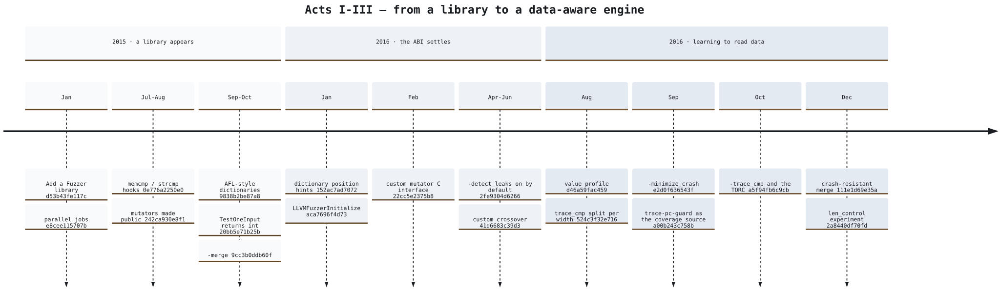
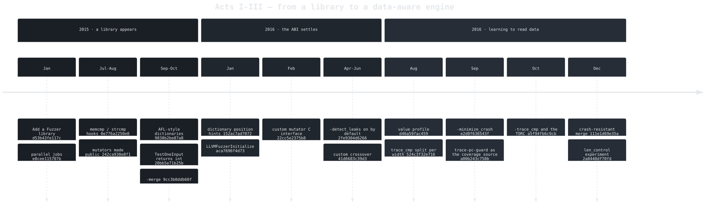
| When | Design change | Commit | Why it mattered |
|---|---|---|---|
| ~2013 | AFL proves coverage-guided greybox fuzzing, out of process | — | the ancestor: coverage as the fitness function |
| 2015-01-27 | libFuzzer is born as llvm/lib/Fuzzer; the target is
extern "C" void TestOneInput(const uint8_t*, size_t) and coverage comes from
ASan's coverage, not a dedicated pass |
d53b43fe117c |
the two founding bets: run in-process, and borrow the sanitizers' instrumentation instead of shipping your own (§1.1) |
| 2015-07 | memcmp/strcmp weak hooks, "data-flow-guided fuzzing
without DFSan" |
0e776a2250e0,
7f4227d59a19 |
first admission that edges alone cannot crack a string compare (§3.3's
AddValueForMemcmp) |
| 2015-08 | the mutators are moved into the public interface so custom mutators can reuse them | 242ca930e8f1 |
the ancestor of LLVMFuzzerMutate — golden rule 1 of §3.8 |
| 2015-09 | AFL-format dictionaries replace an encrypted-corpus "tokens" experiment that was reverted as "a bad idea" | 6ea1b69fcf53,
9838b2be87a8 |
interoperability with other fuzzers beats cleverness — a recurring theme |
| 2015-10-02 | TestOneInput becomes LLVMFuzzerTestOneInput and
returns int ("API breaking; fuzzers will need to be updated") |
20bb5e71b25b
(= e39fec5b0664) |
the accept/reject corpus filter of §1.6 — note the value was unused for a year before it acquired meaning |
| 2016-01 | LLVMFuzzerInitialize: a one-time setup hook that may edit
argv |
aca7696f4d73 |
where a kernel harness opens /sys/kernel/debug/kcov (§6.4) |
| 2016-02 / 2016-06 | LLVMFuzzerCustomMutator, then
LLVMFuzzerCustomCrossOver — both plain C, both weak |
22cc5e2375b8,
41d6683c39d3 |
structure-aware fuzzing (§3.8); the weak-symbol design is what let the ABI grow without breaking a single existing target |
| 2016-04 | leak detection becomes a default, via the cheap malloc/free counter first and LeakSanitizer only on imbalance | 2fe9304d6266,
fd6ad5bba91f |
the two-phase heuristic of §1.5 and §4.4 |
| 2016-08-16 | value profile — "treats new values as new coverage" | d46a59fac459 |
a gradient toward passing a compare (§3.3) |
| 2016-08-18 | one __sanitizer_cov_trace_cmp becomes
trace_cmp{1,2,4,8}, dropping the type argument "to save a bit performance" |
524c3f32e716 |
the callback family you meet in §3.2's menu; width is encoded in the name because this path is the hottest in the program |
| 2016-09 | MaxLen is split into MaxInputLen and
MaxMutationLen |
be0ed59cdc9b |
why a custom mutator must respect a MaxSize that moves (§3.8, rule 2) |
| 2016-10-14 | -trace_cmp=1 and TableOfRecentCompares, explicitly
"a reincarnation of the previously deleted -use_traces, but… it scales well" |
a5f94fb6c9cb |
the TORC of §3.4 — the second attempt at an idea that failed once |
| 2016-12 | crash-resistant merge, on by default two weeks later | 111e1d69e35a,
628b43aab6b9 |
the resumable control file of §4.5 |
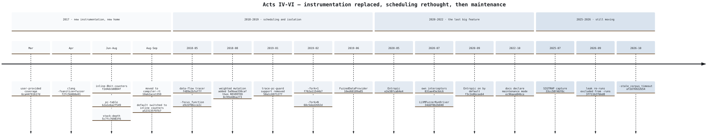
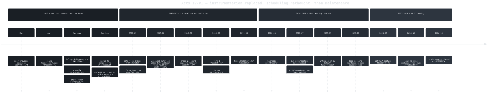
| When | Design change | Commit | Why it mattered |
|---|---|---|---|
| 2017-03-23 | __libfuzzer_extra_counters — "create experimental support
for user-provided coverage signal" |
6ca44f91617d |
the single commit all of Chapter 2 and Chapter 6 stand on (§2.2) |
| 2017-04-24 | -fsanitize=fuzzer appears in the clang driver;
fuzzer-no-link follows in August |
f2fc5b068e01,
33613f63f614 |
before this you wired the instrumentation flags and the archive by hand |
| 2017-06 → 2017-09 | the instrumentation migration:
inline-8bit-counters support, then __sanitizer_cov_pcs_init
(pc-table), then pc-table added to -fsanitize=fuzzer, then
the default switched from trace-pc-guard to inline counters |
f2d4dcb8884f,
b2a1eba2f549,
7dbb1e179edb,
a523135f97b7 |
the most consequential change in the engine's history for this book. A call per edge became an increment per edge plus a parallel PC table: coverage became data you can read rather than events you must receive — which is exactly why a kernel can donate it (§1.9) |
| 2017-08 | stack-depth instrumentation, then enabled for
-fsanitize=fuzzer; the step function is softened twice in December because the
original "explod[ed] the corpus size" |
5c7fc76983f6,
2ad8d948b26a,
de891a19467d |
the fourth feature band of §4.2, and a case study in tuning a signal down rather than off |
| 2017-08-21 | llvm/lib/Fuzzer → compiler-rt/lib/fuzzer; the old
tree is deleted in October |
10ab2ace1359,
d3b231c44d05 |
ships with the sanitizer runtimes; also why pre-2017 line references never resolve |
| 2017-12 | Fuchsia support; -use_counters honoured properly |
ffb1132e52f1,
2659c63e2e27 |
the portability work that produced the three FuzzerExtraCounters*.cpp variants of
§2.5 |
| 2018-02 | len_control becomes a default (1000), after one revert and two
rewrites |
36c89b3c7788 |
the lim: field in the stat line; auto-disabled for custom mutators in 2019
(0784e01a98a0, §3.8) |
| 2018-05 → 2019-06 | the data-flow trace line of work: a DFSan-based tracer,
-focus_function, MutateWithMask, then -focus_function=auto
and the removal of the external Python scripts |
f489e2bfef7f,
e9c6f06cce2c,
6b87e0c18f04,
e9aaa5582fa1 |
the only targeted mutator in the engine (§3.7) — and still opt-in, seven years later |
| 2018-08 | weighted mutation selection added, then removed four weeks later | 5a9baa330caf
→ 8c95b48ba273 |
the engine's clearest encoded opinion: intelligence belongs in selection and feedback, not in guessing which byte to flip (§3.7) |
| 2019-01-29 | trace-pc and trace-pc-guard support
removed; the callbacks become warning stubs that exit(1) |
50a1c6971277 |
why every tutorial that tells you to pass -fsanitize-coverage=trace-pc-guard to a
libFuzzer target is now wrong (§1.9, §3.3) |
| 2019-02 | -fork=1, then -fork=N, then a Windows port — "making
the fuzzing more resilient to timeouts and OOMs" |
f762a11544b7,
60c5ded2692d,
518514e81d46 |
§4.5; the in-process engine finally admits it needs a parent process |
| 2019-06 | FuzzedDataProvider lands, moving to
include/fuzzer/ two months later |
10ed68189a85,
f1b0a93e3a77 |
the front/back split and its positional fragility (§3.7) |
| 2020-05 → 2020-09 | Entropic energy-based scheduling, published as a paper, on by default four months later | e2e38fca64e4,
f3c2e0bcee64 |
the last large feature; the energy maths of §4.3 and the banner you see at every startup |
| 2020-07 | libFuzzer links its own interceptors when no other sanitizer runtime is
present; LLVMFuzzerRunDriver becomes public API |
831ae45e3dc6,
34ddf0b2b040 |
FuzzerInterceptors.cpp is why memcmp feedback survives a plain
-fsanitize=fuzzer build; the driver export is what §9.4 builds on |
| 2021 | "Refactor mutation strategies into a standalone library" is proposed and reverted three times; MSan false positives around custom mutators are fixed | c4a41cd77c15,
361f742f168d,
423024904825 |
the mutator still resists extraction; the __msan_unpoison calls in §3.8's swap code
date from here |
| 2022-10-05 | the docs are rewritten "to reflect the current state": authors moved to Centipede, libFuzzer is in maintenance mode | ec96aea846ce |
the status note below — read with the next row |
| 2025–2026 | maintenance mode in practice: SIGTRAP capture, Darwin OOM handling
delegated to the kernel, leak-verification re-runs excluded from -runs,
-stop_file fixes, and a new -stale_corpus_timeout flag |
33cc58f46f0c,
49d043f831b9,
3ff11b27bbd8,
af2d76922b54 |
small, real improvements are still landing — "maintenance" means no new subsystems, not no commits |
llvm/docs/LibFuzzer.md has said since
ec96aea846ce
(2022-10) that libFuzzer is supported for important bug fixes but should not be expected to grow major
features. Do not read that as abandonment: the log shows behaviour-changing commits through
2026, including a brand-new flag (-stale_corpus_timeout,
af2d76922b54,
2026-10). Meanwhile the compiler-side half — SanitizerCoverage — is actively extended, because it is
shared by Centipede, AFL++, the kernel's KCOV, and the trace-args/trace-ret
proposal of §8.3. The lesson for a contributor: patches to the pass have a much larger
audience than patches to the engine.len_control was rewritten three times before becoming a default.-use_traces failed and came back as the TORC; the
"tokens" experiment failed and came back as AFL dictionaries.compiler-rt/lib/fuzzer/FuzzerTracePC.{h,cpp} — CollectFeatures,
the 8-bit counter → feature encoding, TORC, value profile. The other half of every
§1.5–§1.6 call.compiler-rt/lib/fuzzer/FuzzerCorpus.h — InputInfo, entropic
energy, feature ownership and input reduction.compiler-rt/lib/fuzzer/FuzzerMutate.cpp — the mutation zoo behind every
MS: trailer.llvm/lib/Transforms/Instrumentation/SanitizerCoverage.cpp — the compiler
pass that plants all of §1.9's callbacks, and the pass the trace-args/
trace-ret proposal (llvm/llvm-project#201410) extends.compiler-rt/lib/fuzzer/FuzzerDriver.cpp — flag parsing, -merge,
-minimize_crash, -fork orchestration.clang/tools/clang-fuzzer/ (protobuf-based
structure-aware fuzzing) and llvm/tools/llvm-isel-fuzzer/ (custom
LLVMFuzzerInitialize that parses backend flags).llvm/llvm-project at commit df2b8087adbc and the Linux lab tree at
419142eb2182. Line numbers drift — between the first draft and this revision,
HandleCmp moved from FuzzerTracePC.cpp:386 to :356 — so treat
the function name as the citation and the line as a hint. Two habits keep you out of trouble:
grep for the function rather than jumping to the line, and when you cite libFuzzer in your own writing,
pin the URL to a commit (.../blob/<sha>/...#L356) instead of to
main.Sources: llvm/docs/LibFuzzer.md, git log over
llvm/lib/Fuzzer and compiler-rt/lib/fuzzer, and the files above.
Chapter 1 dissected libFuzzer as it ships. Chapter 2 reads three real-world write-ups that push the engine somewhere it was never designed to go — the inside of an operating-system kernel — and asks a single question a compiler student should be able to answer by the end: if the fuzzing engine can only see a plain array of bytes, what exactly does the compiler have to produce, and who is allowed to fill that array?
__libfuzzer_extra_counters linker section and why it lets
non-instrumented code (a kernel, a rewritten binary) donate coverage to libFuzzer.CollectFeatures do its job."__sanitizer_cov_trace_pc,
__sanitizer_cov_trace_cmp*) and say which fuzzing signal it feeds.The two source documents are:
Read together they form a natural progression — same target class, three different engines, one shared trick — which is exactly why they make a good capstone for the material in Chapter 1.
__libfuzzer_extra_countersBefore the case studies, we need the one runtime feature they all stand on. In §1.6 we saw
TPC.CollectFeatures walk the instrumented 8-bit counter regions that
SanitizerCoverage emits. What Chapter 1 did not show is that the very same loop also
walks a second array — one that the compiler never fills, that you fill:
6ca44f91617d (2017-03), "create experimental support for user-provided coverage signal", added exactly this array. Every client in this chapter — the AFL/KCOV shim (§2.3), the KCOV harness (§2.4), Pishi (§2.5) — is a consumer of that one commit.// The linker auto-creates these two symbols to bracket any input section
// named "__libfuzzer_extra_counters". They are weak: if no such section
// exists, both resolve to the same address and the range below is empty.
__attribute__((weak)) extern uint8_t __start___libfuzzer_extra_counters;
__attribute__((weak)) extern uint8_t __stop___libfuzzer_extra_counters;
uint8_t *ExtraCountersBegin() { return &__start___libfuzzer_extra_counters; }
uint8_t *ExtraCountersEnd() { return &__stop___libfuzzer_extra_counters; }
void ClearExtraCounters() { // called from ResetMaps(), once per run
... for (Beg..End) *Beg = 0; ... // hand-written memset, not asan-ified
}__libfuzzer_extra_counters). libFuzzer treats every non-zero byte in it as a
coverage feature, identical in status to a byte the compiler's own instrumentation
would have produced. You declare it like this:
List 2.2 declaring extra counters: a byte array in a magic linker section
__attribute__((section("__libfuzzer_extra_counters")))
unsigned char libfuzzer_coverage[32 << 10]; // 32 KiB of hit countersHere is the payoff, and it is worth reading slowly. In §1.6, CollectFeatures
appended features from the instrumented modules. Two lines later in the same function it does
this:
size_t FirstFeature = 0;
for (each instrumented module region) // ← compiler-emitted 8-bit counters
FirstFeature += 8 * ForEachNonZeroByte(Region.Start, Region.Stop,
FirstFeature, Handle8bitCounter);
FirstFeature += // ← YOUR extra counters, same handler
8 * ForEachNonZeroByte(ExtraCountersBegin(), ExtraCountersEnd(),
FirstFeature, Handle8bitCounter);That marked block is the whole seam. The engine does not care whether a
non-zero byte was written by compiler-inserted instrumentation or by a hand-written loop that
copied numbers out of a kernel. Both go through Handle8bitCounter, both become
features, both drive the corpus decisions from §1.6, and both get zeroed by
ClearExtraCounters() inside ResetMaps() before the next run. A kernel
fuzzer, then, needs to accomplish exactly one thing per execution: translate whatever the
kernel recorded into non-zero bytes in that array.
__start_/__stop_ trick. When you place data in a section called
foo, the GNU/LLVM linker automatically synthesizes two symbols,
__start_foo and __stop_foo, pointing at the first byte and
one-past-the-last byte of everything gathered into that section. This is how a library can
find an array that user code defined, without any registration call — the same
mechanism SanitizerCoverage itself uses for its counter and PC tables
(__start___sancov_cntrs, etc.). The weak attribute means "don't
error if nobody created this section"; the range simply comes back empty. If you ever add a
new instrumentation table to the compiler, this is the ABI pattern you will copy.FuzzerExtraCountersDarwin.cpp forces the macOS author to patch
LLVM itself.referencelibfuzzer-kcov.html · engine: AFL ·
transport: KCOV ring buffer → AFL shared memory
This is the oldest and, pedagogically, the cleanest of the three, because AFL's coverage
interface is even simpler than libFuzzer's. AFL shares a 64 KiB array of 8-bit
counters with the target — the file calls it trace_bits or
shared_mem — where each byte is a hit counter for one
(branch_source, branch_dest) edge. An AFL-instrumented compiler emits, at every
branch, code equivalent to:
cur_location = <COMPILE_TIME_RANDOM>; // a random label per block
shared_mem[cur_location ^ prev_location]++; // bump the edge's counter
prev_location = cur_location >> 1; // shift so A→B ≠ B→A>> 1 breaks the symmetry of XOR so that the edge A→B and the edge B→A hash to
different buckets — without it, direction would be invisible.The kernel, of course, was not compiled by afl-gcc, so those magic
labels do not exist. What the kernel does offer is KCOV: enable it with an
ioctl, run the code you care about, and a per-task ring buffer fills with the raw program
counters (%rip values) of every basic block executed:
KCOV_TRACE_PC mode — enable, exercise, read the ring buffer
ioctl(kcov_fd, KCOV_ENABLE, KCOV_TRACE_PC);
/* ... exercise kernel code via a syscall ... */
ioctl(kcov_fd, KCOV_DISABLE, 0);
// kcov_ring[0] = count; kcov_ring[1..count] = PCs of executed blocksThe shim's job is to convert one coverage vocabulary into the other. It hashes each KCOV program counter into a 16-bit bucket and replays AFL's own edge formula, so a kernel PC trace ends up looking, to AFL, exactly like output from an AFL-instrumented binary:
List 2.6 the shim's translation: KCOV program counters into AFL's edge-hashed bitmapuint16_t prev_location = 0;
for (i = 0; i < n; i++) {
uint16_t cur_location = hash_function(kcov_ring[i + 1]); // PC → uniform label
shared_mem[cur_location ^ prev_location]++; // AFL's edge encoding
prev_location = cur_location >> 1;
}Around this sits a small fork-server loop that reads one test case from AFL, enables
KCOV, pokes the kernel (in the post, by crafting a netlink message out of the
input bytes), disables KCOV, fills shared_mem, and reports whether
dmesg showed a fresh crash. The kernel runs under KVM via virtme so
a bug does not take down the host.
referencelibfuzzer-kcov.md (part 1) · engine:
libFuzzer · transport: KCOV ring buffer → __libfuzzer_extra_counters
Now swap AFL for libFuzzer. Because of §2.2, there is no shim binary to fake and no 64 KiB
protocol to imitate — you just declare the extra-counters array and fill it. The harness sets
KCOV up once in LLVMFuzzerInitialize (recall §1.3: the optional startup hook), then
brackets each unit with enable/collect/disable:
LLVMFuzzerInitialize
__attribute__((section("__libfuzzer_extra_counters")))
unsigned char libfuzzer_coverage[32 << 10]; // the §2.2 array
extern "C" int LLVMFuzzerInitialize(int *argc, char ***argv) {
kcov = open("/sys/kernel/debug/kcov", O_RDWR);
ioctl(kcov, KCOV_INIT_TRACE, KCOV_COVER_SIZE); // KCOV_INIT_TRACE — there is no …_TRACE64
kcov_data = mmap(...); // shared ring buffer of unsigned long
ioctl(kcov, KCOV_ENABLE, KCOV_TRACE_PC);
return 0;
}
void kcov_stop() { // after exercising the kernel
unsigned long ncov = kcov_data[0]; // number of PCs recorded
for (unsigned long i = 0; i < ncov; i++) {
unsigned long pc = kcov_data[i + 1];
libfuzzer_coverage[pc % sizeof(libfuzzer_coverage)]++; // PC → extra counter
}
}Compare the marked line with §2.3's shared_mem[...]++. It is the
identical idea — hash a kernel PC into a slot and bump it — but now the array is the
one CollectFeatures reads directly (§2.2), so the fuzzer needs no impersonation.
libFuzzer clears the array for you each run via ClearExtraCounters().
(1) Comparison coverage from the kernel. The kernel config in the post enables
KCOV_ENABLE_COMPARISONS. This is the kernel's counterpart of the compiler's
-fsanitize-coverage=trace-cmp from §1.9: instead of (or in addition to) block PCs,
KCOV can record the operands of comparison instructions. Feed those to libFuzzer's
value-profile / table-of-recent-compares machinery and the fuzzer gains the same
"gradient toward passing a comparison" superpower it has for user-space targets. Same concept,
produced by KCOV instead of by __sanitizer_cov_trace_cmp*.
(2) Structure-aware input via libprotobuf-mutator. Kernel APIs are stateful
— you cannot feed a raw byte blob to a syscall sequence and expect to get deep. The post uses
libprotobuf-mutator (LPM) and the DEFINE_PROTO_FUZZER macro, so the fuzzer
mutates a typed protobuf message (a description of syscalls and their arguments) rather than
bytes, and LPM serialises it into the input. This is the same "custom mutator" seam from §1.3
(LLVMFuzzerCustomMutator), just wrapped in a library.
dmesg; from the userspace harness's point of view the syscall just returns and
the loop continues — the guilty input is mutated away and lost. The author's fix is to patch
the kernel's print_error_description() in mm/kasan/report.c to
send_sig_info(SIGSEGV, …, current), delivering a signal to the very task that
triggered the bug. Now the crash lands inside the harness process,
ExecuteCallback's signal handler fires, and the reproducer is saved. This is a
beautiful illustration of a §1.5 invariant — "a bug is only a bug if it reaches the engine
as a signal on the fuzzing thread" — being enforced by editing the target rather than the
engine.referencelibfuzzer-kcov.md (part 2) · engine:
libFuzzer · transport: static binary rewriting → _sanitizer_cov_trace_pc
→ shared memory → extra counters
Case studies A and B both had a cooperating target: the kernel came with KCOV
because it was compiled from source with the right flags. Pishi asks the hardest version of the
question — what if you have no source and no coverage facility at all? The target is a
closed-source Apple kernel extension (KEXT); you cannot recompile it, and Apple Silicon offers
no kernel debugger. There is nothing for -fsanitize-coverage to instrument.
The answer is static binary rewriting: Pishi edits the compiled KEXT so that each basic block, when executed, calls a coverage-recording function. Because it cannot recompile, it must reproduce by hand what the compiler would have inserted. The mechanics are worth seeing because they make "instrumentation" concrete:
.rept/.endr to spray them), each a slot able to save registers,
call the coverage function, run one displaced instruction, and jump back._sanitizer_cov_trace_pc — the same
symbol name the compiler would emit for -fsanitize-coverage=trace-pc —
which records the block's address into a coverage buffer shared with the fuzzer.void sanitizer_cov_trace_pc(uint16_t kext, uintptr_t address) {
if (instrumented_thread == current_thread_id() && (targeted_kext & kext)) {
unsigned long pos = coverage_area->kcov_pos; // exactly KCOV's layout:
coverage_area->kcov_area[pos] = address; // [0]=count, [1..]=PCs
coverage_area->kcov_pos += 1;
}
}Then, in the userspace fuzzer, the loop is identical in spirit to case study B — copy PCs from the shared buffer into the extra-counters array:
List 2.9 Pishi's userspace collector — ring-buffer PCs folded into the extra-counters arrayvoid pishi_collect() {
for (int i = 0; i < coverage->kcov_pos; i++)
_pishi_libfuzzer_coverage[coverage->kcov_area[i] % sizeof(_pishi_libfuzzer_coverage)]++;
}FuzzerExtraCountersDarwin.cpp is a
stub — uint8_t *ExtraCountersBegin() { return nullptr; } — so
CollectFeatures finds an empty range and none of the Pishi coverage would count.
The author's remedy is to modify LLVM's own compiler-rt and rebuild it, implementing the
Darwin extra-counters section (the Mach-O equivalent of the __start_/__stop_
symbols from §2.2). This is the moment the project stops being "a fuzzing harness" and becomes
"a patch to the toolchain" — precisely the kind of change a first-time compiler-rt contributor
would send upstream.
And you would not be starting from nothing. The third sibling,
FuzzerExtraCountersWindows.cpp, solves the identical problem on a platform that also
lacks __start_/__stop_ symbols — by defining the bracketing symbols itself in
a section whose name sorts just before the user's:
FuzzerExtraCountersWindows.cpp — bracketing symbols it defines itself, ordered by section-name sort
// the section name ends in "aaa" so it sorts before __libfuzzer_extra_counters
#pragma section(".data$__libfuzzer_extra_countaaa")
ATTRIBUTE_ALIGNED(16)
__declspec(allocate(".data$__libfuzzer_extra_countaaa")) uint8_t
__start___libfuzzer_extra_counters[16] = {0};Read all three files side by side and the shape of the Darwin patch
falls out: Mach-O can answer the same question directly with
getsectiondata(&_mh_execute_header, "__DATA", "__libfuzzer_extra_counters", &size),
no sort trick required. One platform implemented twice is the best possible specification for
implementing it a third time.
fork() inside
LLVMFuzzerTestOneInput: the child enables coverage, runs the case, and exits
(letting the OS reclaim its resources); the parent waits and harvests coverage from the shared
buffer. Each iteration then starts from a semi-fresh kernel state. The same problem is why
syzkaller and others go to such lengths for a clean slate per execution.All three case studies chose basic-block coverage because raw PCs are what KCOV and a binary rewriter can cheaply produce. But a compiler contributor should know the full ladder, because each rung is a different amount of work in the instrumentation pass, and the Pishi write-up spends real effort on the distinctions.
| Metric | What it records | Distinguishes… | Cost / caveat |
|---|---|---|---|
| Block | which nodes executed | reaching a block vs not | cheapest; blind to order and to which edge was taken |
| Edge | which node→node transitions executed | A→B→C from A→C→B (see AFL quote below) | needs edge identity; "critical edges" must be split first |
| Path | whole routes through the CFG | every distinct execution history | most precise; suffers path explosion — usually impractical |
| Data-flow | which input bytes reach which operations / comparisons | how close a value came to a target | trace-cmp, value profile, DFSan; the §1.9 "gradient" signals |
Why edge beats block is the single most important idea here, and the AFL technical paper (quoted in the Pishi post) states it best:
List 2.11 the AFL paper's example: two different control flows, identical block coverage A -> B -> C -> D -> E (edges: AB, BC, CD, DE)
A -> B -> D -> C -> E (edges: AB, BD, DC, CE)Both executions cover the same blocks {A,B,C,D,E}, so block coverage cannot tell them apart — yet they are different control flows, and "security vulnerabilities are more often associated with unexpected state transitions than with merely reaching a new block."
SanitizerCoverage claims edge coverage, and it earns part of that claim by splitting critical edges. A critical edge is one that is neither the only edge leaving its source nor the only edge entering its destination; on such an edge you cannot tell, from block counts alone, whether it was taken. The compiler inserts a synthetic empty block on the edge and instruments that:
List 2.12 a critical edge, and the dummy block the compiler instruments in its placevoid foo(int *a) {
if (a) { *a = 0; }
else { /* compiler inserts a dummy block here, then instruments it */ }
}llvm/lib/Transforms/Instrumentation/SanitizerCoverage.cpp yourself.The last rung, data-flow, is where the compiler helps the fuzzer defeat "magic value" checks. A 32-bit equality is a wall: random mutation guesses it with probability 2⁻³². The trick (compare shattering / sub-instruction profiling, §1.9's trace-cmp) is to let the instrumentation observe the comparison byte-by-byte, so the fuzzer gets partial credit for each correct byte:
| The wall (1 in 4 billion) | What trace-cmp lets the fuzzer see (1 in 256, four times) |
|---|---|
|
|
The compiler does not literally rewrite the if; it emits a
__sanitizer_cov_trace_const_cmp4(0xabad1dea, input) callback beside it, handing the
runtime both operands. libFuzzer's value profile then rewards inputs whose operand shares more
high bytes with the constant — the same gradient described in §1.9. Case study B gets this from
the kernel for free by turning on KCOV_ENABLE_COMPARISONS.
Everything in Chapter 2 collapses into one table. Read it as: whatever the target, the job is always to arrive in the middle column, after which the engine from Chapter 1 takes over unchanged.
| Case study | Coverage produced by… | …lands in the engine via… | Engine sees |
|---|---|---|---|
| A — AFL + KCOV (2019) | kernel KCOV ring buffer of PCs | hash PC → AFL shared_mem[64 KiB] |
AFL edge counters |
| B — libFuzzer + KCOV (2024) | kernel KCOV (PCs + comparisons) | hash PC → __libfuzzer_extra_counters |
CollectFeatures features (§1.6) |
| C — Pishi (macOS, 2024) | hand-inserted _sanitizer_cov_trace_pc via binary rewriting |
shared buffer → __libfuzzer_extra_counters (Darwin section patched into LLVM) |
CollectFeatures features (§1.6) |
| Baseline — ordinary target (Chapter 1) | compiler's SanitizerCoverage pass | instrumented 8-bit counter modules | CollectFeatures features (§1.6) |
The bottom three rows converge on the identical column. That convergence is the course's thesis: the compiler's contract with the fuzzer is a byte array of hit counters, and once you can fill that array — by any means — you can fuzz anything.
FuzzerTracePC.h around
CollectFeatures and follow how FirstFeature is threaded
through the instrumented modules and then the extra counters. In one sentence, explain
why the extra counters must be appended after the modules rather than mixed in.FuzzerExtraCounters.cpp against
FuzzerExtraCountersDarwin.cpp. What does the Linux version get from the
linker that the Darwin stub cannot, and what Mach-O feature would you need to close the
gap? (This is the exact change the Pishi author had to make.)if (x == 0xCAFEF00D) abort();, build it with and without
-fsanitize-coverage=trace-cmp, and compare how many runs each needs.
Explain the difference using §2.6's compare-shattering table.SIGSEGV. Point to the code in FuzzerLoop.cpp/the signal
handlers that makes this necessary, and describe what libFuzzer would (not) do without
the patch.prev_location
scheme in §2.3.)Chapter 2 sources: libfuzzer-kcov.html (Majkowski / Cloudflare,
2019) and libfuzzer-kcov.md (r00tkitsmm, 2024), cross-checked against
compiler-rt/lib/fuzzer/{FuzzerExtraCounters.cpp, FuzzerExtraCountersDarwin.cpp,
FuzzerTracePC.h} at this checkout. External claims (KCOV, KASAN, AArch64 encoding) are
reported as stated by those authors; the compiler-rt line references were verified locally.
Chapters 1 and 2 treated coverage as "a byte array the engine reads." Chapter 3 opens that array and follows a single comparison instruction all the way around the loop: from the moment the compiler plants a callback beside it, through the runtime that catches the callback and files it as a feature, into the mutator that reads that feature back and rewrites the input to satisfy the comparison. This closed cycle is the heart of "coverage-guided," and it lives in exactly three files.
SanitizerCoverage.rst as a menu and name which items make up
libFuzzer's actual ABI today (and which it now rejects outright).__sanitizer_cov_* callback in FuzzerTracePC.cpp to
the exact data structure it feeds — counter module, PC table, TORC, or value profile.HandleCmp and
Mutate_AddWordFromTORC together defeat magic-value checks.clang/tools/clang-fuzzer/ as a real client, and read its
git log as a maintenance story a first contributor can join.Keep this map in view; every section below is one arrow on it.
SanitizerCoverage.rst)-fsanitize-coverage= is not one feature but a menu of independent
instrumentation kinds, each defined by the callback(s) the compiler inserts and the runtime
must define. The document groups them; so will we. The single most important thing to
understand as a contributor is that the pass only emits calls — it never decides what they
mean. Meaning lives entirely in whoever implements the callback (libFuzzer, a kernel, AFL,
your own tool).
if (a == b) g(); (schematic, SanitizerCoverage.cpp)
// source // after -fsanitize-coverage=inline-8bit-counters,trace-cmp :
__sanitizer_cov_trace_cmp4(a, b); // data-flow: a real call, both operands
if (a == b) if (a == b) {
g(); counters[18]++; // control-flow: an INLINE increment
g();
}One comparison, two independent signals: an inline counter recording which edge ran, and a callback handing the runtime the operands it compared. Neither emitted line knows what a consumer will do with it — that is this section's whole point, and the reason the identical instrumentation feeds libFuzzer, a kernel (KCOV), or AFL without change.
| Group | -fsanitize-coverage= flag | Callback the compiler inserts | Granularity / notes |
|---|---|---|---|
| Coverage (control flow) |
trace-pc-guard | __sanitizer_cov_trace_pc_guard(&guard) + …_guard_init(start,stop) | per edge; each edge has a uint32_t guard |
inline-8bit-counters | __sanitizer_cov_8bit_counters_init(start,end) | per edge; inline counter++, no call. libFuzzer's primary signal. | |
inline-bool-flag | __sanitizer_cov_bool_flag_init(start,end) | per edge; sets a bool — cheaper, "hit / not hit" only | |
pc-table | __sanitizer_cov_pcs_init(beg,end) | parallel [PC, PCFlags] array; bit0 = function-entry block. Required to symbolize counters. | |
trace-pc / trace-pc-entry-exit | __sanitizer_cov_trace_pc() / …_entry()/…_exit() | per edge / per function; used by the kernel (KCOV) | |
| Data flow | trace-cmp | __sanitizer_cov_trace_cmp{1,2,4,8}, …_const_cmp*, …_trace_switch | before every comparison / switch; hands the runtime both operands |
trace-div | __sanitizer_cov_trace_div{4,8}(Val) | right-hand side of integer divisions | |
trace-gep | __sanitizer_cov_trace_gep(Idx) | non-constant array indices (GEP) | |
trace-loads/trace-stores | __sanitizer_cov_load* / …_store* | address of each load / store | |
| Dataflow (proposed) |
trace-args / trace-ret |
__sanitizer_cov_trace_args(pc,idx,size,ptr,offsets,nfields) / …_trace_ret(…) |
function entry / before return; captures scalar & struct-field layouts (via DICompositeType, needs -g). For the kernel's KCOV dataflow — libFuzzer has no consumer.
Not in main: see llvm/llvm-project#201410 (§8.3). |
| Structure | control-flow | __sanitizer_cov_cfs_init(beg,end) | a sancov_cfs table of successors + callees per block |
| Depth | stack-depth | updates thread-local __sancov_lowest_stack (or a callback) | tracks deepest call chain; a libFuzzer feature (§3.3) |
edge (default), bb, or func — chooses where any
of the above are placed; no-prune disables the compiler's redundant-edge pruning.
(2) Critical-edge splitting is what turns edge mode from block coverage
into (enhanced) edge coverage: for the diamond A→{B,C}→C, the edge A→C is
critical — indistinguishable from block counts alone — so the pass inserts a dummy
block D on it and instruments that. This is the same picture §2.6 drew from the
fuzzer side; here it is the compiler's job..rst documents
trace-pc-guard and trace-pc at length, so you would reasonably expect
libFuzzer to accept them. It does not — not anymore. As §3.3 shows, those callbacks now
call WarnAboutDeprecatedInstrumentation and exit(1). The older
callbacks live on for other consumers — the Linux kernel and AFL — which is precisely
why the menu and the consumer are separate files: one compiler, many runtimes.
And the live set is five items, not three. Read the driver rather than guessing:
List 3.2 clang/lib/Driver/SanitizerArgs.cpp:714 — the five features the flag really turns on// clang/lib/Driver/SanitizerArgs.cpp:714 — what -fsanitize=fuzzer really turns on
CoverageFeatures |= CoverageInline8bitCounters | CoverageIndirCall |
CoverageTraceCmp | CoveragePCTable;
// Due to TLS differences, stack depth tracking is only enabled on Linux
if (TC.getTriple().isOSLinux())
CoverageFeatures |= CoverageStackDepth;So besides the three everybody names, you also get
indirect-calls (the caller/callee pairs of §3.3) and — on Linux only —
stack-depth, whose consumer is in CollectFeatures (§4.2). Two
default signals that most libFuzzer users have never heard of.
FuzzerTracePC.cpp)This file is the other half of every callback in §3.2 — the runtime implementations libFuzzer links in. It splits cleanly into init handlers (called once per DSO at startup, to register the counter and PC arrays) and trace handlers (called during every unit, to record data-flow signals). Let us take them in that order.
void __sanitizer_cov_8bit_counters_init(uint8_t *Start, uint8_t *Stop) {
fuzzer::TPC.HandleInline8bitCountersInit(Start, Stop); // → a Module of page-aligned Regions
}
void __sanitizer_cov_pcs_init(const uintptr_t *beg, const uintptr_t *end) {
fuzzer::TPC.HandlePCsInit(beg, end); // → a ModulePCTable of {PC, PCFlags}
}
void __sanitizer_cov_trace_pc_guard(uint32_t *Guard) { // DEPRECATED:
fuzzer::WarnAboutDeprecatedInstrumentation(...); // prints and exit(1)
}HandleInline8bitCountersInit slices the counter array into page-aligned
Regions and appends a Module; HandlePCsInit stores the
parallel [PC, PCFlags] table. At print time PrintModuleInfo emits the
familiar banner — "Loaded 1 modules (8 inline 8-bit counters)… Loaded 1 PC tables (8 PCs)"
— and hard-errors if the counts disagree (the infamous
Bug 34636, old GNU ld
dropping part of a section). The counters give the signal; the PC table lets libFuzzer
symbolize a covered edge back to a source line.
All of the comparison callbacks funnel into one function. Read it closely — it is doing two different jobs at once:
List 3.4 compiler-rt/lib/fuzzer/FuzzerTracePC.cpp:356 — HandleCmp, which does two jobs per comparisontemplate <class T>
void TracePC::HandleCmp(uintptr_t PC, T Arg1, T Arg2) {
uint64_t ArgXor = Arg1 ^ Arg2;
if (sizeof(T) == 4) TORC4.Insert(ArgXor, Arg1, Arg2); // job 1: remember the operands
else if (sizeof(T) == 8) TORC8.Insert(ArgXor, Arg1, Arg2);
uint64_t HammingDistance = Popcountll(ArgXor); // bits that differ
uint64_t AbsoluteDistance = (Arg1 == Arg2 ? 0 : Clzll(Arg1 - Arg2) + 1);
ValueProfileMap.AddValue(PC * 128 + HammingDistance); // job 2: "how close" as coverage
ValueProfileMap.AddValue(PC * 128 + 64 + AbsoluteDistance);
}(Arg1, Arg2)
are stashed, keyed by their XOR. §3.4 shows the mutator drawing from this table to splice a
wanted constant straight into the input. This is what actually solves
x == 0xCAFEF00D.HammingDistance) and the magnitude of the gap (AbsoluteDistance)
— are folded with the PC into a bitset. Each newly-set bit is a new feature, so an input
that gets closer to satisfying the compare is rewarded even before it matches.
This is the "gradient" from §1.9/§2.6, and it only counts when -use_value_profile=1.Everything else is a reduction onto HandleCmp or onto the value profile:
| Callback | What the runtime does with it |
|---|---|
trace_const_cmp* | same as trace_cmp* (one operand known constant — a stronger dictionary hint) |
trace_switch(Val, Cases) | finds the two case constants bracketing Val and calls HandleCmp against each; skips boring all-small cases |
trace_div{4,8}(Val) | HandleCmp(PC, Val, 0) — treat the divisor like a comparison against zero |
trace_gep(Idx) | HandleCmp(PC, Idx, 0) — array index as a value signal |
trace_pc_indir(Callee) | HandleCallerCallee: (Caller&0xfff) | ((Callee&0xfff)<<12) → value profile (the "indirect caller/callee pairs" feature) |
__sanitizer_weak_hook_memcmp / strncmp / strcmp / memmem / strstr | AddValueForMemcmp: the common-prefix length becomes the signal, and the two strings are inserted into the TORCW word table / MMT memmem table |
RunningUserCallback gate. Every memcmp/
strcmp weak hook begins with if (!fuzzer::RunningUserCallback) return;.
Recall from §1.5 that ExecuteCallback sets that flag only around the target call.
Without the gate, libFuzzer's own internal string compares would pollute the value
profile with noise. It is a one-line guard that encodes a subtle invariant — "only the target's
comparisons are interesting" — and a good example of the kind of detail you must preserve when
touching this file.trace-args/trace-ret are — and aren't.
Search this file for a __sanitizer_cov_trace_args handler and you will not find
one. That is not an omission: those callbacks (proposed in llvm/llvm-project#201410, §3.2) are aimed at the
kernel's KCOV dataflow subsystem, not at libFuzzer. It is the cleanest possible
demonstration of the one-compiler-many-runtimes design — the pass can emit a brand-new signal
that an existing engine simply ignores, while a different consumer picks it up.We now have half a cycle: the compiler emits trace_cmp, and
HandleCmp files the operands in TORC. Here are the two pieces we have so far only
named — the table, and the one function that fills it:
template<class T, size_t kSizeT>
struct TableOfRecentCompares { // "TORC"
static const size_t kSize = kSizeT; // 32 entries per table
struct Pair { T A, B; };
void Insert(size_t Idx, const T &Arg1, const T &Arg2) {
Idx = Idx % kSize; // ring buffer: newest overwrites oldest
Table[Idx].A = Arg1; Table[Idx].B = Arg2;
}
Pair Get(size_t I) { return Table[I % kSize]; }
Pair Table[kSize];
};
// one table per operand width — that is the whole "memory" of the compare engine:
TableOfRecentCompares<uint32_t, 32> TORC4;
TableOfRecentCompares<uint64_t, 32> TORC8;
TableOfRecentCompares<Word, 32> TORCW; // memcmp / strcmp byte-strings__sanitizer_cov_trace_cmp* (§3.3)
template <class T>
void TracePC::HandleCmp(uintptr_t PC, T Arg1, T Arg2) {
uint64_t ArgXor = Arg1 ^ Arg2;
if (sizeof(T) == 4) TORC4.Insert(ArgXor, Arg1, Arg2); // remember the operands
else if (sizeof(T) == 8) TORC8.Insert(ArgXor, Arg1, Arg2);
uint64_t HammingDistance = Popcountll(ArgXor); // [0,64]: how many bits differ
uint64_t AbsoluteDistance = (Arg1 == Arg2 ? 0 : Clzll(Arg1 - Arg2) + 1);
ValueProfileMap.AddValue(PC * 128 + HammingDistance); // value profile: a "closeness" gradient
ValueProfileMap.AddValue(PC * 128 + 64 + AbsoluteDistance);
}Two independent things happen at every comparison. (1) The operands are dropped into the
ring-buffer TORC — at index (Arg1 ^ Arg2) % 32, so the slot is chosen by
the operand pair and not by the compare site: two different ifs that compare the
same values collide, and the same if with different operands lands elsewhere. With 32
slots per width, the table is a short-term memory of recent values, not a per-branch record
— which is all the mutator needs to splice one back verbatim. (2) Their distance (how many bits
differ, HammingDistance; and how far apart numerically, AbsoluteDistance) is
folded into the value profile: the gradient that lets -use_value_profile=1 reward an
input for getting closer to satisfying a check even before it passes (§3.3). Note the function is
ALWAYS_INLINE and ATTRIBUTE_NO_SANITIZE_ALL — it sits on the hottest path
in the program, so it must be tiny and must not be instrumented by its own coverage pass.
d46a59fac459 (2016-08); the compare table it sits beside, -trace_cmp / TableOfRecentCompares, in a5f94fb6c9cb (2016-10). Together they are what turned libFuzzer from an edge-counter into something that can reason about data (§3.3).The other half is in the mutator, and it is what makes the whole scheme more than a passive metric. First, the per-run reset that keeps signals attributed to the right input:
List 3.7 compiler-rt/lib/fuzzer/FuzzerTracePC.h:84 — called from ExecuteCallback (§1.5)void ResetMaps() {
ValueProfileMap.Reset(); // clear the "how close" bitset
ClearExtraCounters(); // §2.2 — the KCOV / Pishi array
ClearInlineCounters(); // the compiler's 8-bit counters
}Then, once CollectFeatures (§1.6) has turned all of those maps into 32-bit
features and the corpus has been updated, the mutator gets its turn. One of its strategies reads
straight from the table HandleCmp just filled:
size_t MutationDispatcher::Mutate_AddWordFromTORC(uint8_t *Data, size_t Size, size_t MaxSize) {
Word W; DictionaryEntry DE;
switch (Rand(4)) {
case 0: { auto X = TPC.TORC8.Get(Rand.Rand<size_t>());
DE = MakeDictionaryEntryFromCMP(X.A, X.B, Data, Size); } break; // (A,B) seen at a compare
case 1: { auto X = TPC.TORC4.Get(...); DE = MakeDictionaryEntryFromCMP(...); } break;
case 2: { auto X = TPC.TORCW.Get(...); DE = MakeDictionaryEntryFromCMP(...); } break; // memcmp words
case 3: if (Options.UseMemmem) { auto X = TPC.MMT.Get(...); DE = DictionaryEntry(X); } break;
}
...
Size = ApplyDictionaryEntry(Data, Size, MaxSize, DE); // splice B where A appears in the input
return Size;
}MakeDictionaryEntryFromCMP(A, B, Data, Size) asks: "the program just compared
A against B; does the current input contain the bytes of A?
If so, propose replacing them with B." That is the entire trick. Registered only
when Options.UseCmp is set (FuzzerMutate.cpp:49), it turns an
observed comparison into a targeted edit. Trace it around once:
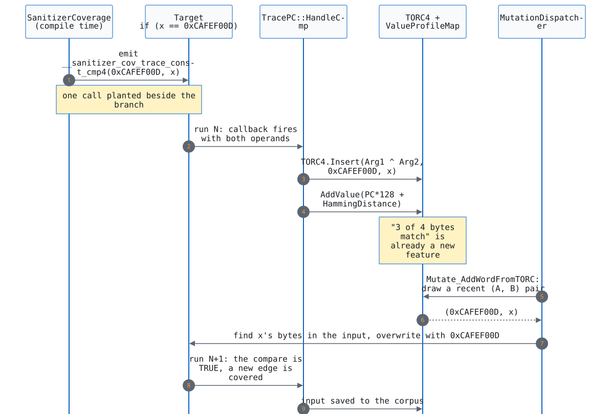
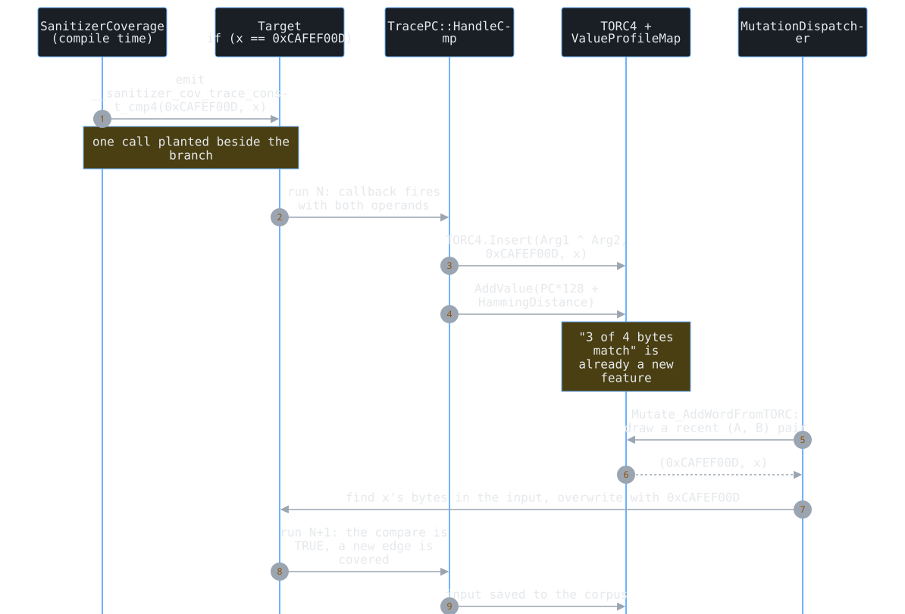
Without step ③ the fuzzer would need ~4 billion random tries to hit that constant; with it,
one. This closed loop — compiler observes → runtime remembers → mutator replays — is
the single most important mechanism separating a coverage-guided fuzzer from a dumb
random one, and it is why trace-cmp is on by default under
-fsanitize=fuzzer.
clang-fuzzer and its git logEverything so far has been engine and compiler. clang/tools/clang-fuzzer/ is the
other role from §1.2 — a client, LLVM fuzzing its own C++ front-end — and it is worth
dissecting because it shows every Chapter 1/II concept used in anger, and because its history is a
gentle on-ramp for a first-time contributor.
| File | Role (which concept) |
|---|---|
ClangFuzzer.cpp | the raw-bytes target: LLVMFuzzerTestOneInput feeds the input to clang as source (§1.3 contract) |
ExampleClangProtoFuzzer.cpp | the structure-aware target: DEFINE_BINARY_PROTO_FUZZER(const Function&) — libprotobuf-mutator mutates a typed C++ AST, exactly the §2.4 technique |
cxx_proto.proto + proto-to-cxx/ | the grammar and the serializer that turns a protobuf message into compilable C++ text |
handle-cxx/handle_cxx.cpp | the actual work: drive a CompilerInstance over the generated source |
fuzzer-initialize/fuzzer_initialize.cpp | LLVMFuzzerInitialize (§1.3 startup hook) — registers all targets & passes, sets -O2, parses trailing args |
DummyClangFuzzer.cpp | provides main() for -fsanitize=fuzzer-no-link builds (§1.2 "Dummy" pattern) |
dictionary/dictionary.c | generates a fuzzing dictionary of C++ keywords — a manual complement to the automatic TORC dictionary of §3.4 |
DEFINE_BINARY_PROTO_FUZZER(const Function& input) {
auto S = FunctionToString(input); // typed AST → C++ source text
HandleCXX(S, "./test.cc", GetCLArgs()); // compile it with the args from LLVMFuzzerInitialize
}Notice how the pieces from earlier sections snap together: LLVMFuzzerInitialize
(§1.3) does heavy one-time setup here — InitializeAllTargets(), pass registration,
CLArgs.push_back("-O2") — precisely the case the interface warns is rare but real.
The proto fuzzer is the §2.4 libprotobuf-mutator seam applied to a compiler instead of a kernel.
And the dictionary tool hand-builds what Mutate_AddWordFromTORC (§3.4) tries to
discover automatically.
git log --oneline --stat as a maintenance storyRun git log --oneline --stat clang/tools/clang-fuzzer/ and a pattern jumps out.
The history has three eras, and a first-time contributor can meaningfully join the third:
| Era | Representative commits (from the log) | What it teaches |
|---|---|---|
| Birth | 667c152 "Add initial version of a clang-fuzzer" → "use the CompilerInstance
directly" → gate on the LLVMFuzzer build conditions |
a fuzz target starts as a thin main + one handler; build wiring is half the work |
| Capability | e39fec5 "make LLVMFuzzerTestOneInput return int instead of void";
the proto-fuzzer + libprotobuf-mutator additions; a2f2dfd "Add a tiny tool
to generate a fuzzing dictionary"; the new-pass-manager migration (revert → reland) |
the target tracks the engine's ABI (int return) and grows structure-aware inputs; note the revert/reland — even LLVM lands things twice |
| Upkeep (NFC) | a long tail: "Store Triple in Module (NFC)", "Accept Triple in
createTargetMachine() (NFC)", "CodeGenOpt::Level into enum classes",
"Trim license headers"… each touching 1 file, 2–4 lines |
the lesson: a fuzz target is a client of unstable internal APIs. Most commits are tiny adaptations when someone changes a signature upstream — the ideal first patch. |
--stat matters. The diffstat column is the tell:
the overwhelming majority of these commits are "1 file changed, 2 insertions(+), 2 deletions(-)".
That shape is a map of low-risk entry points. When an upstream change breaks
handle_llvm.cpp because createTargetMachine() now wants a
Triple, fixing clang-fuzzer to match is exactly the kind of
self-contained, reviewable change that gets a newcomer their first merge — and it forces you to
read the very APIs (CompilerInstance, the pass manager) that the rest of this study
only gestured at.We can now assemble every part of this study into one picture. A single input travels clockwise; a single comparison inside the target is what makes the wheel turn.
-fsanitize-coverage=trace-pc-guard and link it against libFuzzer. Predict
the outcome from §3.3, then confirm which function in FuzzerTracePC.cpp
produces the error and at what point (init vs first callback).if (memcmp(data,"MAGIC",5)==0) abort(); twice:
once with -use_value_profile=1 and once without. Explain, using §3.3's
AddValueForMemcmp and §3.4's TORCW path, why even the
value-profile-off run still cracks it quickly.trace_switch,
trace_div4, and trace_gep, name the exact
HandleCmp arguments the runtime synthesizes and say what "distance" the
value profile then measures.FuzzerTracePC.cpp for a
trace_args consumer. Given there is none, explain in two sentences why
emitting -fsanitize-coverage=trace-args on a libFuzzer target is harmless,
and who the intended consumer is.git log --oneline --stat clang/tools/clang-fuzzer/, pick any NFC "track the
API change" commit and describe: what upstream signature changed, which single file the
fuzzer had to update, and why the diffstat is so small. This is the anatomy of a good
first contribution.Chapter 3 sources, verified at this checkout:
clang/docs/SanitizerCoverage.rst;
compiler-rt/lib/fuzzer/FuzzerTracePC.cpp (HandleCmp:356, the callback definitions,
PrintModuleInfo:83);
FuzzerTracePC.h:84 (ResetMaps);
FuzzerMutate.cpp:49,260 (UseCmp, Mutate_AddWordFromTORC);
clang/tools/clang-fuzzer/ tree and
git log --oneline --stat clang/tools/clang-fuzzer/. The trace-args/
trace-ret callbacks are proposed, not upstream (llvm/llvm-project#201410); they have no libFuzzer
consumer and target the kernel KCOV dataflow subsystem described in §8.3.
FuzzerMutate.cpp is where the "evolutionary" in "coverage-guided evolutionary
fuzzing" actually lives. §1.7 showed when mutation happens (MutateAndTestOne);
§3.4 showed the feedback that steers it (TORC). This section opens the engine itself — the
palette of transformations, the scheduler that picks among them, and what the file's real commit
history (git log compiler-rt/lib/fuzzer/FuzzerMutate.cpp) teaches about how much
"intelligence" belongs in the mutator versus the feedback.
The engine's whole repertoire is a fixed list built once at startup:
List 3.10 compiler-rt/lib/fuzzer/FuzzerMutate.cpp:30 — DefaultMutators (abridged)DefaultMutators = {
EraseBytes, InsertByte, InsertRepeatedBytes, ChangeByte, ChangeBit, ShuffleBytes,
ChangeASCIIInteger, ChangeBinaryInteger, CopyPart, CrossOver, ManualDict, PersAutoDict
};
if (Options.UseCmp) // default on under -fsanitize=fuzzer
DefaultMutators.push_back({Mutate_AddWordFromTORC, "CMP"}); // §3.4| Mutator | What it does to the bytes |
|---|---|
EraseBytes / InsertByte / InsertRepeatedBytes | shrink or grow the input |
ChangeByte / ChangeBit | flip one byte / one bit — the classic random walk |
ShuffleBytes | permute a short run in place |
ChangeASCIIInteger / ChangeBinaryInteger | find a number in the input and ±/× it — cheap way past length fields |
CopyPart | copy a slice of the input over another slice |
CrossOver | splice bytes from another corpus unit — blind, structure-unaware (§3.8) |
ManualDict / PersAutoDict | insert a token from the user dictionary / the auto-dictionary of past wins |
CMP (TORC) | splice a compare operand libFuzzer just observed (§3.4) — the trace-cmp payoff |
Given the palette, how does the engine choose? It does not weight, rank, or learn — it picks uniformly at random and retries if the pick fails to apply:
List 3.11 compiler-rt/lib/fuzzer/FuzzerMutate.cpp:541 — MutateImpl — one uniform-random mutator per round, retried if it declinesfor (int Iter = 0; Iter < 100; Iter++) {
auto M = Mutators[Rand(Mutators.size())]; // uniform random pick
size_t NewSize = (this->*(M.Fn))(Data, Size, MaxSize);
if (NewSize && NewSize <= MaxSize) { // a mutator returns 0 when it can't apply
CurrentMutatorSequence.push_back(M); // (e.g. InsertByte at MaxSize)
return NewSize; // — so we just try another
}
}
*Data = ' '; return 1; // fallback; should be rareThat 100-try retry loop is the only cleverness: mutations "fail" (return 0) when they cannot apply to the current buffer, and the engine simply rolls again rather than wasting the run. The choice of which transformation is pure chance.
git log --oneline compiler-rt/lib/fuzzer/FuzzerMutate.cpp past the NFC churn,
three commits carry the real story of where "intelligence" belongs:
5a9baa330caf, 2018) made mutator selection favour
transformations that had historically produced new coverage. It was later ripped out —
"Remove mutation stats and weighted mutation selection" (8c95b48ba273). The engine
settled back to the uniform pick above. The lesson the maintainers encoded: the intelligence
that makes fuzzing work is in the feedback (coverage + TORC, §3.3–§3.4), not in guessing
which bit to flip. A dumb mutator plus a smart fitness function beats a smart mutator.6b87e0c18f04,
2018) added MutateWithMask (§1.7): mutate only the input bytes a focus
function actually depends on, learned from DFSan traces (§1.8). It is the closest the engine
comes to targeted mutation — and it is off by default, falling back to the dumb path when the
mask is empty (9d5e7ee29665 "Fallback to default Mutate when MutateWithMask
fails").423024904825, 2021) added the __msan_unpoison calls around the
custom-mutator call (§3.8) — because a user's mutator writing into a buffer would otherwise trip
MemorySanitizer's uninitialized-read checks. Small commit, real correctness.c4a41cd77c15, 361f742f168d — so the engine still
resists clean extraction.)clang-fuzzer log;
its first commit (git show 667c152bce2a, 2015) is a time capsule of the
pre-standard interface — the target was extern "C" void TestOneInput(uint8_t*, size_t),
with no LLVMFuzzer prefix and a void return. The rename to
LLVMFuzzerTestOneInput and the change to an int return
(e39fec5b0664, "make LLVMFuzzerTestOneInput return int instead of void") is what gave the
return value its meaning — 0 accept, −1 reject (§1.6). The one-function contract of §1.3 was not born
finished; it grew the semantics we now rely on.Readers coming from AFL, AFL++, or LibAFL ask where libFuzzer's havoc stage is. The honest
answer: there isn't one — the word appears nowhere in libFuzzer's source or docs. Those
tools use a two-phase model: a deterministic stage (a systematic walk of single-bit
flips, byte arithmetic, and a fixed table of “interesting” values like 0,
0xFFFF, INT_MAX), followed by havoc — an aggressive stage that
stacks a random number of mutations (AFL: 1–128) onto a seed and
tests the result once. libFuzzer has neither phase. It never does the deterministic
walk, and it has no separate stacked-burst mode. It has exactly one behaviour: the uniform-random pick
from the palette above (§3.7), applied in a short, tested chain.
That chain is the closest analogue to havoc, and it is worth seeing precisely, because it is far more
conservative than a havoc burst. MutateAndTestOne mutates the chosen seed up to
MutateDepth times — but it re-runs the target after every single mutation and
stops early the moment one earns new coverage:
for (int i = 0; i < Options.MutateDepth; i++) { // default depth = 5, not 128
size_t NewSize = MD.Mutate(CurrentUnitData, Size, CurrentMaxMutationLen); // exactly ONE mutator
Size = NewSize;
bool NewCov = RunOne(CurrentUnitData, Size, /*…*/); // test after EVERY mutation
if (NewCov) break; // "We will mutate this input more in the next rounds." (it re-enters the corpus)
}So mutations do accumulate — the output of one Mutate() is the input to the
next — but only up to five deep, and the loop bails as soon as it finds signal, handing the winning
input back to the corpus to be mutated further next round (§3.6). This is the same philosophy as the
“dumb scheduler” above: don't gamble on a big stacked transformation, take one small step,
measure, and let the feedback loop decide whether to keep going.
| AFL / AFL++ havoc | libFuzzer | |
|---|---|---|
| Deterministic stage first | yes (bit-walk, arithmetic, interesting-value table) | none — random from the first mutation |
| Mutations per test | a stack of 1–128, applied then tested once | one per Mutate(); chained ≤ MutateDepth (5), tested after each |
| Early exit on new coverage | no (runs the whole stack) | yes — break and re-queue the input |
| “Interesting” constants | a hardcoded interesting_8/16/32 table | from the dictionary + TORC (§3.4), i.e. from feedback, not a static table |
ChangeBinaryInteger
reads an integer out of the buffer and adds or subtracts a random value (sometimes byteswapping
it); ChangeASCIIInteger parses a decimal run and increments, decrements, or doubles it. The
specific magic constants a target needs don't come from a table at all — they arrive through
AddWordFromTORC (recent comparison operands) and the dictionaries (§3.4). That is the whole
thesis restated: constants worth trying are discovered from the program, not enumerated in
advance.FuzzedDataProvider positional-fragility problemThere is a real effect the “havoc” framing is reaching for, and it is worth stating
correctly. When a harness turns the raw byte array into structured choices with
FuzzedDataProvider (FDP) — a parametric generator: the bytes are a script of
pseudo-random decisions — libFuzzer's byte-level mutators still operate on the flat array, oblivious
to the structure. Insert or delete a byte and you can shift what every following read decodes:
a byte that was an array length is suddenly read as a boolean, and the generated object changes shape
wholesale. That is genuine, and it is why incremental exploration of FDP-built inputs is harder than of a
raw parser.
But FDP is not naïve about it. It splits the buffer by role: payload reads
(ConsumeBytes) take from the front, while control reads
(ConsumeIntegral, ConsumeIntegralInRange, ConsumeBool,
ConsumeEnum) take from the back — a deliberate choice to keep a front-side
edit from scrambling the branch-selecting integers:
while (offset < sizeof(T) * CHAR_BIT && (range >> offset) > 0 && remaining_bytes_ != 0) {
// Pull bytes off the end of the seed data. Experimentally, this seems to
// allow the fuzzer to more easily explore the input space.
--remaining_bytes_;
result = (result << CHAR_BIT) | data_ptr_[remaining_bytes_]; // from the BACK
offset += CHAR_BIT;
}
// ConsumeBytes(), by contrast, reads payload from the FRONT (data_ptr_[0], advancing).So a one-byte insertion at the front shifts the payloads but leaves the back-consumed selectors comparatively stable — the cascade is blunted, not eliminated. The practical takeaway is the one this chapter keeps arriving at: when a target is genuinely structure-sensitive, don't fight the flat-array mutators — replace them with a structure-aware custom mutator (§3.8) or a typed grammar via libprotobuf-mutator (§2.4), which mutate the object instead of the bytes underneath it.
The dumb-scheduler design has a powerful consequence: because the mutator list is just data, you
can replace it. Defining LLVMFuzzerCustomMutator (§1.3) does exactly that (the plain-C custom-mutator interface landed in 22cc5e2375b8, 2016-02; the crossover companion 41d6683c39d3, 2016-06) — and
the code makes the swap literal:
if (EF->LLVMFuzzerCustomMutator)
Mutators.push_back({Mutate_Custom, "Custom"}); // active set = [ Custom ] — the defaults are GONE
else
Mutators = DefaultMutators;
if (EF->LLVMFuzzerCustomCrossOver)
Mutators.push_back({Mutate_CustomCrossOver, "CustomCrossOver"});When you supply a custom mutator, the twelve default transformations disappear from the
active set — MutateAndTestOne (§1.7) now calls only your function. The
defaults do not vanish entirely, though: they are still reachable through one exported escape
hatch, which is the key to writing a custom mutator that isn't hopeless.
size_t LLVMFuzzerMutate(uint8_t *Data, size_t Size, size_t MaxSize) {
return fuzzer::F->GetMD().DefaultMutate(Data, Size, MaxSize); // = MutateImpl(DefaultMutators)
}LLVMFuzzerMutate runs the full default palette — bit-flips, integer nudges,
dictionary and TORC splices — on whatever sub-buffer you hand it. So the pattern for a structured
format is: you own the structure, and you delegate the leaf bytes to libFuzzer.
Consider a format that a naive fuzzer would flail against: byte 0 is a length prefix, the last byte is an XOR checksum, and the target rejects anything whose checksum doesn't match. Without help, the fuzzer spends ~all its runs on inputs the target throws away at the checksum gate. A custom mutator maintains the invariant from the inside:
List 3.16 a custom mutator that maintains the length prefix and checksum from the inside// Reuse libFuzzer's smarts:
extern "C" size_t LLVMFuzzerMutate(uint8_t *Data, size_t Size, size_t MaxSize);
extern "C" size_t LLVMFuzzerCustomMutator(uint8_t *Data, size_t Size,
size_t MaxSize, unsigned int Seed) {
if (Size < 2) return 0; // reject too-small inputs
// Step 1: parse — byte 0 is a length prefix; the payload is the middle.
size_t payload_size = Size - 2;
size_t max_payload_size = MaxSize - 2; // leave room for prefix + checksum
// Step 2: mutate ONLY the payload, with the default engine.
size_t new_payload_size =
LLVMFuzzerMutate(&Data[1], payload_size, max_payload_size); // ← the escape hatch
// Step 3: re-establish the invariant — recompute the checksum.
uint8_t new_checksum = 0;
for (size_t i = 1; i < 1 + new_payload_size; ++i) new_checksum ^= Data[i];
Data[1 + new_payload_size] = new_checksum;
return 1 + new_payload_size + 1; // prefix + payload + checksum
}
extern "C" int LLVMFuzzerTestOneInput(const uint8_t *Data, size_t Size) {
// Every input that reaches here already has a valid checksum.
return 0;
}Compare this with §3.4. There, the trace-cmp loop cracks a magic constant from the outside,
one operand at a time, by observing the failed compare. That is the right tool when you do not own
the format. But when you do own it, a custom mutator is strictly better: it never generates
an invalid packet in the first place, so 100% of runs exercise the code past the checksum instead of
bouncing off it. Structure-aware fuzzing (the LPM/DEFINE_PROTO_FUZZER path from Chapter 1's
kernel case study) is this idea scaled up to a full grammar.
LLVMFuzzerMutate on your leaf values (strings, integers, the payload). Let
libFuzzer do the byte-level exploration; you do the structure. A custom mutator that hand-rolls
its own byte-flips throws away years of tuned heuristics — and the TORC/dictionary splices that
make coverage-guided fuzzing fast.MaxSize strictly. libFuzzer shrinks the size budget during a run
to find smaller inputs; if your mutator writes past MaxSize it is a real
out-of-bounds write and the fuzzer crashes on itself. In the example, note
max_payload_size = MaxSize - 2 — you must reserve room for every byte you add
around the delegated region. (libFuzzer even auto-disables -len_control when it
detects a custom mutator — FuzzerDriver.cpp:203, with an INFO: line —
but MaxSize still varies via input reduction, so never assume it is constant.)CrossOver in the default palette
(§3.7): it splices raw bytes from another corpus unit into the input, with zero understanding
of your framing. It is reached through LLVMFuzzerMutate, so it can paste another packet's
whole serialized form — its length prefix, payload, and checksum bytes — into the middle of
your payload. For an opaque payload that is harmless (you recompute the checksum); for a
nested structure it is corruption. That is why a custom mutator usually wants a companion
LLVMFuzzerCustomCrossOver: defining it appends a structure-aware combiner to the active
set (the third line of the swap code above), so the engine can merge two of your inputs at the level
of your format instead of blind byte-splicing. Mutator and crossover are a pair — write both, or the
only cross-pollination you get is the blind kind.Chapters 1–3 followed one input around the hot path and
stopped there. But RunOne delegates almost every interesting decision to code we have
only named: what is a feature, exactly? (FuzzerTracePC.h), which input gets
mutated next, and why? (FuzzerCorpus.h), and — the question Part 2 depends on
entirely — how does a fault become a file on disk? (FuzzerLoop.cpp's callbacks,
FuzzerUtilPosix.cpp, FuzzerFork.cpp). Those four files are 2 400 lines
the previous chapters walked past. This chapter opens them, because every one of them changes how you
build a kernel harness.
After this chapter you will be able to:
SmallestElementPerFeature is, and how an input gets evicted from the
corpus without ever crashing.SIGSEGV (or a KASAN report, or a timeout, or an OOM) to a
named crash-/timeout-/oom-/leak- artifact, and
point at the single memcpy that makes it possible.-fork=1 actually does, and what it cannot do for a kernel target.Re-read RunOne (§1.6) looking only at the calls it makes into other files, and
the shape of the engine changes. Four questions leave the hot path and never come back:
| The hot path says… | …and the real work is in | Covered in |
|---|---|---|
TPC.CollectFeatures(...) |
FuzzerTracePC.h:239 — counter → feature encoding, the feature-space layout,
the value profile and stack depth | §4.2 |
Corpus.AddFeature(...), Corpus.AddToCorpus(...),
Corpus.ChooseUnitToMutate(...) |
FuzzerCorpus.h (593 lines) — feature ownership, input eviction, Entropic energy,
the probability distribution mutation draws from | §4.3 |
nothing at all — it is not in RunOne |
FuzzerLoop.cpp:142-320 + FuzzerUtilPosix.cpp:117 — signal handlers, the
sanitizer death callback, timeout/RSS/malloc/leak oracles, and the artifact writer | §4.4 |
| nothing — the loop assumes it survives | FuzzerFork.cpp (521) + FuzzerMerge.cpp (539) — running the loop in
disposable children and merging what they found | §4.5 |
The third row is the important one. Nothing in Chapters 1–3 explains how libFuzzer reports a bug, because none of that machinery is on the input path: it hangs off signal handlers and callbacks that fire out of band. Part 2's central claim — "a bug is only a bug if it reaches the engine as a signal" — is a claim about §4.4, so §4.4 is where we go once features and the corpus are settled.
§1.6 called a feature "a 32-bit integer encoding (edge × counter-bucket)" and moved on. Here is the encoding, in full, from the two functions that implement it.
// Given a non-zero Counter returns a number in the range [0,7].
template<class T>
unsigned CounterToFeature(T Counter) {
// Counter bucket: [1] [2] [3] [4-7] [8-15] [16-31] [32-127] [128+]
// Feature number: 0 1 2 3 4 5 6 7
//
// This is a heuristic taken from AFL (see
// http://lcamtuf.coredump.cx/afl/technical_details.txt).
assert(Counter);
unsigned Bit = 0;
/**/ if (Counter >= 128) Bit = 7;
else if (Counter >= 32) Bit = 6;
...
return Bit;
}Eight log-ish buckets, inherited from AFL. This is the concrete reason §6.2's choice between
Counters[Idx] = 1 and Counters[Idx]++ matters: with = 1 a
kernel block can only ever produce bucket 0, so a loop that runs 3 times and a loop that runs 300
times are the same input to the engine. With ++ they are three buckets apart, and "this
parser looped more than 128 times" becomes a feature worth keeping an input for.
auto Handle8bitCounter = [&](size_t FirstFeature, size_t Idx, uint8_t Counter) {
if (UseCounters)
HandleFeature(static_cast<uint32_t>(FirstFeature + Idx * 8 + CounterToFeature(Counter)));
else
HandleFeature(static_cast<uint32_t>(FirstFeature + Idx));
};So each counter byte owns eight consecutive feature numbers, one per bucket — which is why
every region contributes 8 × size to the running FirstFeature offset. With
-use_counters=0 a counter owns exactly one feature and the hit count is discarded.
CollectFeatures walks four sources in a fixed order, each starting where the previous
one ended:
CollectFeatures builds it
(FuzzerTracePC.h:239-290). Donated kernel coverage occupies the second band — after
every compiler-emitted counter..ko whose harness grew a function — and FirstFeature shifts, so
every extra-counter feature gets a new number. Nothing crashes; the engine simply believes it
has discovered a fresh universe of coverage, re-saves inputs it already had, and any accumulated
corpus statistics stop meaning what they meant. Two practical rules follow for Chapter 6: keep the
harness binary's instrumented footprint stable across a campaign, and treat a corpus as paired with the
binary that produced it — the same discipline you would apply to a profile-guided-optimization
profile.§3.2's menu listed stack-depth; §3.3 never mentioned a consumer. There is one, and
(on Linux) it is on by default — we saw that in §3.2's correction of what -fsanitize=fuzzer
enables. The compiler maintains a thread-local low-water mark, the engine samples it per run:
// the compiler updates this at every function entry whose frame is large enough
ATTRIBUTES_INTERFACE_TLS_INITIAL_EXEC uintptr_t __sancov_lowest_stack;
void TracePC::RecordInitialStack() { // first line of ExecuteCallback (§1.5)
int stack;
__sancov_lowest_stack = InitialStack = reinterpret_cast<uintptr_t>(&stack);
}
uintptr_t TracePC::GetMaxStackOffset() const {
return InitialStack - __sancov_lowest_stack; // stack grows down
}
// …and in CollectFeatures, one feature per "depth band":
auto StackDepthStepFunction = [](size_t A) -> size_t { /* grows like 8 * log2(A) */ };
assert(StackDepthStepFunction(1024) == 64);
assert(StackDepthStepFunction(1024 * 4) == 80);
assert(StackDepthStepFunction(1024 * 1024) == 144);
if (auto MaxStackOffset = GetMaxStackOffset())
HandleFeature(FirstFeature + StackDepthStepFunction(MaxStackOffset / 8));That is why the mysterious TPC.RecordInitialStack() opens
ExecuteCallback (§1.5): it resets the baseline so the mark measures this input's
deepest call chain. An input that recurses deeper than anything before it earns a new feature and a
corpus slot, even if it covered no new edge — which is how libFuzzer finds stack-exhaustion bugs that
pure edge coverage is blind to. The step function is deliberately coarse (bands, not bytes) because an
earlier, finer version "explod[ed] the corpus size"
(f94d87aadf47,
de891a19467d,
2017-12).
Two numbers belong on the same page as the encoding, because both impose ceilings the prose elsewhere glosses over:
| Table | Size | What collides, and what it costs you |
|---|---|---|
ValueBitMapFuzzerValueBitMap.h:21 |
kMapSizeInBits = 1 << 16( kMapPrimeMod = 65371) |
The whole value profile is 64 Kibit. AddValue takes
Value % 65536, so (PC, distance) pairs from different compare sites
share bits. A collision means a "new" compare looks already-seen: lost gradient, no error. |
SmallestElementPerFeatureFuzzerCorpus.h:157 |
kFeatureSetSize = 1 << 21(2 097 152 slots) |
AddFeature starts with Idx = Idx % kFeatureSetSize. Features are a
32-bit wire format but the corpus bookkeeping is a 2M-slot table, so two features
beyond that modulus are indistinguishable to the corpus. |
libFuzzer does warn when the potential feature count overflows the 32-bit encoding — the
message is in PrintModuleInfo (FuzzerTracePC.cpp:83), and it suggests
splitting your target. It cannot warn about the modulus collisions, which is precisely why a kernel
harness that hashes PCs into a 64 KiB extra-counter array (§6.4) should think of its own array size
as the first of three hash stages, not the only one.
§1.7 asserted that "selection is weighted, not uniform" and left it there. The weighting is about
forty lines of FuzzerCorpus.h, and it is the part of libFuzzer most worth understanding
before you tune anything.
bool AddFeature(size_t Idx, uint32_t NewSize, bool Shrink) {
Idx = Idx % kFeatureSetSize;
uint32_t OldSize = GetFeature(Idx);
if (OldSize == 0 || (Shrink && OldSize > NewSize)) { // unowned, or we are smaller
if (OldSize > 0) { // steal it from the old owner
size_t OldIdx = SmallestElementPerFeature[Idx];
InputInfo &II = *Inputs[OldIdx];
II.NumFeatures--;
if (II.NumFeatures == 0)
DeleteInput(OldIdx); // it owned nothing: evict it
} else {
NumAddedFeatures++;
if (Entropic.Enabled) AddRareFeature((uint32_t)Idx);
}
NumUpdatedFeatures++;
SmallestElementPerFeature[Idx] = Inputs.size(); // the new owner
InputSizesPerFeature[Idx] = NewSize;
return true;
}
return false;
}Three mechanisms you have already seen in the output log live in this one function.
REDUCE is the Shrink branch: a smaller input that reaches a known
feature takes ownership of it (Shrink is -reduce_inputs, default 1).
Eviction is DeleteInput: an input whose last owned feature was stolen is dropped
from the corpus and its file deleted — the corpus shrinks on its own, with no crash and no notice. And
the ft: counter in the stat line is NumAddedFeatures, while the
"did this run score?" subtraction of §1.6 reads NumUpdatedFeatures: the first counts
features ever seen, the second counts ownership changes. That is why ft: can sit still
while the engine is clearly busy.
With -entropic=1 (the default since
f3c2e0bcee64,
2020-09), each input carries a running estimate of how informative it is: the Shannon entropy
of the frequencies of the features it hits. Rare features raise it; features everyone hits do not.
void UpdateEnergy(size_t GlobalNumberOfFeatures, bool ScalePerExecTime, ...) {
Energy = 0.0;
SumIncidence = 0;
for (const auto &F : FeatureFreqs) { // (feature, local hit count) pairs
LocalIncidence = F.second;
Energy -= LocalIncidence * log(LocalIncidence); // Shannon term
SumIncidence += LocalIncidence;
}
AbdIncidence = NumExecutedMutations + 1; // add-one smoothing for the rest
Energy -= AbdIncidence * log(AbdIncidence);
SumIncidence += AbdIncidence;
if (SumIncidence != 0)
Energy = Energy / SumIncidence + log(SumIncidence);
if (ScalePerExecTime)
Energy *= PerfScore; // -entropic_scale_per_exec_time=1
}Tracking frequencies for two million features would be absurd, so Entropic only tracks the
rare ones: at most -entropic_number_of_rarest_features=100 of them, dropping the
most abundant whenever a frequency climbs past
-entropic_feature_frequency_threshold=0xFF (AddRareFeature, :365).
Global counts live in a saturating uint16_t array (:448).
// Skip the update unless something changed — or, 1 time in 100, anyway.
if (!DistributionNeedsUpdate && (!Entropic.Enabled || Rand(kSparseEnergyUpdates)))
return;
...
for (size_t i = 0; i < N; i++) {
if (Inputs[i]->NumFeatures == 0) Weights[i] = 0.; // owns nothing
else if (Inputs[i]->NumExecutedMutations / kMaxMutationFactor
> NumExecutedMutations / Inputs.size()) Weights[i] = 0.; // over-fuzzed
else Weights[i] = Inputs[i]->Energy;
}
if (VanillaSchedule) // all energies zero: fall back
for (size_t i = 0; i < N; i++)
Weights[i] = Inputs[i]->NumFeatures
? (double)((i + 1) * (Inputs[i]->HasFocusFunction ? 1000 : 1)) : 0.;
CorpusDistribution = std::piecewise_constant_distribution<double>(
Intervals.begin(), Intervals.end(), Weights.begin());Now "weighted, not uniform" is concrete. ChooseUnitToMutate (:303) is one
draw from that piecewise_constant_distribution. An input that owns no features has weight
zero and is never picked again. An input fuzzed more than kMaxMutationFactor = 20× the
corpus average is benched. And the fallback schedule — used before any energy exists — is
weight = i + 1: strictly increasing with corpus index, so newer inputs are favoured
simply for being newer, and a focus function multiplies by 1000.
FuzzerCorpus.h: ownership decides what is kept,
frequency decides what is informative, energy decides what gets mutated next.-entropic_scale_per_exec_time=1 is worth trying), and a panic ends the campaign before the
distribution has learned anything (§6.14). If your kernel corpus stops growing, check
-print_corpus_stats=1: a corpus full of zero-weight inputs looks identical, from the
outside, to a target with no reachable new coverage.This is the section Part 2 cannot do without. Everything in Chapter 7 argues about getting a kernel fault to "reach the engine as a signal" — so here is what the engine does when a signal arrives, and the one line that makes the resulting file reproducible.
§1.5 quoted ExecuteCallback with an ellipsis. Restore the three lines that were inside
it:
uint8_t *DataCopy = new uint8_t[Size];
if (Size) memcpy(DataCopy, Data, Size);
...
if (CurrentUnitData && CurrentUnitData != Data)
memcpy(CurrentUnitData, Data, Size);
CurrentUnitSize = Size;
...
CBRes = CB(DataCopy, Size); // ← the target runs
...
CurrentUnitSize = 0; // ← cleared only on a NORMAL returnTwo copies of the input exist during a run, for two different reasons. DataCopy is the
fresh heap buffer with ASan redzones around it (§1.5). CurrentUnitData is a
global: it is the engine's answer to "which input was running when we died?", and it is
readable from a signal handler, which a stack local would not be. CurrentUnitSize is set
before the call and zeroed after it, so it is non-zero exactly while the target is in control.
Every artifact libFuzzer ever writes comes from that global:
List 4.8 compiler-rt/lib/fuzzer/FuzzerLoop.cpp:174 — DumpCurrentUnit, the one function that turns a fault into a filevoid Fuzzer::DumpCurrentUnit(const char *Prefix) {
if (!CurrentUnitData) return; // happens when running individual inputs
MD.PrintMutationSequence(); // the "MS: 2 CopyPart-ChangeByte-" line
Printf("; base unit: %s\n", Sha1ToString(BaseSha1).c_str());
size_t UnitSize = CurrentUnitSize;
if (UnitSize <= kMaxUnitSizeToPrint) {
PrintHexArray(CurrentUnitData, UnitSize, "\n"); // 0x48,0x41,0x52,0x44,…
PrintASCII(CurrentUnitData, UnitSize, "\n"); // HARD\002\007…
}
WriteUnitToFileWithPrefix({CurrentUnitData, CurrentUnitData + UnitSize}, Prefix);
}The filename is artifact_prefix + Prefix + sha1(input) — so the
crash-4573d229… of §6.13 is literally this function, and the hex/ASCII dump you learned to
read there is these two Print* calls.
Only one of them is a signal. The rest are oracles libFuzzer installs on your behalf:
| Oracle | Installed by | Fires on | Artifact | Exit code |
|---|---|---|---|---|
CrashCallback:226 |
SetSignalHandlerFuzzerUtilPosix.cpp:117 |
SIGSEGV, SIGBUS, SIGABRT, SIGILL, SIGFPE, SIGTRAP — each behind its own
-handle_* flag |
crash- | 77 (-error_exitcode) |
DeathCallback:189 |
__sanitizer_set_death_callback:142 |
a sanitizer deciding to die — ASan, MSan, UBSan-with-trap | crash- | the sanitizer's |
AlarmCallback:278 |
SetTimer (one-second SIGALRM) |
now - UnitStartTime >= -timeout while RunningUserCallback |
timeout- | 70 (-timeout_exitcode) |
RssLimitCallback:311, HandleMalloc :125 |
a watchdog thread; __sanitizer_install_malloc_and_free_hooks :148 |
RSS past -rss_limit_mb (default 2048), or one malloc past
-malloc_limit_mb |
oom- | 71 (fixed) |
TryDetectingAMemoryLeak:683 |
the malloc/free counters of §1.5 | imbalance, confirmed by a LeakSanitizer re-run | leak- | the sanitizer's |
ExitCallback:241 |
atexit |
the target called exit() — the §1.1 rule, enforced |
crash- | 77 |
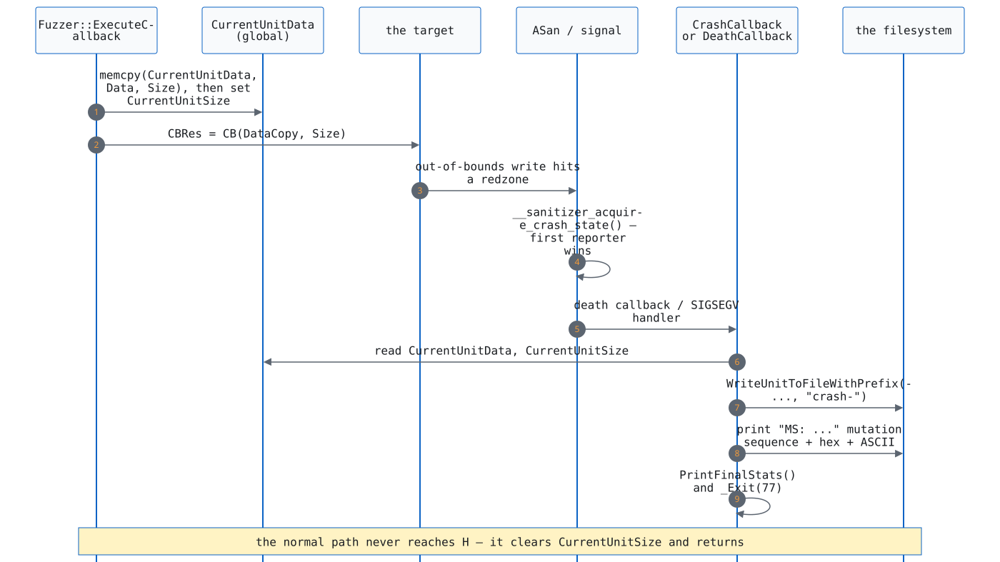
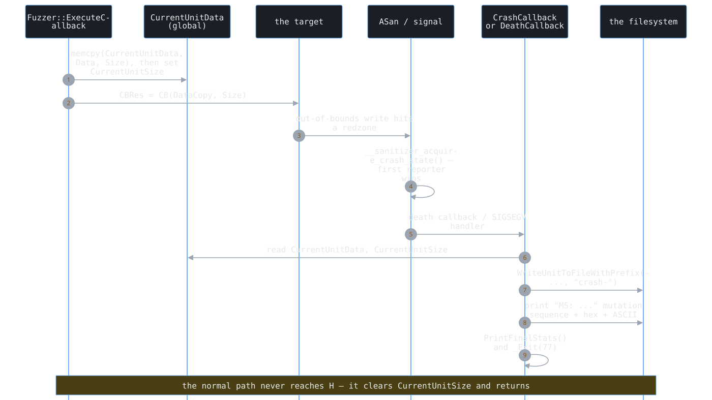
Two details in that diagram repay attention.
__sanitizer_acquire_crash_state() is a one-shot claim shared with the sanitizer runtime, so
ASan and libFuzzer cannot both report the same fault — whichever arrives first wins and the other
returns silently. And both handlers end in _Exit(), not exit(): no
atexit handlers, no destructors, no flushing anything the corrupted program might own.
dmesg and returns, the ioctl succeeds, CurrentUnitSize is dutifully cleared,
and the input that found your bug is mutated away. That is the whole problem §7.3 solves, and it is why
the three bridges it offers map exactly onto this table: panic-on-report removes the process
instead of signalling it (so you lose the artifact and must log the input yourself, §6.14);
kmsg scraping has the harness call abort(), entering by door 1; the
KASAN→SIGSEGV patch enters by door 1 on the right task, which is why the write-up
in §2.4 calls it the precise one.-minimize_crash=1 runs a different loop over the same machinery
(MinimizeCrashLoop, :923): it re-executes the crashing input under repeated
mutation and keeps any smaller input that still crashes, writing each improvement through the
same DumpCurrentUnit path. Since 2026 it passes the current size to
Mutate correctly
(c7d4921b39bf) — a
reminder that this corner is still being fixed.
-fork and -mergeEverything so far ends with _Exit(). A campaign that must survive hundreds of findings
therefore needs something outside the process, and libFuzzer has exactly one answer:
-fork=N.
In fork mode the top-level process never calls your target. It builds command lines, spawns children, and merges what they bring back:
List 4.9 compiler-rt/lib/fuzzer/FuzzerFork.cpp:127 — CreateNewJob (abridged)Command Cmd(Args);
Cmd.removeFlag("fork"); // the child must not fork again
Cmd.removeFlag("runs");
Cmd.addFlag("reload", "0"); // working in an isolated dir
Cmd.addFlag("print_final_stats", "1"); // the parent parses these back
Cmd.addFlag("max_total_time", std::to_string(std::min((size_t)300, JobId)));
Cmd.addFlag("stop_file", StopFile()); // graceful shutdown channel
// hand the child a random subset of the corpus: about sqrt(N) files
if (size_t CorpusSubsetSize = std::min(Files.size(), (size_t)sqrt(Files.size() + 2))) {
for (size_t i = 0; i < CorpusSubsetSize; i++)
Seeds += Files[Rand->SkewTowardsLast(Files.size())] + ",";
}Three design choices are visible here. A child gets √N seeds, not the whole corpus, drawn
skewed toward recent finds — small enough to start fast, biased toward the frontier. Job n
runs for min(300, n) seconds, so early jobs are seconds long and later ones minutes: the
campaign warms up. And -reload=0 plus a private corpus directory means children never see
each other; all sharing happens through the parent's merge.
When a child exits — for any reason — the parent classifies it by exit code and merges its corpus:
List 4.10 compiler-rt/lib/fuzzer/FuzzerFork.cpp:455 — the accountingif (Options.IgnoreTimeouts && ExitCode == Options.TimeoutExitCode) Env.NumTimeouts++;
else if (Options.IgnoreOOMs && ExitCode == Options.OOMExitCode) Env.NumOOMs++;
else if (ExitCode != 0) {
Env.NumCrashes++;
if (Options.IgnoreCrashes) { /* echo the ERROR: lines from the child log, continue */ }
else { /* print the reproducer path and stop the campaign */ }
}This is where the §9.5 flags come from: -ignore_ooms and
-ignore_timeouts default to 1, -ignore_crashes to 0. So out of
the box a fork-mode campaign shrugs off resource exhaustion and stops on the first real bug; add
-ignore_crashes=1 and it collects them all, printing each child's
ERROR: lines as it goes.
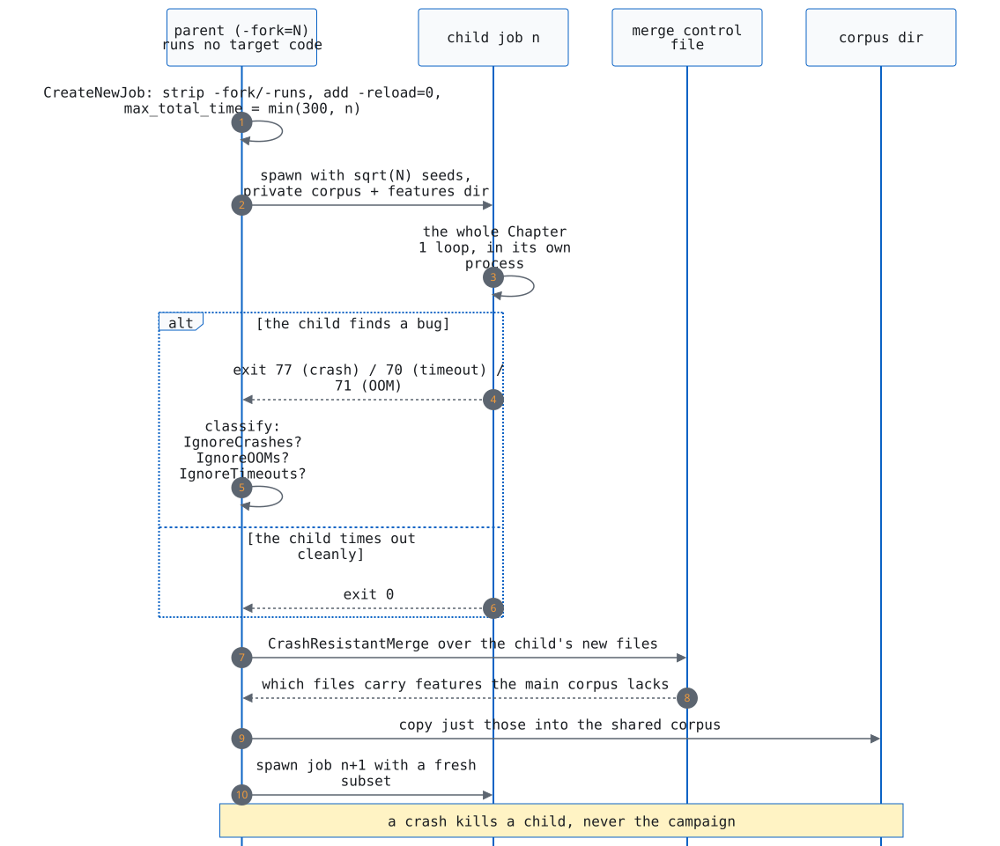
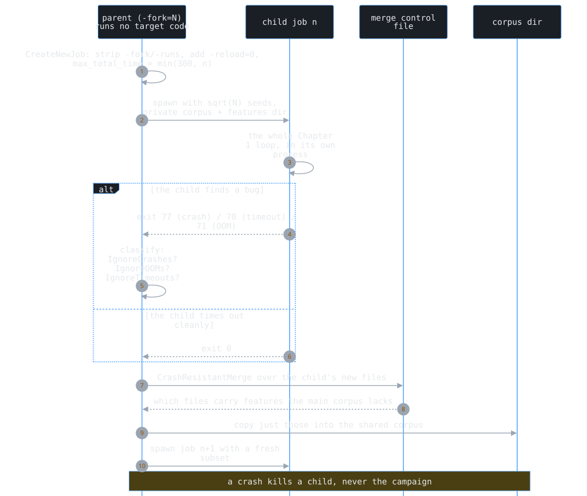
That CrashResistantMerge step is not a detail — it is how fork mode tolerates children
that die mid-merge, and it is the same code behind plain -merge=1. The algorithm is
documented in the header, and the control file is the entire trick:
// The outer process collects the set of files and writes their names
// into a temporary "control" file, then repeatedly launches the inner
// process until all inputs are processed.
// The outer process does not actually execute the target code.
//
// The inner process reads the control file and sees a) list of all the inputs
// and b) the last processed input. Then it starts processing the inputs one
// by one. Before processing every input it writes one line to control file:
// STARTED INPUT_ID INPUT_SIZE
// After processing an input it writes the following lines:
// FT INPUT_ID Feature1 Feature2 Feature3 ...
// COV INPUT_ID Coverage1 Coverage2 Coverage3 ...
// If a crash happens while processing an input the last line in the control
// file will be "STARTED INPUT_ID" and so the next process will know
// where to resume.
//
// It uses a single pass greedy algorithm choosing first the smallest inputs
// within the same size the inputs that have more new features.A dangling STARTED line is the crash report: whatever input it names killed the
previous attempt, so the next inner process skips past it. This is why
-merge_control_file=PATH plus SIGUSR1 gives you a resumable corpus
minimization (the recipe in the upstream docs), and why merging a corpus against a target that crashes
on half of it still terminates.
-fork=1 buys nothing there; what replaces it is the
reproducer-before-run discipline of §6.14, or moving the orchestration outside the VM entirely, which is
what syzkaller does and what §9.5 reconsiders.-use_counters=1. What feature number does CollectFeatures report?
What if the same block is hit twice? (Use §4.2's two functions; the answer is arithmetic, not
opinion.)-print_features=1 or a breakpoint on
HandleFeature), then add one trivial instrumented function and look again. Explain
what a reused corpus would now believe.-reduce_inputs=1 and
-print_corpus_stats=1. Find an input whose NumFeatures reaches zero
and correlate it with the REDUCE line that stole its last feature.-entropic=0 and explain, from
§4.3's fallback branch, why the newest corpus entry is the most likely to be mutated — and what
that implies for a long-running campaign with a huge corpus.-exact_artifact_path=/dev/null
and then with a read-only -artifact_prefix. Which part of §4.4's chain still works,
and which output is lost? (This is the failure mode a kernel panic produces, for a different
reason.)-merge=1 -merge_control_file=./cf over a corpus that
contains one crashing input, then open ./cf. Identify the dangling
STARTED line and predict what the next inner process does.Chapter 4 sources, verified at this checkout:
FuzzerTracePC.h (CounterToFeature:213, CollectFeatures:239, stack-depth step
function:272);
FuzzerValueBitMap.h:21;
FuzzerCorpus.h (kFeatureSetSize:157, UpdateEnergy:75, ChooseUnitToMutate:303,
AddRareFeature:365, AddFeature:419, UpdateFeatureFrequency:448, UpdateCorpusDistribution:496);
FuzzerLoop.cpp (HandleMalloc:125, death/malloc hooks:142-148, DumpCurrentUnit:174,
DeathCallback:189, CrashCallback:226, ExitCallback:241, AlarmCallback:278, RssLimitCallback:311,
CurrentUnitData copy:612, TryDetectingAMemoryLeak:683, MinimizeCrashLoop:923);
FuzzerUtilPosix.cpp:117;
FuzzerFork.cpp (CreateNewJob:127, RunOneMergeJob:216, exit-code accounting:455);
FuzzerMerge.h:15;
FuzzerFlags.def (error_exitcode 77, timeout_exitcode 70, ignore_* defaults,
entropic_* defaults); FuzzerOptions.h:24 (OOMExitCode 71).
libFuzzer keeps whatever input reveals a new coverage feature and mutates it; the
compiler's SanitizerCoverage pass is what makes features observable; and the
__libfuzzer_extra_counters section is the escape hatch that lets code the compiler
never touched — a rewritten binary, or a Linux kernel — pour its own coverage into the
same loop. Around that loop sit the four subsystems of Chapter 4: a feature is a number on a
shared number line (§4.2), a corpus is a map from each feature to its smallest owner
(§4.3), a bug report is a global plus a signal handler (§4.4), and a campaign that
survives its own findings is a parent process merging disposable children (§4.5). Every
practical step in Part 2 is an application of exactly this.
LLVMFuzzerTestOneInput returns early for half of all inputs. Does
libFuzzer still make progress on the rest — and what breaks if the early-return path
leaves a global half-initialised?
return survives
into the next input, so a later run can crash for reasons that have nothing to do with its
own bytes — a non-reproducible "bug." The contract (§1.5) is: leave no persistent
state across runs.if (memcmp(data, "MAGIC", 5) == 0). Coverage alone
never rewards getting 3 of 5 bytes right, yet libFuzzer cracks it in seconds. How —
and which callback feeds which structure to make that possible?
memcmp
interceptor / __sanitizer_cov_trace_cmp* records the two operands into the
TORC (table of recent compares). Mutate_AddWordFromTORC then splices the
wanted operand "MAGIC" directly into the input, so the engine never needs
partial-match coverage credit — it copies the answer in wholesale (§3.4).__libfuzzer_extra_counters, a section CollectFeatures reads
exactly like compiler-emitted counters. The engine cannot tell donated coverage from its
own (§2.2, and Chapter 6).Now the theory earns its keep, starting with the laboratory LLVM already ships.
Chapter 5 reads compiler-rt/test/fuzzer/ — 113 example targets, 144
end-to-end tests and 59 unit tests — as a graded set of experiments with the answers checked
in, and climbs its four-rung ladder from automatic coverage to coverage marshalled in from another
process. That last rung is the kernel harness minus the kernel, which is where
Chapter 6 picks up: the integration and a complete, verified
hands-on lab under virtme-ng: a zero-copy driver with a planted bug, a KCOV+libFuzzer harness, and
the crash — in both C and Rust, local and remote coverage. Chapter 7 installs the
bug oracles (KASAN and its siblings) that turn a silent corruption into an observable crash.
Chapter 8 points at the real, reviewable gaps where you can contribute upstream on both
the LLVM and the kernel side. Chapter 9 is a further capstone: it collapses the
hand-rolled harness of Chapter 6 into a small reusable layer, and shows that AFL's famous
conveniences are policies you can rebuild on libFuzzer's own primitives — a custom fuzzer in a
few dozen lines.
Before building a kernel, build nothing. LLVM already ships a
laboratory for every mechanism in Part 1 — 113 example fuzz targets, 144 end-to-end tests and 59
unit tests in compiler-rt/test/fuzzer/ and
compiler-rt/lib/fuzzer/tests/ — and each one is a minimal, executable proof of exactly
one engine behaviour. This chapter reads that suite as what it is: a graded set of experiments, with
the answers checked in. Learn to run and modify it and you can verify every claim in Chapters 1–4 on
your own machine in minutes, which is also the cheapest possible rehearsal for the kernel harness of
Chapter 6.
After this chapter you will be able to:
lit failure.%cpp_compiler, %run, not and
FileCheck each contribute to a four-line test.Corpus.Distribution and Merger.Parse are the two most interesting.CounterTest.cpp to a KCOV harness.Three kinds of artifact live under compiler-rt, and conflating them is the usual source
of confusion:
| Kind | Where | Count | What it is |
|---|---|---|---|
| Example targets | test/fuzzer/*.cpp | 113 | Real fuzz targets — each a LLVMFuzzerTestOneInput containing one deliberately
shaped puzzle, bug, or API use. These are the specimens. |
| End-to-end tests | test/fuzzer/*.test | 144 | lit scripts: compile a specimen, run it with chosen flags, and assert on its
output with FileCheck. These are the experiments. |
| Unit tests | lib/fuzzer/tests/ | 42 + 17 | GoogleTest cases linked against the engine's own objects
(FuzzerUnittest.cpp, FuzzedDataProviderUnittest.cpp) — they call
internal functions directly, with no fuzzing at all. |
# everything (needs -DCOMPILER_RT_INCLUDE_TESTS=ON at configure time)
$ ninja check-fuzzer
# one test, verbosely — the fastest loop while you are learning
$ ./bin/llvm-lit -v <build>/test/fuzzer/simple.test
# a slice of the suite by name
$ ./bin/llvm-lit -v --filter 'value-profile' <build>/test/fuzzer/
# keep the compiled specimen and the temp files to poke at by hand
$ ./bin/llvm-lit -v --no-execute <build>/test/fuzzer/simple.test # just print the commandsThe exact path to the configured test directory depends on your build layout (a runtimes build puts
it under runtimes/runtimes-bins/); ninja check-fuzzer always knows it, so the
reliable trick is to run that once with -v and copy the path out of the log. The
dependency list in test/fuzzer/CMakeLists.txt explains what must be built first: the
fuzzer runtime plus asan, ubsan, msan and
dfsan when the platform has them — which is why a subset build cannot run the whole
suite.
Here is a complete end-to-end test. It is representative of most of the 144:
List 5.2 compiler-rt/test/fuzzer/simple.test — the entire fileCHECK: BINGO
RUN: %cpp_compiler %S/SimpleTest.cpp -o %t-SimpleTest
RUN: not %run %t-SimpleTest 2>&1 | FileCheck %s
# only_ascii mode. Will perform some minimal self-validation.
RUN: not %run %t-SimpleTest -only_ascii=1 2>&1Every token in it is load-bearing:
| Token | Expands to / means | Defined in |
|---|---|---|
RUN: | a shell command lit must execute; the test fails if any
RUN line exits non-zero | lit's ShTest format |
%cpp_compiler |
clang <target cflags> --driver-mode=g++ -O2 -gline-tables-only
-fsanitize=address,fuzzer -I<libfuzzer_src> |
lit.cfg.py:91 — generate_compiler_cmd() |
%S, %t, %s |
source dir, a unique temp path for this test, the test file itself | lit built-ins |
not | invert the exit status — the fuzzer is expected to die, so a zero exit is the failure | LLVM's not utility |
%run | usually empty; an emulator prefix when cross-testing, and
noaslr on NetBSD | test/lit.common.cfg.py,
lit.cfg.py:140 |
2>&1 | FileCheck %s |
match the engine's stderr against the CHECK: lines in this file |
LLVM's FileCheck |
CHECK:, --check-prefix=X |
the assertions; a test can carry several independent prefixes (see fork.test,
which uses BINGO, TIMEOUT, OOM and CRASH) |
FileCheck |
UNSUPPORTED: / REQUIRES: |
platform gating against the features lit.cfg.py registered:
linux, darwin, windows, lsan,
msan, the target arch |
lit.cfg.py:16-50 |
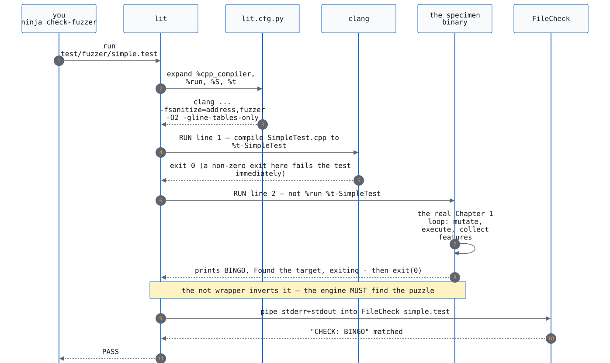
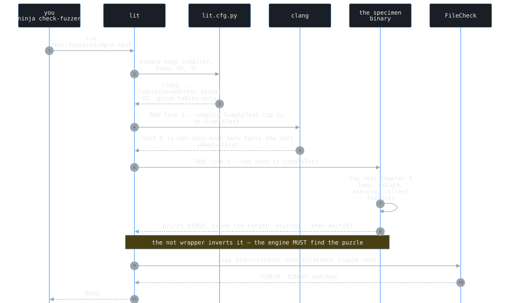
-O2 here but -O0 in our lab. The suite compiles
specimens at -O2 (lit.cfg.py), and its puzzles are still solved — because
they are written so the guards cannot be merged away, usually by storing to a volatile-ish global
Sink in each branch. That is exactly the trick §6.7's warm-up lacked when it collapsed to
"1 inline 8-bit counter" at -O1. If you take one habit from this suite, take that one:
give every branch a side effect the optimiser must keep, and your coverage survives
optimisation.The 113 targets are not a random pile. Grouped by the engine mechanism each one isolates, they map almost one-to-one onto Part 1 — which makes them the fastest way to see any claim in this book fail or hold:
A dozen of them are worth knowing by name, because each answers a question this book raises:
| Specimen · test | The question it settles | Section |
|---|---|---|
CounterTest.cpp · counters.test |
Does a hit count really create new features, or only a new edge? Run it with
-use_counters=0 and watch it stop solving. | §4.2 |
TableLookupTest.cpp · extra-counters.test |
Does a hand-filled byte array count as coverage? The test asserts both
INFO: N Extra Counters and >= 4000 new_units_added. |
§2.2, §6.2 |
OutOfProcessFuzzTarget.cpp + SanCovDump.cpp ·
out-of-process-fuzz.test |
Can coverage come from another process? This is the KCOV data path with a file in place of the ring buffer. | §6.3 |
DeepRecursionTest.cpp · deep-recursion.test |
Does the stack-depth feature do anything? Note REQUIRES: linux — the same
platform gate we found in the clang driver. | §4.2 |
GcSectionsTest.cpp · dead-stripping.test |
What happens when the linker removes instrumented code? The assertion is
CHECK-NOT: ERROR: The size of coverage PC tables does not match — i.e. the
counter/PC-table consistency check of §3.3 must not fire. | §3.3, §6.2 |
NotinstrumentedTest.cpp · not-instrumented.test |
What does the engine do with zero coverage? (Useful when your KCOV plumbing is silently broken.) | §6.5 |
Reject.cpp · reject.test |
Does returning -1 actually keep an input out of the corpus? | §1.6 |
OverwriteInputTest.cpp · overwrite-input.test |
Is "don't write to the input buffer" enforced? Yes —
CrashOnOverwrittenData(). | §1.5 |
AcquireCrashStateTest.cpp · acquire-crash-state.test |
Who wins when the target and the sanitizer both want to report? The one-shot claim of §4.4. | §4.4 |
ShallowOOMDeepCrash.cpp · fork.test |
Does fork mode keep fuzzing past resource exhaustion and still find the deep bug? The test even re-runs it three times to deflake. | §4.5 |
EquivalenceATest/BTest · equivalence.test |
How do you fuzz two implementations against each other? The pattern behind
libc/fuzzing/**'s differential targets (§1.2). | §1.2 |
OnlySomeBytesTest.cpp · only-some-bytes.test,
dataflow.test |
Does the DFSan data-flow trace really narrow mutation to the bytes that matter? | §3.7 |
CounterTest and NotinstrumentedTest
tell you whether counters arrive at all. Stuck on a magic value? SimpleCmpTest with and
without -use_value_profile=1 shows whether TORC is alive in your build. Artifacts not
written? NullDerefTest proves the §4.4 chain end to end in two seconds. Each check costs
one llvm-lit invocation and removes a whole subsystem from suspicion.The lit tests are black-box: they can only assert on what the engine prints. Some invariants have no
printable symptom, and those live in FuzzerUnittest.cpp — 42 GoogleTest cases that
#include the engine's own headers and call its internals directly:
| Unit test | What it pins down | Why a fuzzing run could not |
|---|---|---|
FuzzerMutate.* (18 cases: EraseBytes1/2,
ChangeBinaryInteger1/2, CopyPartNoInsertAtMaxSize, …) |
Each mutator's exact behaviour at the boundaries — empty input, Size ==
MaxSize, one byte. |
A run would just look slower; a mutator that silently returns 0 at the boundary is invisible from outside (§3.7). |
Corpus.Distribution |
That ChooseUnitIdxToMutate actually draws across the whole corpus with the expected
spread. |
This is the §4.3 scheduler. Its output is a probability distribution — observable only by sampling it thousands of times, which is what the test does. |
Corpus.Replace |
That replacing an input preserves feature ownership bookkeeping. | The REDUCE/eviction logic of §4.3 has no log line for the intermediate state. |
Merger.Parse, Merger.Merge, Merger.SetCoverMerge |
That a truncated control file — the signature of a crash mid-merge — parses and resumes correctly. | You would have to crash a real merge at precisely the wrong moment. The unit test just writes the broken file (§4.5). |
Fuzzer.ForEachNonZeroByte |
That the word-at-a-time counter scan finds every non-zero byte, at every alignment. | A missed byte is a lost feature — statistically invisible, and the single most dangerous bug possible in §4.2's encoder. |
DFT.BlockCoverage, DFT.FunctionWeights |
The data-flow-trace parser and the focus-function weighting. | Requires DFSan output that is expensive to produce; the test feeds canned traces (§3.7). |
FuzzerCommand.* (4 cases) |
Flag add/remove/override on the command lines fork mode builds for its children. | A mangled child command line shows up as "fork mode is slow", not as an error (§4.5). |
FuzzerDictionary.ParseDictionaryFile, FuzzerUtil.Base64,
Fuzzer.Hash |
Parsing and formatting details — AFL dictionary syntax, the base64 in crash reports, the SHA-1 used for artifact names. | Pure functions; testing them through a fuzzer would be absurd. |
Plus FuzzedDataProviderUnittest.cpp's 17 cases, which are the authoritative answer to
"which end of the buffer does ConsumeIntegral read from?" — the front/back split of
§3.7, asserted rather than described.
FuzzerMutate.cpp, FuzzerCorpus.h or FuzzerMerge.cpp, there is
almost certainly an existing TEST(...) next to it to extend — which is a far easier first
patch than inventing a new lit test.Everything above becomes a lab the moment you start editing it. Three exercises in increasing order of ambition, then the ladder that leads out of user space.
Pick a claim, find the specimen, change one flag. Three that are worth doing because the result is counter-intuitive:
List 5.3 Lab A — three one-flag experiments, each falsifying a claim from Part 1# 1. "hit counts are coverage" (§4.2) — the same binary, two flag values
$ %cpp_compiler CounterTest.cpp -o /tmp/ct
$ /tmp/ct -runs=100000 # solves it: buckets are features
$ /tmp/ct -runs=100000 -use_counters=0 # much harder: one feature per edge
# 2. "the TORC solves magic values, value profile only helps" (§3.4)
$ %cpp_compiler SimpleCmpTest.cpp -o /tmp/sc
$ /tmp/sc -runs=3000000 # cracks it via TORC alone
$ /tmp/sc -runs=3000000 -use_cmp=0 # TORC off: now watch it stall
# 3. "extra counters are indistinguishable from compiler counters" (§2.2)
$ %cpp_compiler TableLookupTest.cpp -o /tmp/tl
$ /tmp/tl -print_final_stats=1 2>&1 | grep -E 'Extra Counters|new_units_added'(Substitute your real clang invocation for %cpp_compiler — or copy the expanded command
out of llvm-lit -v output, which prints it.)
The house style is two small files. A specimen that is hard for the reason you choose:
List 5.4MyGuardTest.cpp — a specimen in the house style, four guards deep
// MyGuardTest.cpp — four guards, each with a side effect the optimiser must keep
#include <cstdint>
#include <cstddef>
#include <cstdio>
static volatile int Sink;
extern "C" int LLVMFuzzerTestOneInput(const uint8_t *Data, size_t Size) {
if (Size < 4) return 0;
if (Data[0] != 'L') return 0; Sink = 1; // each guard its own block…
if (Data[1] != 'L') return 0; Sink = 2; // …and its own counter
if (Data[2] != 'V') return 0; Sink = 3;
if (Data[3] != 'M') return 0; Sink = 4;
fprintf(stderr, "BINGO\n");
abort(); // reach the engine as a signal (§4.4)
}…and a test that states the expected observation:
List 5.5my-guard.test — the matching lit test, three lines of substance
# my-guard.test
CHECK: BINGO
RUN: %cpp_compiler %S/MyGuardTest.cpp -o %t-MyGuardTest
RUN: not %run %t-MyGuardTest -runs=5000000 2>&1 | FileCheck %sDrop both in compiler-rt/test/fuzzer/ and llvm-lit picks the test up with
no registration — config.suffixes = [".test"] in lit.cfg.py is the whole
discovery mechanism. If it passes, you have reproduced the four-guard funnel of §6.7 in user space; if
you then rebuild the specimen with the guards collapsed into one expression, you have reproduced the
optimisation gotcha too.
Chapter 6 opens with a ladder from "fully automatic" coverage to "coverage from another universe". Every rung of it is a file in this directory, so the ladder is climbable here, before a kernel is involved:
The decisive exercise is rung 3. Build OutOfProcessFuzzTarget, point
SANCOV_OUT at a file, and replace the "other side" with a shell script that fabricates
coverage bytes. Once you have watched libFuzzer's corpus grow from numbers you wrote into a
file, the kernel case in Chapter 6 stops being exotic: KCOV is just a faster file.
simple.test on purpose (change CHECK: BINGO
to CHECK: BANGO) and run it. Identify, in the lit output, the compile command, the
run command, and the FileCheck diagnostic — the three things you will actually read when a real
test fails.grep -l 'UNSUPPORTED\|REQUIRES' *.test | wc -l,
then group the gates by feature. What does the distribution tell you about which platform
libFuzzer is really developed on?dead-stripping.test, then build
GcSectionsTest.cpp on Linux with -ffunction-sections
-Wl,--gc-sections and check nm for the unused function and the startup
banner for the PC-table mismatch error. Relate the result to the §6.5 pitfall checklist.CounterToFeature's bucket
boundaries in FuzzerTracePC.h, rebuild FuzzerUnitTests, and see which
tests notice. (Answer first, then check: how many of the 42 depend on the feature encoding?)out-of-process-fuzz.test with llvm-lit -v,
copy the commands, and re-run them by hand with your own producer script in place of the
instrumented child. Write down which part of the §6.4 recipe you have just implemented.Chapter 5 sources, verified at this checkout: compiler-rt/test/fuzzer/
(265 entries: 113 *.cpp, 144 *.test, lit.cfg.py 141 lines, the
unit/ site config); compiler-rt/test/fuzzer/CMakeLists.txt (the
check-fuzzer suite, LIBFUZZER_TEST_DEPS, FuzzerUnitTests and
FuzzedDataProviderUnitTests); compiler-rt/lib/fuzzer/tests/FuzzerUnittest.cpp
(1430 lines, 42 TEST() cases) and FuzzedDataProviderUnittest.cpp (17);
individual tests quoted verbatim: simple.test, extra-counters.test,
fork.test, deep-recursion.test, dead-stripping.test. Counts are
from this tree and will drift as the suite grows.
This is the practical heart of the book: taking everything from Chapters 1–5 and actually fuzzing a Linux kernel driver. It runs in three movements — Movement I (§6.1–4.3) is the integration: how kernel coverage is carried back to libFuzzer, and why it is "a little different mechanism" from userspace. Movement II (§6.6–4.12) is a complete, verified hands-on lab under virtme-ng — a buggy driver, a harness, and the crash. Movement III (§6.16) shows how to reproduce the whole thing natively as a Debian kernel package, off the vng scaffolding.
Movement I begins here. If you write a kernel driver and want to fuzz it with libFuzzer, what do you build, and why is it not what you would do for a userspace library? The short answer: ordinary libFuzzer is automatic, and KCOV libFuzzer is bring-your-own-coverage (BYOC).
TableLookupTest.cpp and
OutOfProcessFuzzTarget.cpp as copy-paste templates.In the userspace case (all of Chapter 1), the coverage plumbing is invisible. You never
declare a counter array, never copy anything, never think about it — because the fuzzer, the
instrumentation, and the target all live in one address space. The compiler emits inline
counter writes directly into memory the engine already owns, and CollectFeatures
reads them in place. Here is that baseline, the whole target, no coverage code anywhere:
extern "C" int LLVMFuzzerTestOneInput(const uint8_t *Data, size_t Size) {
int Num = 0;
for (size_t i = 0; i < Size; i++)
if (Data[i] == 'A' + i) Num++; // the compiler instruments this branch for you
if (Num >= 4) { std::cerr << "BINGO!\n"; exit(1); }
return 0;
}A kernel driver breaks that assumption completely. The code you want to cover runs in
ring 0, in a different address space, reached only across a system-call boundary. The
compiler did instrument it (that is what CONFIG_KCOV is), but those counter
writes land in kernel memory, not in your fuzzer. Nothing automatically bridges the gap.
So the model inverts: you become responsible for collecting the signal on the far side and
carrying it back. That carrying-back is what __libfuzzer_extra_counters is for.
LLVM ships four points on a spectrum from "fully automatic" to "coverage arrives from another universe." Reading them in order is the tutorial — each adds exactly one step toward the kernel case:
| In-tree example | Where coverage comes from | What you write | Distance to KCOV |
|---|---|---|---|
CounterTest.cpp | compiler, same process | only the target | furthest — automatic |
TableLookupTest.cpp | your own code, same process | target + a counters array you bump by hand | learn the array rules (§6.2) |
OutOfProcessFuzzTarget.cpp + SanCovDump.cpp | a separate process, via a file | target + marshalling code that reads the child's coverage back | the exact shape of KCOV (§6.3) |
| your KCOV harness | the kernel, via an mmap'd ring buffer | target + the KCOV loop (§6.4) | you are here |
Before the mechanics of moving coverage into libFuzzer, it helps to know exactly what is on the
kernel side of the bridge. KCOV is the kernel's coverage collector, and — this is the neat
part — it is built on the same SanitizerCoverage instrumentation the compiler inserts for
userspace libFuzzer (Chapter 1 §1.9). Turn on CONFIG_KCOV and the kernel is compiled with
-fsanitize-coverage=trace-pc; the callbacks are implemented not by libFuzzer's TracePC
(Chapter 3 §3.3) but by the kernel itself, which writes into a per-task ring buffer that
userspace can mmap. So "kernel coverage" is not a foreign concept — it is the coverage
you already understand, produced on the far side of a syscall and handed back through a shared page.
CONFIG_KCOV,
exposed at /sys/kernel/debug/kcov) that records the program counters of the basic blocks
executed by the calling thread while enabled, into an mmap'd buffer shared with
userspace. "Per-task" is the load-bearing word: it captures the thread that turned it on and nothing
else — which is exactly why work that happens on a kworker needs the remote variant (§6.4c).Wiring up KCOV is four ioctls, done once at startup. This is the kernel-side half of the "bring-your-own-coverage" model — the code you write that has no counterpart in an automatic userspace fuzzer:
| Step | Call | What it does |
|---|---|---|
| 1 | open("/sys/kernel/debug/kcov", O_RDWR) | get a handle to the facility (needs debugfs mounted) |
| 2 | ioctl(fd, KCOV_INIT_TRACE, size) | ask for a buffer of size unsigned longs. This is the only init ioctl — include/uapi/linux/kcov.h defines KCOV_INIT_TRACE, KCOV_ENABLE, KCOV_DISABLE and KCOV_REMOTE_ENABLE, and nothing else. Write-ups that show a KCOV_INIT_TRACE64 are quoting a symbol that has never existed in the kernel. |
| 3 | mmap(NULL, size*sizeof(long), …, fd, 0) | map that buffer — the shared page KCOV writes PCs into |
| 4 | ioctl(fd, KCOV_ENABLE, KCOV_TRACE_PC) | start recording coverage for this thread |
__attribute__((section("__libfuzzer_extra_counters")))
unsigned char libfuzzer_coverage[32 << 10]; // the seam (§2.2)
unsigned long *kcov_data; int kcov;
extern "C" int LLVMFuzzerInitialize(int *argc, char ***argv) {
kcov = open("/sys/kernel/debug/kcov", O_RDWR);
ioctl(kcov, KCOV_INIT_TRACE, KCOV_COVER_SIZE);
kcov_data = mmap(NULL, KCOV_COVER_SIZE*sizeof(long), PROT_READ|PROT_WRITE, MAP_SHARED, kcov, 0);
ioctl(kcov, KCOV_ENABLE, KCOV_TRACE_PC); // record this thread's coverage
return 0;
}The mapped buffer is dead simple: word 0 is a counter, and words 1..N are the
recorded PCs. Every run you zero the counter, exercise the kernel, then read back however many
PCs it recorded and fold them into the extra-counters array (§6.2). This is the same three-step
"reset → run → collect" you saw in Chapter 1 §1.5's ExecuteCallback, but you are doing the
plumbing by hand across the syscall boundary:
void kcov_start() { __atomic_store_n(&kcov_data[0], 0, __ATOMIC_RELAXED); } // reset the counter
void kcov_stop() {
unsigned long ncov = kcov_data[0]; // how many PCs were recorded
for (unsigned long i = 0; i < ncov; i++) {
unsigned long pc = kcov_data[i + 1]; // the i-th covered block PC
libfuzzer_coverage[pc % sizeof(libfuzzer_coverage)]++; // → an extra-counter feature
}
}
// per input: kcov_start(); ...drive the kernel via a syscall/ioctl... kcov_stop();pc % size? KCOV gives you absolute kernel addresses; the
extra-counters array is a fixed hash table of hit counters. Reducing the PC modulo the array size
spreads distinct blocks across the table (with occasional collisions) — the same trick the Cloudflare
AFL shim used (Chapter 2 §2.3), and the reason §6.10 exists to turn those raw PCs back into source lines.KCOV_ENABLE takes a mode. KCOV_TRACE_PC (the default, mode 0) records
block PCs, as above. KCOV_TRACE_CMP (mode 1, needs
CONFIG_KCOV_ENABLE_COMPARISONS) instead records the operands of every comparison
— the kernel's version of trace-cmp (Chapter 3 §3.3). That second mode is what lets a
kernel harness recover the magic-value-cracking superpower by replaying the operands into libFuzzer's
TORC, exactly as §6.4b does. Same facility, a different thing written into the same ring buffer.
Minimally: CONFIG_KCOV=y and CONFIG_DEBUG_FS=y (for the
/sys/kernel/debug/kcov node); add CONFIG_KCOV_ENABLE_COMPARISONS=y for the
compare mode and CONFIG_KASAN=y for the bug oracle (Chapter 7). The authoritative
reference is the kernel's own
Documentation/dev-tools/kcov.rst,
which carries a complete worked example; the ABI itself is 25 lines of
include/uapi/linux/kcov.h. Note that the kernel ships no in-tree userspace
harness — every project rolls its own, which is exactly contribution item K1 (§8.2). The recipe
above is distilled from a KCOV+libFuzzer write-up (libfuzzer-kcov.md) and
cross-checked against the lab harness in tools/harden/sample/local.c.
Everything above delivers coverage. But most kernel attack surface is a stateful API
— a sequence of syscalls or ioctls where each step depends on the last (you must open
before you write). Feeding such an API a raw byte blob gets you nowhere. This is precisely
the job for a custom mutator (Chapter 3 §3.8): the reference harness uses libprotobuf-mutator and
the DEFINE_PROTO_FUZZER macro to mutate a typed message describing an API
sequence, then serialises it into calls — structure-aware fuzzing, driven by KCOV coverage. Chapter 2
§2.4 walks that case study; the takeaway for here is that kernel-coverage integration and
structure-aware input generation are two halves of the same harness.
TableLookupTest.cpp)Before wiring the kernel in, learn the array in isolation. This test is the canonical, authoritative example of the extra-counters contract, and its comments are the spec:
List 6.4 compiler-rt/test/fuzzer/TableLookupTest.cpp — the in-tree extra-counters example, with the rules in its own commentconst size_t N = 1 << 12;
// Define an array of counters that will be understood by libFuzzer
// as extra coverage signal. The array must be:
// * uint8_t
// * in the section named __libfuzzer_extra_counters.
// Use either `Counters[Idx] = 1` or `Counters[Idx]++`
// depending on whether multiple occurrences of 'Idx' matter.
#if defined(__linux__) || defined(__FreeBSD__)
__attribute__((section("__libfuzzer_extra_counters")))
#endif
#ifdef _WIN32
# pragma section(".data$__libfuzzer_extra_counters")
__declspec(allocate(".data$__libfuzzer_extra_counters"))
#endif
static uint8_t Counters[N];
extern "C" int LLVMFuzzerTestOneInput(const uint8_t *Data, size_t Size) {
if (Size != 4) return 0;
uint32_t Idx; memcpy(&Idx, Data, 4); Idx %= N;
assert(Counters[Idx] == 0); // libFuzzer resets these between runs.
Counters[Idx]++;
...
}Four rules a kernel dev must internalize, each visible above:
uint8_t, section
__libfuzzer_extra_counters (or the .data$… Mach-O/COFF spelling).
That name is the handshake with ExtraCountersBegin()/End() from §2.2; get it
wrong and libFuzzer silently sees zero extra counters.=1 vs ++ is your block-vs-edge-count choice. Setting to 1
records "this index was hit"; incrementing records "how many times," which libFuzzer buckets
(1, 2, 3, 4–7, 8–15, …) into distinct features. For a driver, ++ lets loop
trip-counts become new coverage.assert(Counters[Idx]==0)
proves it — that is ClearExtraCounters() inside ResetMaps(), §3.3).
Therefore you must re-fill it every single run — never accumulate across inputs.extra-counters.test checks for the banner INFO: N Extra Counters
(emitted by PrintModuleInfo, §3.3) and that thousands of new_units_added
appear. When you bring up your KCOV harness, that Extra Counters line at startup is
your first confirmation the section is wired correctly — if it says 0 or is absent,
your section(...) attribute or your build's dead-strip settings are wrong, and no
kernel coverage will ever register.OutOfProcessFuzzTarget)Here is the key realization for a kernel developer: LLVM already contains a worked example of "coverage produced outside the fuzzer's address space, marshalled back through extra counters." It is not called KCOV — it is out-of-process fuzzing — but the data path is structurally identical, and it is the template you should copy.
List 6.5 compiler-rt/test/fuzzer/OutOfProcessFuzzTarget.cpp — the file's own summary// The target binary (which could be a shell script, or anything),
// consumes one file as an input and produces the file with coverage
// counters as the output (output path is passed via SANCOV_OUT).
__attribute__((section("__libfuzzer_extra_counters")))
static uint8_t Counters[1 << 20]; // 1 MiB of counters
extern "C" int LLVMFuzzerTestOneInput(const uint8_t *data, size_t size) {
...
fwrite(data, 1, size, /*IN file*/); // 1. hand the input to the other side
system(Run->c_str()); // 2. run the target OUT of process
if (FILE *f = fopen(COV->c_str(), "r")) // 3. read its coverage back
fread(Counters, 1, kCountersSize, f); // 4. into the extra-counters array
return 0;
}The "other side" produces its coverage using a tiny companion that captures the compiler's
counters and dumps them to the SANCOV_OUT file on exit:
extern "C" void __sanitizer_cov_8bit_counters_init(char *Start, char *End) {
CovStart = Start; CovEnd = End; // capture the counter range (§3.3 init handler)
atexit(DumpCoverage); // on exit, fwrite [Start,End) to SANCOV_OUT
}Now map each piece onto the kernel world — the correspondence is one-to-one:
| Out-of-process rig (in-tree) | KCOV kernel equivalent |
|---|---|
| the separate target process | the kernel, entered via a syscall/ioctl into your driver |
SanCovDump.cpp capturing counters + writing a file | the kernel's own KCOV, writing PCs into a shared ring buffer |
SANCOV_OUT file as the transport | the mmap'd /sys/kernel/debug/kcov buffer as the transport |
system(Run) then fread the file | ioctl(KCOV_ENABLE) → exercise driver → ioctl(KCOV_DISABLE) → read the buffer |
fread(Counters, …) — bytes map 1:1 | a loop hashing each PC into Counters[pc % N]++ (§6.4) |
fork(), §2.5), and — as
§6.4 explains — the extra-counters channel only carries counters, not the comparison
operands that power trace-cmp. This is the concrete meaning of "a little different
mechanism": same engine, thinner signal, higher per-run cost.Putting §6.2 and §6.3 together, here is the full shape of a KCOV libFuzzer harness. It is the out-of-process rig with the file transport replaced by the KCOV ring buffer. Set up once in the startup hook; marshal every run:
List 6.7 the KCOV harness skeleton (synthesised from libfuzzer-kcov.md and the in-tree rig)__attribute__((section("__libfuzzer_extra_counters")))
static uint8_t Counters[64 << 10]; // §6.2 rules apply
static unsigned long *KcovArea; static int KcovFd;
extern "C" int LLVMFuzzerInitialize(int *argc, char ***argv) { // §1.3 startup hook — once
KcovFd = open("/sys/kernel/debug/kcov", O_RDWR);
ioctl(KcovFd, KCOV_INIT_TRACE, KCOV_COVER_SIZE); // _IOR('c', 1, unsigned long)
KcovArea = mmap(NULL, KCOV_COVER_SIZE * sizeof(unsigned long),
PROT_READ|PROT_WRITE, MAP_SHARED, KcovFd, 0);
return 0;
}
extern "C" int LLVMFuzzerTestOneInput(const uint8_t *Data, size_t Size) {
__atomic_store_n(&KcovArea[0], 0, __ATOMIC_RELAXED); // reset the kernel's counter
ioctl(KcovFd, KCOV_ENABLE, KCOV_TRACE_PC); // start recording THIS task
drive_my_driver(Data, Size); // ← syscall/ioctl into your code
ioctl(KcovFd, KCOV_DISABLE, 0); // stop recording
unsigned long n = __atomic_load_n(&KcovArea[0], __ATOMIC_RELAXED);
for (unsigned long i = 1; i <= n; i++) // marshal PCs → extra counters
Counters[KcovArea[i] % sizeof(Counters)]++; // (the fread() of §6.3, by hand)
return 0;
}Four things a driver author must get right, beyond the §6.2 array rules:
The raw ring buffer is a list of block PCs — that is block coverage (§2.6). To
approximate edge coverage, apply AFL's prev_location trick from §2.3:
hash consecutive pairs of PCs instead of single PCs.
prev_location trick
uint32_t prev = 0;
for (unsigned long i = 1; i <= n; i++) {
uint32_t cur = hash(KcovArea[i]);
Counters[(cur ^ prev) % sizeof(Counters)]++; // edge = (prev,cur) pair
prev = cur >> 1; // asymmetry so A→B ≠ B→A
}This is the deepest "different mechanism" point. In userspace, trace-cmp
(§3.3–§3.4) automatically fills TORC and the value profile, so magic-value checks fall for free.
The extra-counters channel cannot carry operands — it is a byte array, and
CollectFeatures only ever reads it as counters. So a naive KCOV harness loses the
compare-solving superpower even if you enable KCOV_ENABLE_COMPARISONS.
The recovery is elegant and worth knowing: the trace-cmp callbacks in
FuzzerTracePC.cpp are exported symbols (ATTRIBUTE_INTERFACE,
§3.3). KCOV's comparison mode hands you (type, arg1, arg2, pc) tuples; you can replay
each one into libFuzzer's own TORC by calling the callback yourself, during the run:
// with KCOV in KCOV_TRACE_CMP mode, for each recorded (arg1, arg2):
extern "C" void __sanitizer_cov_trace_cmp8(uint64_t, uint64_t);
...
__sanitizer_cov_trace_cmp8(arg1, arg2); // feeds TORC + value profile (§3.3) as if in-processThis must happen while RunningUserCallback is true (i.e. inside
LLVMFuzzerTestOneInput), because §3.3's weak hooks are gated on it. Done right, the
mutator's Mutate_AddWordFromTORC (§3.4) will splice kernel-observed constants into
your inputs — closing the same loop for a kernel that §3.4 closed for userspace. This is
morally what syzkaller does with KCOV comparison feedback.
§1.1's rules still bind, but a kernel makes them harder: leftover descriptors, sockets, or
allocations from one run perturb the next, turning the coverage signal into noise. For stateful
drivers use the fork()-per-input pattern from §2.5 so the OS reclaims resources
between iterations.
A KASAN report in dmesg is invisible to libFuzzer (§1.5, §2.4). Either scrape
/dev/kmsg and abort the harness on a new report, or apply the §2.4 kernel patch that
turns a KASAN hit into a SIGSEGV delivered to the offending task. Without this,
libFuzzer will happily mutate away the very input that found your bug.
The one-screen summary a kernel driver developer should keep next to the keyboard:
| Aspect | Ordinary userspace libFuzzer | KCOV + libFuzzer (BYOC) |
|---|---|---|
| Coverage source | compiler, in-process | kernel CONFIG_KCOV, across a syscall |
| Who fills the counters | the CPU, automatically | your harness, every run |
| Transport | shared memory (implicit) | mmap'd KCOV ring buffer → __libfuzzer_extra_counters |
| Coverage code you write | none | the §6.4 enable/exercise/disable/marshal loop |
| Granularity out of the box | edge (critical edges split) | block; edge needs the pair-hash (§6.4a) |
| Comparison solving (TORC) | automatic via trace-cmp | lost unless you replay callbacks (§6.4b) |
| Crash detection | signal / sanitizer, automatic | you must turn a KASAN report into a signal (§6.4d) |
| State reset per run | trivial (globals) | hard; often fork() per input (§6.4c) |
| Speed | 10³–10⁶ exec/s | much slower; syscall + optional fork per input |
INFO: N Extra Counters
with N > 0. If not, your section("__libfuzzer_extra_counters")
spelling or a dead-strip pass is at fault (§6.2). Nothing else can work until this does.KcovArea[0] yourself each run (§6.4).KCOV_ENABLE_COMPARISONS and replay operands into the trace-cmp
callbacks (§6.4b) rather than hoping the counter channel carries them — it cannot.crash-* file. If a KASAN splat scrolls by in dmesg but the
fuzzer keeps going, wire up the signal path (§6.4d).crash-* file does not reproduce,
suspect cross-run kernel state; add the fork() isolation (§6.4c / §2.5).Chapter 6 sources, verified at this checkout:
compiler-rt/test/fuzzer/{CounterTest.cpp, TableLookupTest.cpp, extra-counters.test,
OutOfProcessFuzzTarget.cpp, SanCovDump.cpp};
the extra-counters section contract in compiler-rt/lib/fuzzer/FuzzerExtraCounters.cpp
and its consumption in FuzzerTracePC.h (§2.2, §3.3). The KCOV/KASAN specifics are as
reported in libfuzzer-kcov.md; the trace-cmp-replay technique follows from the
callbacks being exported ATTRIBUTE_INTERFACE symbols in
FuzzerTracePC.cpp.
Movement I explained the mechanism; this movement runs it.
It is a runnable lab that fuses the whole study into one exercise: a userspace libFuzzer target
(Chapter 1), a kernel driver whose coverage is carried back through
__libfuzzer_extra_counters (Chapter 2 §2.2, Chapter 6), both local and
remote KCOV (Chapter 6 §6.4), and KASAN as the bug oracle (Chapter 7). It runs on a real
kernel under virtme-ng (vng). Everything lives inside one Linux tree — this one
was built from linux-next (7.2.0-rc1) — with the driver code under
samples/, the harnesses under tools/harden/, and one script
(lab.sh) at the top, which both builds the kernel and runs the labs. Both scripts resolve paths relative to
themselves, so the tree can sit anywhere; the transcripts below were taken from
~/stable.
KCOV_ENABLE) and remote (parser runs on a kworker →
KCOV_REMOTE_ENABLE).lab.sh build step that turns on exactly the configs this needs.| File | Role | Language |
|---|---|---|
tools/harden/userspace/userspace.c | self-contained libFuzzer target: heap-overflow write behind 4 guards | C |
tools/harden/userspace/userspace.rs | same, for cargo-fuzz | Rust |
samples/harden/local.c | buggy driver, parses shared page in syscall context (local KCOV) | C |
samples/harden/remote.c | buggy driver, parses on a workqueue (remote KCOV, common handle) | C |
tools/harden/sample/local.c | libFuzzer harness: mmap page, KCOV_ENABLE, feed extra counters | C |
tools/harden/sample/remote.c | libFuzzer harness: KCOV_REMOTE_ENABLE with a common handle | C |
samples/rust/harden/local.rs | Rust twin of the local driver (misc device + vm_insert_page) | Rust |
samples/rust/harden/remote.rs | Rust workqueue driver — REMOTE KCOV via raw FFI + flush_work (§6.11, verified) | Rust |
tools/harden/sample/local.rs, remote.rs | Rust cargo-fuzz harnesses (twins of the C ones) | Rust |
tools/harden/sample/seeds/harden.seed | 16-byte near-miss seed: reaches the buggy opcode with a safe index, so the fuzzer only has to drive the index out of range (§6.14) | binary |
samples/harden/{Kconfig,Makefile} | wires the C drivers in as CONFIG_SAMPLE_HARDEN — tristate … depends on KCOV && m, i.e. module-only by construction | kbuild |
samples/rust/{Kconfig,Makefile}, samples/rust/harden/Makefile | the Rust pair; SAMPLE_RUST_HARDEN_REMOTE takes default SAMPLE_RUST_HARDEN so one config item builds both .kos (§6.9) | kbuild |
rust/bindings/bindings_helper.h | one added #include <linux/kcov.h> — what makes kcov_remote_start callable from Rust at all (§6.11) | C |
lab.sh | the only script: lab.sh build configures and builds the guest kernel plus all four modules (§6.9); lab.sh <name> runs one lab — compile the harness, boot virtme-ng, insmod, fuzz (§6.10) | shell |
Start in pure userspace — no kernel, no KCOV — to see the coverage-vs-random point cleanly.
tools/harden/userspace/userspace.c parses an 8-byte header and only reaches a
heap-overflow write when four conditions line up: a 4-byte magic "HARD", a
version, a kind byte, and an attacker-claimed length larger than the real payload:
tools/harden/userspace/userspace.c — four guards in front of a heap-overflow write
if (memcmp(h.magic, "HARD", 4) != 0) return 0; // ~1 in 2^32 by luck
if (h.version != 2) return 0;
if (h.kind != 0x7) return 0;
uint8_t *buf = malloc(payload_len ? payload_len : 1);
if (h.len > payload_len)
memcpy(buf, payload, h.len); // <-- heap-buffer-overflow WRITETested result. Built with the project's clang and run for a few seconds, libFuzzer
finds it essentially instantly — the trace-cmp → TORC → mutation loop (Chapter 3 §3.4) splices
"HARD" in at once, then climbs the remaining guards:
$ clang -g -O0 -fsanitize=fuzzer,address userspace.c -o userspace
$ ./userspace -max_total_time=30
...
==ERROR: AddressSanitizer: heap-buffer-overflow ... WRITE of size ...
Test unit written to ./crash-1b9ddb52...
0x48,0x41,0x52,0x44,0x2,0x7,0xfe,0xff, "HARD" + ver 2 + kind 7 + len 0xfffe-O1/-O2 this exact target compiles to a binary libFuzzer reports as
1 inline 8-bit counter — the optimizer merges all four guard blocks into one region, so
there is no per-guard gradient and the fuzzer runs blind (it never solves the magic in 20M runs).
At -O0 the CFG stays 1:1 with the source (10 counters) and the bug falls in seconds.
This is the compiler-vs-coverage interaction from Chapter 3 §3.2 made painfully concrete: coverage
instrumentation is inserted late, and aggressive block-merging upstream can starve it. For tiny
teaching targets, prefer -O0; for real targets, keep functions non-trivial (or use
__attribute__((noinline)) on the guarded work) so the gradient survives.The Rust twin (userspace.rs) is identical in logic and built with
cargo-fuzz; it uses an explicit copy_nonoverlapping so the fault is a
genuine OOB write (a safe buf[..n].copy_from_slice would instead abort with a
bounds-check panic — also a finding, but not a memory-safety one).
Now the real thing. samples/harden/local.c is a misc device that allocates one
page at open and co-maps it into userspace with remap_pfn_range — the exact same
physical page the kernel later reads (zero copy, no copy_from_user). On
ioctl(HARDEN_RUN) it walks the page in 8-byte commands. Two opcodes write to a tiny
kmalloc'd array; only one of them bounds-checks the index:
case OP_SET: /* SAFE path */
if (idx < HARDEN_SLOTS)
d->slots[idx] = val;
break;
case OP_SET_RAW: /* the BUG: no bounds check, behind a flag */
if (flag == HARDEN_RAW_MAGIC)
d->slots[idx] = val; /* <-- slab-out-of-bounds WRITE when idx >= 16 */
break;The buggy branch needs op == OP_SET_RAW and
flag == 0xA5 and idx >= 16 to line up — the same "funnel" idea
as the userspace warm-up, now inside the kernel. A blind fuzzer rarely lands all three; a
KCOV-guided one climbs to it. remote.c is byte-for-byte the same parser, but runs it
on a workqueue kthread so the coverage must be collected with the remote API.
Verified: both modules compile cleanly against the tree and — because
CONFIG_KCOV_INSTRUMENT_ALL=y and KASAN is on — the object files contain exactly the
two instrumentation hooks the lab depends on:
$ llvm-nm samples/harden/local.o | grep -E 'sanitizer_cov|asan_report'
U __sanitizer_cov_trace_pc ← KCOV: the guidance signal (Chapter 6)
U __asan_report_store1_noabort ← KASAN: the write oracle (Chapter 7)
U __asan_report_store8_noabortThe harness side (tools/harden/sample/local.c) is the Chapter 6 §6.4 recipe made real:
an __libfuzzer_extra_counters array, KCOV_ENABLE on the fuzzing thread,
and a per-input loop that publishes the input into the shared page, resets the KCOV counter, runs
the ioctl, and folds the returned PCs into the array. The remote harness differs only in using
KCOV_REMOTE_ENABLE with a non-zero common_handle — the vhost pattern the
driver's worker matches with kcov_remote_start_common().
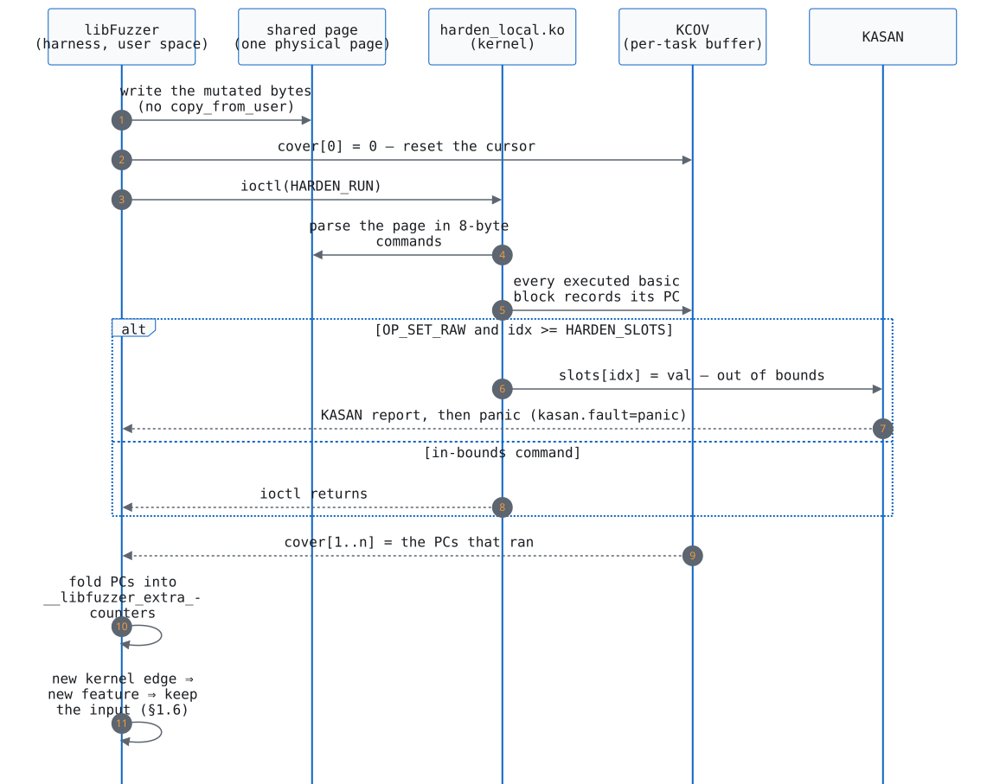
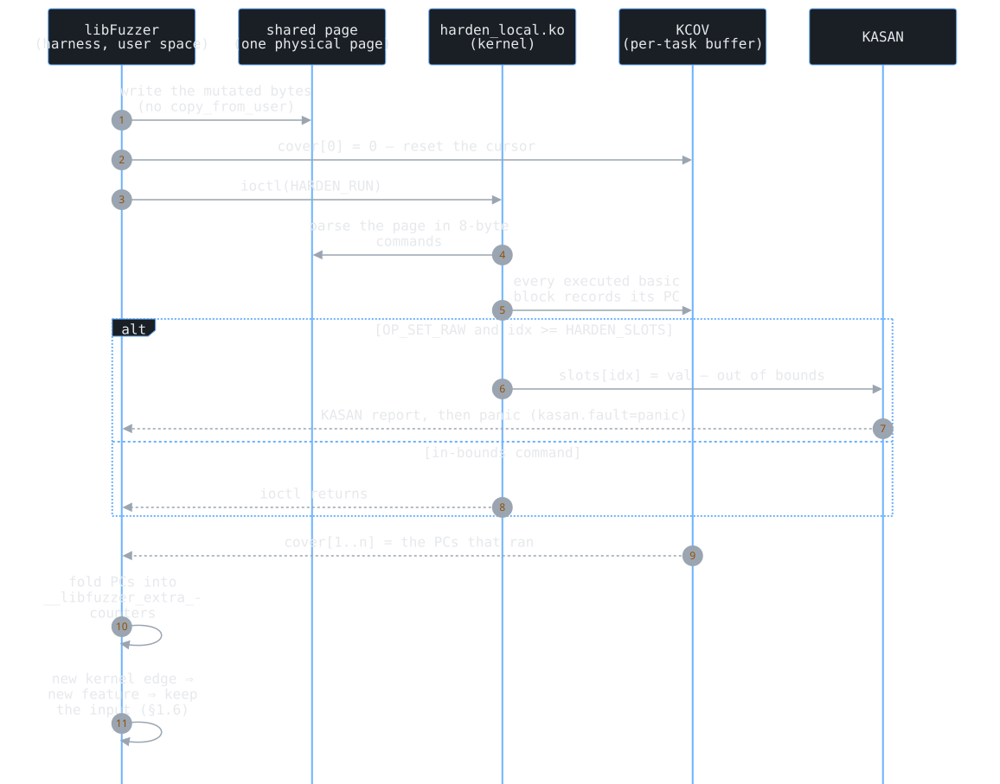
lab.sh buildlab.sh build is the build subcommand: it invokes
vng --build to produce a guest kernel with exactly the features this lab needs. You run
it once (it regenerates the kernel config from scratch — you do not pre-run
make defconfig; vng seeds an essential config itself) and then reuse the image for every
lab. The samples are wired in-tree
(samples/harden/{Kconfig,Makefile}, samples/rust/harden/…, and their
parents), so one build produces the modules. Here is the whole script, annotated:
ROOT="$(cd "$(dirname "${BASH_SOURCE[0]}")" && pwd)"; cd "$ROOT"
source "${VENV:-$HOME/venv-virtme}/bin/activate" # vng + a clang on PATH (LLVM=1)
make LLVM=1 rustavailable # fail early if the Rust toolchain is off
vng --build -j "$JOBS" LLVM=1 \
--configitem CONFIG_KASAN=y \
--configitem CONFIG_KASAN_GENERIC=y \ # heap OOB / UAF oracle (Chapter 7 §7.2)
--configitem CONFIG_KASAN_STACK=n \ # our bug is heap; off ⇒ no stack-frame bloat
--configitem CONFIG_FRAME_WARN=4096 \ # raise the frame limit (see below)
--configitem CONFIG_PANIC_ON_OOPS=y \ # necessary but NOT sufficient (§7.3)
--configitem CONFIG_KCOV=y \ # guidance signal (Chapter 6)
--configitem CONFIG_KCOV_ENABLE_COMPARISONS=y \ # compare feedback (§6.4b)
--configitem CONFIG_DEBUG_FS=y \ # /sys/kernel/debug/kcov
--configitem CONFIG_SAMPLES=y \
--configitem CONFIG_SAMPLE_HARDEN=m \ # the C drivers (local + remote)
--configitem CONFIG_RUST=y \
--configitem CONFIG_SAMPLES_RUST=y \
--configitem CONFIG_SAMPLE_RUST_HARDEN=m # both Rust drivers (see the note below)Two details the committed script adds on top of that core. It verifies its own output —
after the build it lists the four .ko files the labs need and greps one object for
__sanitizer_cov_trace_pc and __asan_report_store*, because a kernel that
builds without those two hooks will fuzz happily and find nothing. And it degrades gracefully: with
NO_RUST=1, or when make rustavailable fails, it drops the Rust
--configitems and builds the C labs only.
vng --build, not vng build. virtme-ng takes a positional
argument as a command to execute inside a guest, so vng build --configitem …
does not build anything — it boots a VM and tries to run a program called build. You can
watch it happen with vng build --dry-run, which prints a full
qemu-system-x86_64 … line carrying virtme.exec=`YnVpbGQ=` —
base64 for build. The flag spelling is what the script uses.CONFIG_SAMPLE_RUST_HARDEN_REMOTE line. The
Rust remote driver is gated by its own symbol, but samples/rust/Kconfig gives it
default SAMPLE_RUST_HARDEN — deliberately, because vng's olddefconfig pass
drops an explicit --configitem for it. Both Rust modules therefore come out of the one
flag above. This is the kind of detail that only surfaces when you try to reproduce someone else's
lab, which is why the script is in the tree rather than in this paragraph.CONFIG_KASAN_GENERIC=y is the oracle that turns the driver's out-of-bounds
write into a report. But turning that report into something the fuzzer can observe (the
reporting bridge, §7.3) has a subtlety the lab surfaced empirically:
CONFIG_PANIC_ON_OOPS=y is not enough — a KASAN report is not an "oops", so with
only panic_on_oops the kernel logs BUG: KASAN: … and keeps going,
and the fuzzer runs right past the bug. The bridge that actually works is the boot parameter
kasan.fault=panic, which lab.sh passes on the guest command line
(§6.10). With it, the first KASAN hit panics the VM and the fuzzer process dies with it — the crash
is captured. This is precisely the "make the kernel tell the fuzzer" problem of Chapter 7 §7.3, and the
answer is a boot flag, not just a config.
lib/maple_tree.c, fs/coredump.c) with
error: stack frame size exceeds limit (2048) [-Werror,-Wframe-larger-than]. Cause: a
KASAN build adds redzones that inflate stack frames past CONFIG_FRAME_WARN=2048, and
CONFIG_WERROR=y makes the warning fatal. The two config lines that fix it are
in the script above: (1) CONFIG_KASAN_STACK=n — the per-variable stack redzones
are the worst offender, and our injected bug is a heap slab-overflow, so stack
instrumentation buys us nothing here; and (2) CONFIG_FRAME_WARN=4096 — raise the
threshold so the frames that remain (from heap KASAN + the deep maple-tree/coredump paths) no longer
trip -Werror. Raising FRAME_WARN sticks through vng's
olddefconfig where trying to disable it outright (=0) or turn off
WERROR did not. This is exactly the friction Chapter 7 warned about: a hardened
(sanitizer-heavy) build is not free — you pay for the oracle in build-config effort.lab.sh build — one command for the guest kernel and every lab module
bash lab.sh build # regenerates config + builds the guest kernel and modules (30+ min:
# KASAN + KCOV + Rust bindings + BTF are all compiler-heavy)
# ✓ verified: produces arch/x86/boot/bzImage plus harden_local.ko, harden_remote.ko,
# and the Rust samples/rust/harden/local.ko — all KCOV- and KASAN-instrumented.tristate … depends on
KCOV && m — module-only. A KASAN panic ends the VM, so the workflow is "boot, insmod, fuzz
until panic, reboot." Modules make each iteration an insmod, not a 30-minute rebuild.lab.sh, one at a timeWhere lab.sh build builds, lab.sh <lab>
runs. One script, two jobs: pick a lab by name, and it compiles the right harness with the project clang, boots the
guest with vng, loads the matching module, and starts fuzzing. One command per lab:
lab.sh usage — one invocation per lab, plus the knobs
bash lab.sh userspace # pure-userspace libFuzzer warm-up (no VM)
bash lab.sh local # C driver, LOCAL KCOV coverage, in the VM
bash lab.sh remote # C driver, REMOTE KCOV coverage, in the VM
bash lab.sh rust-local # Rust driver (same /dev node), in the VM
bash lab.sh rust-remote # Rust workqueue driver, REMOTE KCOV, in the VM
# knobs: RUNS=5000000 bash lab.sh local # iteration cap
# HARDEN_CMP=1 bash lab.sh local # compare-feedback mode (§6.15)
# TIME=60 bash lab.sh userspaceInternally each kernel lab is the same moves — the script factors them into one helper. Two details beyond the basic "build harness, boot, insmod, fuzz" are load-bearing and covered in their own sections below: a seed corpus and a reproducer log (§6.14):
List 6.17 the core of lab.sh (abridged)run_in_guest() { vng --verbose --user root --rw \ # write-through host FS (for the reproducer)
--append "nokaslr kasan.fault=panic" --exec "$1"; } # §6.9: make KASAN fatal
kernel_lab() { # $1 = the .ko, $2 = the fuzzer binary
"$CLANG" -g -O1 -fsanitize=fuzzer,address "$harness" -o "$2" # 1. build harness on host
cp seeds/harden.seed "$corpus/" # 2. seed the corpus (§6.14)
run_in_guest "mount -t debugfs none /sys/kernel/debug; \ # 3. boot + kcov node
sysctl -w kernel.kptr_restrict=0; insmod '$1'; \ # load driver (+ readable addrs)
HARDEN_REPRO='$repro' '$2' -runs=$RUNS '$corpus'" || true # 4. fuzz; panic exit is OK
[ -s "$repro" ] && echo "reproducer saved: $repro" # 5. show the crashing input
}Because vng mounts the host filesystem as the guest root, the harness you compile
on the host runs unchanged in the guest, and the in-tree *.ko are right there to
insmod. Now the four labs, each teaching one thing:
userspace: coverage guidance vs. brute forceThe only lab that needs no VM. It builds tools/harden/userspace/userspace.c at
-O0 (so each guard is its own coverage region — see the §6.7 optimization gotcha) and
fuzzes it on the host. What to observe: a heap-buffer-overflow WRITE within seconds, and the
reproducer HARD\x02\x07\xfe\xff. The lesson: four stacked guards make the bug
unreachable by luck; the trace-cmp→TORC loop (Chapter 3 §3.4) walks through them. This is the whole
motivation for everything that follows, in a form you can run in one line.
local: carrying kernel coverage back to libFuzzerLoads samples/harden/harden_local.ko and fuzzes it through
tools/harden/sample/local.c. The driver parses the shared page in the ioctl's
syscall context, so plain KCOV_ENABLE on the fuzzing thread captures it. Here is
the actual run — from the Extra Counters banner to the panic, in about five seconds:
[harden] loaded harden_local.ko
[harden] harden_local .text base: 0xffffffffc0400000 # module load base (for §6.12)
INFO: 65536 Extra Counters # the seam is wired (Chapter 6 §6.2)
#2 INITED cov: 7 ft: 29 corp: 1/1b ... # cov/ft are KERNEL edges, via extra counters
[ 5.11] BUG: KASAN: slab-out-of-bounds in harden_run+0x2b6/0x350 [harden_local] # oracle fires
[ 5.13] Kernel panic - not syncing: kasan.fault=panic set # bridge → VM dies → crash capturedWhat to observe: the 65536 Extra Counters line (the array is registered),
then cov:/ft: that are non-zero and climbing — those are kernel
edges arriving through the __libfuzzer_extra_counters seam — and finally the KASAN
report naming harden_run and the panic. The lesson: the entire "bring your own
coverage" model (Chapter 6) executing end to end — a byte array is the only contract between a kernel
and a userspace fuzzer, and it takes seconds to drive the parser into the unchecked branch.
remote: coverage from a kworkerIdentical bug and harness, but harden_remote.ko parses on a workqueue
kthread, so the coverage is on a different task. The harness therefore uses
KCOV_REMOTE_ENABLE with a common handle, and the driver's worker brackets its parse
with kcov_remote_start_common()/kcov_remote_stop(). What to observe
(from the real run): a long stream of NEW lines with ft: climbing all
the way to ~100 — that growth is the proof that kworker coverage reached the harness — then
BUG: KASAN: slab-out-of-bounds in harden_run+0x2b6 [harden_remote] and the panic.
The lesson: KCOV is per-task, and the common-handle (vhost) pattern is how you follow the
work off the syscall thread.
remote harness at plain KCOV_ENABLE instead of
KCOV_REMOTE_ENABLE: coverage collapses to near-zero and the fuzzer stalls, because the
parse ran on a kworker, not this thread. Restoring the common handle restores the signal. That is
Chapter 6 §6.4c's "coverage is per-task" made tangible.rust-local: the same bug, in RustLoads samples/rust/harden/local.ko — a Rust misc device that co-maps its page with
VmaNew::set_mixedmap() + vm_insert_page and does the OOB write through a
raw pointer. It deliberately registers the same /dev/harden_local node as the
C driver, so the identical C harness (tools/harden/sample/local.c) drives it unchanged
— load one module at a time. What to observe (from the real run): the same coverage-then-KASAN
story from a memory-safe language's unsafe corner —
BUG: KASAN: slab-use-after-free in _RNvCs…_5local10harden_run [local] (note the mangled
Rust symbol), reached in ~5 seconds. The lesson: the coverage/oracle machinery is
language-agnostic; only the driver body changed.
rust-remote: the frontier, now workingLoads samples/rust/harden/remote.ko — the Rust workqueue driver — and drives it with
the C remote harness (same /dev/harden_remote node). This is the Chapter 8 K5/L5 frontier
made real: the module calls the KCOV remote FFI from Rust
(kcov_remote_start/kcov_common_handle, reachable because
bindings_helper.h now includes <linux/kcov.h>), and it waits for its
kworker with flush_work — a reusable per-run barrier — rather than a one-shot
Completion. What to observe (from the real run): ft: climbing to ~107
(remote coverage arriving from a different task), then, on the kworker itself:
BUG: KASAN: slab-out-of-bounds in _RNvCs…_6remote10harden_run+0x498 [remote]
... kasan_report ... ret_from_fork # the stack is a kthread — the bug is on the WORKQUEUE
Kernel panic - not syncing: kasan.fault=panic setThe lesson: Rust-for-Linux can drive the whole chain — zero-copy mmap, an unsafe OOB write,
and remote KCOV via raw FFI — and the fuzzer finds the bug on a kworker exactly as it does in C. The
one subtlety that mattered: the per-run barrier must be reusable (flush_work),
because a Completion fires once and then stops making the ioctl wait, which starves the
coverage signal.
What to watch. The INFO: N Extra Counters banner at startup (Chapter 6 §6.2)
confirms the section is wired; then cov:/ft: rising means kernel
edges are being discovered through the extra-counters seam; and the final KASAN report is the
oracle firing. All three layers of the study are visible in one terminal.
Rust status. The Rust local driver (samples/rust/harden/local.rs)
builds — samples/rust/harden/local.ko comes out of the same lab.sh build
run as the C modules, using only abstractions that exist today: the misc-device mmap
hook, VmaNew::set_mixedmap() + vm_insert_page for zero-copy, and an unsafe
raw-pointer write for the planted bug. And it is fully instrumented: its object carries both
__sanitizer_cov_trace_pc (KCOV) and __asan_report_store* (KASAN), so the
coverage-then-crash story works from Rust exactly as from C. The one wrinkle worth knowing: the
handler signatures must spell the borrowed pointer concretely (Pin<&HardenDevice>
for a KBox device, ArcBorrow<'_, HardenDevice> for an Arc
one) rather than the generic <Self::Ptr as ForeignOwnable>::Borrowed — the latter
needs an extra import and the compiler will tell you so.
The Rust remote driver (remote.rs) is now built by default and verified
— it was the Chapter 8 K5/L5 frontier, and the lab is where that "future contribution" stopped
being abstract. Getting it working surfaced three concrete, reusable lessons:
rust/bindings/bindings_helper.h
includes <linux/kcov.h> — then bindings::kcov_remote_start /
kcov_common_handle are callable (as kernel::bindings::…).Completion is one-shot — after the
first firing the ioctl stops waiting, starving the coverage signal. flush_work
(via Work::raw_get) waits for exactly that enqueue, every call.olddefconfig drops the
--configitem for the remote symbol, so the Kconfig carries
default SAMPLE_RUST_HARDEN and a fresh config is used; the module must be built in
the same pass as the kernel or its symbol CRCs won't match (insmod →
Invalid module format).-O1 and confirm it
reports one counter and never finds the bug; then -O0 and watch it fall.
Explain, using Chapter 3 §3.2, what the optimizer did to the coverage.mmap the device, write a recognizable
pattern, and add a pr_info in the driver dumping the first bytes it reads.
They match with no copy in between — the page is physically shared.KCOV_ENABLE; compare the ft: curves. Tie the
difference back to "KCOV is per-task" (Chapter 6 §6.4c).KCOV_ENABLE_COMPARISONS. Make
the driver's buggy branch depend on a 4-byte magic in the command and show that comparison
coverage (replayed into TORC per Chapter 6 §6.4b) cracks it far faster than PC coverage
alone.idx < HARDEN_SLOTS check
to OP_SET_RAW, rebuild, and re-run: the fuzzer should now saturate coverage
without a KASAN report. You have closed the loop — found a bug with coverage, and used the
same harness as a regression test.Chapter 6 (Movement II) grounding: all code lives in one
linux-next (7.2.0-rc1) tree, committed together as "sample: add libfuzzer-study modules"
— samples/harden/{Kconfig,Makefile,local.c,remote.c},
samples/rust/harden/{Makefile,local.rs,remote.rs},
tools/harden/**, and lab.sh (build + run) at the top. Verified in this session: the userspace C target finds the heap-overflow write in
seconds (reproducer HARD\x02\x07\xfe\xff); bash lab.sh build builds
successfully, producing arch/x86/boot/bzImage and four loadable,
KCOV+KASAN-instrumented modules — samples/harden/{harden_local,harden_remote}.ko and the
Rust samples/rust/harden/{local,remote}.ko (confirmed via llvm-nm: each
carries __sanitizer_cov_trace_pc/__sanitizer_cov_trace_cmp* and
__asan_report_store*; the Rust remote object also has kcov_remote_start/
kcov_common_handle); the C harnesses compile with the project clang. The working
frame-size fix is CONFIG_KASAN_STACK=n + CONFIG_FRAME_WARN=4096. And all
four kernel labs are verified end to end under lab.sh, each reporting
65536 Extra Counters, driving kernel coverage, and tripping a KASAN report +
kasan.fault=panic in seconds: local →
slab-out-of-bounds in harden_run [harden_local]; rust-local →
slab-use-after-free in …harden_run [local]; remote → ft:~100 then
slab-out-of-bounds in harden_run [harden_remote]; and rust-remote →
ft:~107 then slab-out-of-bounds in …harden_run [remote] on the kworker
(Rust + remote KCOV + flush_work). Two lessons fell out: plain
CONFIG_PANIC_ON_OOPS is not enough to stop on a KASAN report
(lab.sh adds kasan.fault=panic, §6.9); and the reproducer must be logged to
a host path (durable via fsync + vng --rw) because the panic tears down the
VM before libFuzzer can save one (§6.14).
KCOV hands you raw runtime program counters. The moment you want to turn one — a
coverage PC, or the address in a KASAN report — back into a file:line, you hit KASLR:
the kernel is loaded at a randomized base each boot, so a runtime PC does not match the link-time
address in vmlinux. And there is a second, subtler base: our buggy code lives in a
module (harden_run in harden_local.ko), and modules are loaded at a
dynamically allocated address whether or not KASLR is on. So symbolizing module
coverage always needs the module's load base.
BUG: KASAN: slab-out-of-bounds in harden_run+0x2a/0x120 [harden_local] — that
+0x2a is module-relative and directly usable.Where the arithmetic is needed is turning a raw KCOV coverage PC into source. There are two bases to know, depending on which code the PC belongs to:
| PC belongs to… | Its base | How to get the base | Symbolize with |
|---|---|---|---|
kernel core (vmlinux) |
kernel KASLR slide | dmesg | grep 'Kernel Offset', or runtime(sym) − static(sym) |
addr2line -e vmlinux $((pc − slide)) |
| a module (our case) | module .text load address (dynamic; independent of KASLR) |
/sys/module/<mod>/sections/.text (needs kptr_restrict=0) |
addr2line -e <mod>.ko $((pc − base)) |
The recipe above is four shell commands, but a beginner should see where in the kernel those numbers come from. It reduces to three questions: who moves the kernel, how does the kernel know by how much, and why is a module different? Each has a short, readable answer in the source of the very kernel this lab boots.
The linker fixes every kernel symbol relative to a single compile-time anchor. On x86-64 that anchor
is __START_KERNEL_map:
__START_KERNEL_map, the compile-time base every slide is measured against
#define __START_KERNEL_map _AC(0xffffffff80000000, UL)So at build time the first byte of kernel text, the symbol _text, is placed a fixed
distance above that anchor (call the link-time value __START_KERNEL, roughly
0xffffffff81000000). At boot, when CONFIG_RANDOMIZE_BASE (KASLR) is on, the
decompressor picks a random slide and copies the whole kernel image up by that amount — so
every symbol's runtime address is its link-time address plus the same slide. Passing
nokaslr simply forces that slide to zero.
kaslr_offset()The kernel exposes the exact slide as a one-line inline function — and it is the whole idea in a single subtraction:
List 6.21 arch/x86/include/asm/setup.h:100 —kaslr_offset(): the slide is one subtraction
static inline unsigned long kaslr_offset(void)
{
return (unsigned long)&_text - __START_KERNEL;
}Read it slowly. &_text is the runtime address of the _text
symbol — and because the kernel is already running at its slid location, that address
already includes the slide. __START_KERNEL is where the linker placed
_text at build time. Subtract the two and everything cancels except the random slide.
That returned value is precisely the Kernel Offset: 0x… line the boot log prints, and
precisely what you must subtract from a core-kernel PC before addr2line.
pc = 0xffffffff83a014f0.kaslr_offset() = 0x2000000 (from dmesg | grep 'Kernel Offset').pc − slide = 0xffffffff81a014f0.addr2line -e vmlinux 0xffffffff81a014f0 → file:line. Done.kaslr_offset() without being in the kernel. Both
operands are visible from userspace: the runtime _text lives in
/proc/kallsyms, the link-time _text (or _stext) in
System.map. Their difference is the slide — which is exactly the _stext
subtraction shown in "If you must keep KASLR on" below. The kernel and your shell are computing the
same number two ways.This lab builds with KASAN, and the kernel deliberately disables memory-region randomization when KASAN is enabled:
List 6.22 arch/x86/include/asm/setup.h — kaslr_memory_enabled() — KASAN silently disables memory randomisationstatic inline bool kaslr_memory_enabled(void)
{
return kaslr_enabled() && !IS_ENABLED(CONFIG_KASAN);
}Note what this does not cover: it gates only the randomized placement of the big virtual
regions (the direct map, vmalloc, vmemmap) — which KASAN pins because its
shadow mapping must stay PGD-aligned. The kernel base slide from step 1 is independent and
can still be non-zero unless you pass nokaslr. The lab passes nokaslr, so for
us the base slide is zero too, and the only moving target left is the module base — next.
Built-in code lives inside vmlinux and rides the single kernel slide. A loadable module
is different: at insmod time the loader asks the executable-memory allocator for a fresh
chunk of the module address window:
execmem_type = EXECMEM_MODULE_TEXT;
ptr = execmem_alloc_rw(execmem_type, size); /* a fresh .text address, every load */That address is carved from the module window [MODULES_VADDR, MODULES_END)
(arch/x86/include/asm/pgtable_64_types.h: MODULES_VADDR = __START_KERNEL_map +
KERNEL_IMAGE_SIZE). Because it is allocated at load time rather than fixed by the linker,
it lands somewhere new on every insmod — with or without KASLR. That is the
second base in the table above, and the reason our recipe reads it at runtime instead of hard-coding it.
/sys/module/…/sections/.text hands you that base — and why it can read as zeroWhen you cat /sys/module/harden_local/sections/.text, the number is produced by this
read handler:
wrote = scnprintf(bounce, sizeof(bounce), "0x%px\n",
kallsyms_show_value(file->f_cred)
? battr->private : NULL);Two details every beginner trips on. battr->private is the section's real load address
— the module base we want. But it is only printed when
kallsyms_show_value(file->f_cred) is true; otherwise the handler substitutes
NULL, so an under-privileged reader gets 0x0000000000000000. That single
conditional is the source-level reason the recipe first runs
sysctl -w kernel.kptr_restrict=0: without it the base reads back as all-zeros and every
subtraction silently produces nonsense. (The same kallsyms_show_value gate is why kernel
pointers appear hashed in reports read from an unprivileged context.)
harden_run+0x2a in the crash? The same kallsyms
machinery, from the other direction: the in-kernel symbolizer (kallsyms_lookup(), used by
the oops/KASAN printer) walks the loaded modules, finds which one owns the faulting PC, subtracts that
module's base for you, and prints symbol+offset [module]. That is why the crash
line needs no arithmetic (§6.12 opening) — the kernel already did the exact subtraction from
step 4 internally. You only do it by hand for raw KCOV coverage PCs, which are never
symbolized for you.nokaslr + the module baselab.sh makes this painless. It boots with --append nokaslr (so any
vmlinux PC equals its link-time address) and, after loading the module, drops
kernel.kptr_restrict and prints the module's .text base:
sysctl -w kernel.kptr_restrict=0
insmod samples/harden/harden_local.ko
cat /sys/module/harden_local/sections/.text # 0xffffffffc0400000 — the real module baseWith that base in hand, a raw coverage PC your harness collected becomes source in two steps —
subtract the base, then addr2line against the .ko:
addr2line
base=0xffffffffc0400000 # from /sys/module/.../sections/.text
pc=0xffffffffc04004f6 # a raw PC from the KCOV buffer
llvm-addr2line -f -e samples/harden/harden_local.ko $(( pc - base )) # 0x4f6
# -> harden_run (the injected OOB write, samples/harden/local.c:111)slab-out-of-bounds in harden_run+0x2b6/0x350 [harden_local] — a symbol+offset the
kernel resolved for you. The base-subtraction dance above is only for turning raw KCOV coverage
PCs (absolute addresses in the ring buffer) into source; the KASAN crash line is already
human-readable. (With this module's debug info, addr2line resolves to the function
harden_run; the offending statement is the unchecked d->slots[idx] = val
at local.c:111.)nokaslr isn't enough for modules. nokaslr
pins only the kernel base. Loadable modules are vmalloc'd at load time, so
harden_local.ko still lands at a fresh .text address on every
insmod. That is why the recipe reads /sys/module/.../sections/.text at
runtime rather than assuming a fixed address — and why kptr_restrict=0 (which unmasks
kernel pointers in /sys and /proc/kallsyms) is a prerequisite.Leave nokaslr off and recover the kernel slide explicitly. The kernel logs it at
boot, or you compute it from any symbol:
# slide from the boot log:
dmesg | grep -i 'Kernel Offset'
# Kernel Offset: 0x1e000000 from 0xffffffff81000000 (relocation range: ...)
# or from a symbol, static vs. runtime:
slide=$(( 0x$(grep ' T _stext$' /proc/kallsyms | cut -d' ' -f1) \
- 0x$(grep ' T _stext$' System.map | cut -d' ' -f1) ))
addr2line -e vmlinux $(( vmlinux_pc - slide )) # for CORE-kernel PCs onlyModule PCs are unaffected by this slide — keep using the per-module .text base
above. In short: one base for vmlinux (the KASLR slide, or zero under
nokaslr), and a separate base per loaded module (always dynamic). Our lab's
bug is in a module, so the module base is the one that matters.
§6.12 grounding: /sys/module/<name>/sections/.text and
kernel.kptr_restrict are standard kernel interfaces; lab.sh boots with
nokaslr and prints the module base after insmod. The "Kernel Offset" boot
line requires CONFIG_RANDOMIZE_BASE=y (KASLR) to be meaningful; under
nokaslr the slide is zero.
Every lab in §6.10 ends the same way: the fuzzer trips the planted bug and a sanitizer report scrolls out. That report is not noise to skim past — it is the oracle's testimony (§6.1, Chapter 7), the one artifact that tells you what broke, where, and how. This section re-runs all five labs and reads their real reports line by line. The reports below are verbatim from an actual run of this lab (addresses and PIDs will differ on yours); nothing is invented.
ASAN and KASAN are siblings. The userspace warm-up uses AddressSanitizer (ASAN); the kernel labs use Kernel Address Sanitizer (KASAN). They are the same idea in two habitats: a shadow memory that marks every byte as addressable or poisoned, checked on each access. So once you can read one report, you can read them all — which is exactly why we read five. The repetition is the point: the same skeleton appears each time, and seeing it five times with different flesh is how it becomes second nature.
ERROR: AddressSanitizer: <class> or BUG: KASAN: <class> in <func>+off.Write/Read of size N at addr …, and crucially which task did it.file:line.allocated by (and, for a use-after-free, Freed by).N bytes after a M-byte region, the slab cache, and the shadow bytes.crash-<sha1> and prints stats (userspace); the kernel panics and our harness saves the reproducer (kernel, §6.14).bash lab.sh userspace. No VM: plain libFuzzer + ASAN on the host. Here is the tail of a
real run:
#10895 REDUCE cov: 5 ft: 5 corp: 4/25b lim: 104 exec/s: 0 rss: 34Mb L: 8/8 …
=================================================================
==513897==ERROR: AddressSanitizer: memcpy-param-overlap: memory ranges
[0x6da29fb28e70,0x6da29fb38bc3) and [0x6da29fb28e58,0x6da29fb38bab) overlap
#0 0x… in __asan_memcpy asan_interceptors_memintrinsics.cpp:65:3
#1 0x… in LLVMFuzzerTestOneInput tools/harden/userspace/userspace.c:78:3 ← your bug
#2 0x… in fuzzer::Fuzzer::ExecuteCallback FuzzerLoop.cpp:619:13
[…]
0x6da29fb28e71 is located 0 bytes after 1-byte region [0x6da29fb28e70,0x6da29fb28e71)
allocated by thread T0 here:
#0 0x… in malloc asan_malloc_linux.cpp:109:3
#1 0x… in LLVMFuzzerTestOneInput tools/harden/userspace/userspace.c:64:17 ← the malloc()
[…]
SUMMARY: AddressSanitizer: memcpy-param-overlap userspace.c:78:3 in LLVMFuzzerTestOneInput
==513897==ABORTING
MS: 1 ChangeBinInt-; base unit: 265e3a79…
0x48,0x41,0x52,0x44,0x2,0x7,0x53,0xfd,
HARD\002\007S\375
artifact_prefix='./'; Test unit written to ./crash-4573d2295ad1…
stat::number_of_executed_units: 57166Walk the six parts:
AddressSanitizer: memcpy-param-overlap. Interesting: we planted a
heap-overflow write (memcpy(buf, payload, h.len) with an attacker-controlled
h.len), yet ASAN names memcpy-param-overlap. Same root cause, different check:
because h.len is huge, the copy's source and destination ranges overlap on the
heap, and ASAN flags that first. A first, durable lesson: the class name describes the check that
fired, not necessarily the vulnerability you imagined — always read on to the location.thread T0 is the single fuzzer thread (in-process, §1.1).#1 is the gold: LLVMFuzzerTestOneInput
userspace.c:78:3 — the exact memcpy. The frames below it
(ExecuteCallback, RunOne, §1.5) are libFuzzer machinery you can ignore.allocated by thread T0 … userspace.c:64" points at the
malloc(payload_len ? payload_len : 1) — a 1-byte buffer. The claimed length
overran it.0 bytes after 1-byte region" — the write starts exactly at the
first out-of-bounds byte of a 1-byte allocation. Unambiguous overflow.ABORTING, then libFuzzer prints the crashing input twice — as
hex (0x48,0x41,0x52,0x44,…) and ASCII (HARD\002\007S\375, note the
HARD magic it had to discover) — and writes crash-4573… for replay.
number_of_executed_units: 57166 is how many inputs it took.bash lab.sh local. Same bug class, but now inside the kernel, so the report is
KASAN's. The skeleton is identical — read it again and watch the parts line up:
[harden] loaded harden_local.ko
#2 INITED cov: 8 ft: 29 corp: 1/16b … # libFuzzer, driving via ioctl()
==================================================================
[ 5.457586] BUG: KASAN: slab-out-of-bounds in harden_run+0x2d2/0x360 [harden_local]
[ 5.458612] Write of size 1 at addr ffff88800aff05f6 by task harden_local_fu/287
[ 5.459850] Call Trace:
[ 5.459899] harden_run+0x2d2/0x360 [harden_local]
[ 5.459909] harden_ioctl+0x41/0x70 [harden_local]
[ 5.459914] __x64_sys_ioctl+0x128/0x1b0
[ 5.459920] do_syscall_64+0x120/0x380 # ← reached via a syscall
[ 5.459926] entry_SYSCALL_64_after_hwframe+0x77/0x7f
[ 5.479653] Allocated by task 1:
[ 5.482027] kstrdup+0x3e/0xb0 # the neighbour object, not ours
[ 5.482494] __kernfs_new_node+0x4b/0x640
[ 5.490727] The buggy address belongs to the object at ffff88800aff05e0
[ 5.490727] which belongs to the cache kmalloc-16 of size 16
[ 5.492314] The buggy address is located 9 bytes to the right of
[ 5.492314] allocated 13-byte region [ffff88800aff05e0, ffff88800aff05ed)
[ 5.496472] Memory state around the buggy address:
[ 5.497554] >ffff88800aff0580: 00 05 fc fc 00 04 fc fc 00 06 fc fc 00 05 fc fc
[ 5.497988] ^
[ 5.499187] ==================================================================
[ 5.499654] Kernel panic - not syncing: kasan.fault=panic set ...
[harden] reproducer saved: …/repro-harden_local.bin (12 bytes)
00000000: 0100 0000 2d00 0000 02f6 a501 ....-.......KASAN: slab-out-of-bounds in harden_run+0x2d2/0x360 [harden_local].
"slab-out-of-bounds" = a spatial overflow of a slab (kmalloc) object. The
+0x2d2 is the offset into harden_run; [harden_local] is the
module — the kernel already symbolized it for you (no KASLR math needed, §6.12).Write of size 1 at addr … by task harden_local_fu/287. A one-byte
write (our slots[idx] = val). Remember the task name
harden_local_fu (the fuzzer process, PID 287) — it will change in Lab 3, and
that change is the whole lesson.entry_SYSCALL_64 → do_syscall_64 → __x64_sys_ioctl → harden_ioctl → harden_run. The bug
was reached synchronously, through the ioctl() the harness called. That matters
for coverage: local KCOV, enabled on this same task, sees every one of these frames (§6.4c).Allocated by task 1: … kstrdup … __kernfs_new_node." This is a
subtlety worth internalizing: KASAN reports the alloc stack of the object that owns the poisoned
byte — and our write ran so far past our own 16-byte slots buffer that it landed
in a neighbouring kmalloc-16 object (a sysfs string from module load). The victim
is a bystander; that is what a real heap overflow looks like.9 bytes to the right of a 13-byte region" in "cache kmalloc-16 of
size 16." Then the shadow map: each byte covers an 8-byte granule — 00 =
all 8 addressable, 05 = only the first 5 valid (a 13-byte object is 00+05),
and fc = KASAN_SLAB_REDZONE (poisoned padding). The ^ points at a
byte marked fc: the write hit a redzone, i.e. out of bounds. (Legend from
mm/kasan/kasan.h: fc redzone, fb freed slab — remember
fb for Lab 4.)kasan.fault=panic (§6.14), the report is
followed by Kernel panic — the report becomes a fatal signal the fuzzer can't ignore
(the §2.4 reporting bridge). The panic kills the VM, so our harness's host-side log saves the
12-byte reproducer: 01 00 00 00 | 2d 00 00 00 | 02 f6 a5 01 = count 1, then one command
op=2 (OP_SET_RAW) idx=0xf6=246 flag=0xa5 val=1 — index 246 into a 16-slot array.bash lab.sh remote. Identical bug, identical class — but the parser now runs on a
workqueue, and the report proves it in a single field:
[ 46.856316] BUG: KASAN: slab-out-of-bounds in harden_run+0x2d2/0x360 [harden_remote]
[ 46.856806] Write of size 1 at addr ffff888006f24bd5 by task kworker/1:0/24
[ 46.857347] CPU: 1 UID: 0 PID: 24 Comm: kworker/1:0 Not tainted 7.2.0-rc1-virtme #73
[ 46.857402] harden_run+0x2d2/0x360 [harden_remote]
[…workqueue internals…]
[ 46.8…… ] worker_thread+0x93b/0xd80 # ← a kthread, NOT a syscall
[ 46.8…… ] kthread+0x334/0x420
[ 46.8…… ] ret_from_fork+0x259/0x5b0
[ 46.863646] Allocated by task 1:by task harden_local_fu/287 with this
by task kworker/1:0/24. The offending write happens on a kernel worker thread, not
on the process that called ioctl(). This is the entire reason remote coverage
exists: local KCOV records only the enabling task, so it would see nothing of a bug that
executes here (§6.4c). The KASAN "by task" line is the observable, ground-truth proof of the per-task
rule you read about in theory.worker_thread → kthread → ret_from_fork instead of
do_syscall_64 — no syscall frames at all. That silhouette ("this ran on a kworker")
is worth memorizing; you will see it whenever a driver defers work.slab-out-of-bounds, same
harden_run+0x2d2, same redzone shadow, same panic + reproducer. Re-reading them here is
the repetition paying off — you already know what they mean.bash lab.sh rust-local. The same logical bug, written in Rust, surfaces under a
different KASAN class — and the function name looks alien until you decode it:
[ 26.177771] BUG: KASAN: slab-use-after-free in _RNvCs4I3W5YfeR5Z_5local10harden_run+0x498/0x5d0 [local]
[ 26.179039] Write of size 1 at addr ffff88800828ee40 by task harden_local_fu/284
[ 26.180433] _RNvCs4I3W5YfeR5Z_5local10harden_run+0x498/0x5d0 [local]
[ 26.180440] ? __asan_memcpy+0x40/0x70
[ 26.204078] Allocated by task 284:
[…]
[ 26.211049] Freed by task …: # ← this section is what makes it a UAFslab-use-after-free, not slab-out-of-bounds.
The write still runs off the end of the Rust KVec<u8>, but in this build the byte it
lands on belongs to a slab granule that has already been freed (shadow byte fb,
KASAN_SLAB_FREE — the fb to remember from Lab 2). Same defect, a
different neighbour state, a different name. This is why "Check whether Rust reports UAF, not OOB" was a
real question in this lab: heap layout, not language, decides which poisoned byte you hit first._RNvCs4I3W5YfeR5Z_5local10harden_run is a Rust
v0-mangled name. Read the length-prefixed segments: 5local = crate
local, 10harden_run = fn harden_run — i.e.
local::harden_run. (rustfilt or c++filt will demangle it.) The
? __asan_memcpy frame confirms the write went through the Rust memcpy path.Freed by.by task harden_local_fu/284 — syscall context, like Lab 2 (this is
the local Rust driver). Same panic + reproducer aftermath.bash lab.sh rust-remote. This one combines Lab 3's task lesson with Lab 4's class
lesson — a good final exam:
[ 7.037564] BUG: KASAN: slab-use-after-free in _RNvCs57cibFnPdQ6_6remote10harden_run+0x498/0x5d0 [remote]
[ 7.038828] Write of size 1 at addr ffff8880084e2ea5 by task kworker/1:1/75
[ 7.040032] CPU: 1 UID: 0 PID: 75 Comm: kworker/1:1 Not tainted 7.2.0-rc1-virtme #73
[ 7.0…… ] _RNvCs57cibFnPdQ6_6remote10harden_run+0x498/0x5d0 [remote]
[ 7.0…… ] worker_thread+0x93b/0xd80
[ 7.0…… ] kthread+0x334/0x420
[ 7.058170] Allocated by task 281:
[ 7.067390] Freed by task …:slab-use-after-free (Rust, like Lab 4).kworker/1:1 (remote/workqueue, like Lab 3) — so this bug needs
both the remote-coverage plumbing to be found and the UAF reading to be
understood._RNvCs…_6remote10harden_run → remote::harden_run.Allocated by and Freed by — UAF confirmed.| Lab | Sanitizer | Class | Faulting symbol | By task (Comm) | What it teaches |
|---|---|---|---|---|---|
| 1 userspace | ASAN | memcpy-param-overlap | LLVMFuzzerTestOneInput (userspace.c:78) | T0 (fuzzer) | class name = the check that fired; read the location |
| 2 local (C) | KASAN | slab-out-of-bounds | harden_run [harden_local] | harden_local_fu (syscall) | the full anatomy; shadow fc = redzone |
| 3 remote (C) | KASAN | slab-out-of-bounds | harden_run [harden_remote] | kworker/1:0 | "by task" proves why remote coverage is needed |
| 4 rust-local | KASAN | slab-use-after-free | local::harden_run (v0-mangled) | harden_local_fu (syscall) | layout picks the class; Freed by = temporal |
| 5 rust-remote | KASAN | slab-use-after-free | remote::harden_run | kworker/1:1 | both lessons combined |
Allocated by alone → spatial (OOB); Allocated + Freed by → temporal (UAF).fc redzone / fb freed) is the physical evidence.crash-<sha1> + stats; kernel → panic + saved reproducer (§6.14).§6.13 grounding: all five reports are verbatim (trimmed) from a live run of
bash lab.sh {userspace,local,remote,rust-local,rust-remote} on this lab's
7.2.0-rc1 kernel; the shadow-byte legend (fc=KASAN_SLAB_REDZONE,
fb=KASAN_SLAB_FREE) is from mm/kasan/kasan.h. Addresses, PIDs, and
timing differ per boot; the structure does not.
Every report names the fault as function+0xoffset, not file:line. Closing
that last gap is a two-tool skill — one tool per habitat, the same three questions each
time: which source line?, which inlined callers?, and which machine instruction? Do it
once per lab and the reports stop being opaque.
ASAN_OPTIONS=symbolize=0 to get raw
binary+0xoff, then addr2line each offset (and objdump -S for the
instruction).scripts/decode_stacktrace.sh vmlinux "$(pwd)" < kasan.txt > decode_stacktrace_kasan.txt.addr2line with a script, down to the instructionASAN normally symbolizes in-process, but to learn the mechanism (and to handle a stripped or offline binary) turn that off and do it by hand. Step 1 — get raw offsets by replaying the saved reproducer:
List 6.33 real output — ASAN with in-process symbolization disabled$ ASAN_OPTIONS=symbolize=0 ./tools/harden/userspace/userspace crash-4573d2295ad1…
==520566==ERROR: AddressSanitizer: memcpy-param-overlap: memory ranges […] overlap
#0 0x560f13ef705e (…/userspace+0x10b05e)
#1 0x560f13f3b8ad (…/userspace+0x14f8ad) # ← your frame
#2 0x560f13e3c305 (…/userspace+0x50305)Step 2 — a two-line script folds every offset back to source (the -i flag also
prints the inlined call chain, -f the function):
$ BIN=tools/harden/userspace/userspace
$ for off in $(grep -oE 'userspace\+0x[0-9a-f]+' asan-raw.txt | sed 's/.*+//'); do
echo "== $off =="; llvm-addr2line -f -i -e "$BIN" "$off"; done
== 10b05e == __asan_memcpy asan_interceptors_memintrinsics.cpp:65
== 14f8ad == LLVMFuzzerTestOneInput tools/harden/userspace/userspace.c:78 # the bug
== 50305 == fuzzer::Fuzzer::ExecuteCallback FuzzerLoop.cpp:619Step 3 — the instruction location, not just the line. Disassemble with source interleaved and you see the exact call the crash returned into:
List 6.35 llvm-objdump -d -S — the faulting instruction at userspace.c:78$ llvm-objdump -d -S "$BIN" | less
; memcpy(buf, payload, h.len); // <-- heap-buffer-overflow (WRITE)
14f8a9: e8 b2 b5 fb ff callq 0x10ae60 <__asan_memcpy> # the store
14f8ae: … # return addr = 0x14f8ad+1
; memcpy(buf, payload, payload_len); // the safe else-branch
14f8d3: e8 88 b5 fb ff callq 0x10ae60 <__asan_memcpy>Frame #1's offset 0x14f8ad is the return address immediately after the
callq at 0x14f8a9 — i.e. the memcpy(buf, payload, h.len) at
userspace.c:78. That is as precise as symbolization gets: the line and the byte.
decode_stacktrace.sh, the whole trace at onceSave the report (scrape /dev/kmsg, §6.14) to kasan.txt, then run exactly the
command the kernel ships for this:
decode_stacktrace.sh — the whole KASAN report symbolized in one pass
$ scripts/decode_stacktrace.sh vmlinux "$(pwd)" < kasan.txt > decode_stacktrace_kasan.txtIt rewrites every func+0xoff [module] into func (file:line), resolving both
vmlinux and module frames — and it even disassembles the Code: bytes to mark
the trapping instruction. Lab 2 (local), decoded:
dump_stack_lvl (lib/dump_stack.c:120)
print_report (mm/kasan/report.c:482)
kasan_report (mm/kasan/report.c:595)
harden_run (samples/harden/local.c:?) harden_local # faulting frame — line ':?', see below
harden_ioctl (samples/harden/local.c:128) harden_local
__x64_sys_ioctl (fs/ioctl.c:51)
do_syscall_64 (arch/x86/entry/syscall_64.c:63) # ← the syscall path
entry_SYSCALL_64_after_hwframe (arch/x86/entry/entry_64.S:121)Lab 3 (remote), decoded — the workqueue path made explicit:
List 6.38 decode_stacktrace_kasan.txt — C remote driver (real, trimmed)harden_run (samples/harden/remote.c:?) harden_remote
harden_work (samples/harden/remote.c:111) harden_remote # the workqueue callback — resolved!
process_scheduled_works (kernel/workqueue.c:3322)
worker_thread (kernel/workqueue.c:3486) # ← a kthread, not a syscall
kthread (kernel/kthread.c:436)
ret_from_fork (arch/x86/kernel/process.c:158)Set the two decoded traces side by side and Lab 3's whole lesson is one substituted subtree:
harden_ioctl → __x64_sys_ioctl → do_syscall_64 (local, a syscall) becomes
harden_work → process_scheduled_works → worker_thread → kthread (remote, a kworker). The
"by task" field you read in the raw report (§6.13, Lab 3) and this decoded subtree are the same fact,
twice.
Labs 4–5 (Rust): decode_stacktrace.sh also demangles the v0 symbol
for you — _RNvCs…_5local10harden_run comes back as
local::harden_run (samples/rust/harden/local.rs:?) (and remote::harden_run for
Lab 5, again under the worker_thread → kthread subtree). No manual rustfilt
needed.
local.c:? — and how to pin it. The PC the
kernel reports for harden_run+0x2d2 is the return address of a compiler-inserted KASAN check
call, which carries no line-table entry, so addr2line (and thus
decode_stacktrace.sh and scripts/faddr2line) answer ?. Three ways to
recover the real line: (1) read the neighbouring frames — the remote trace already gives
harden_work at remote.c:111; (2) llvm-objdump -d -S harden_local.ko and
find the store near that offset; (3) trust the planted-bug location — the C write is
d->slots[idx] = val at local.c:111/remote.c:111, the Rust write is the
unsafe … .add(idx).write(val) at local.rs:107. All three agree.| Lab | Decode tool | Faulting frame (decoded) | Execution subtree | Planted-bug line |
|---|---|---|---|---|
| 1 userspace | addr2line -fi | LLVMFuzzerTestOneInput userspace.c:78 | (in-process) | userspace.c:78 |
| 2 local (C) | decode_stacktrace.sh | harden_run local.c:? | ioctl→syscall | local.c:111 |
| 3 remote (C) | decode_stacktrace.sh | harden_work remote.c:111 | workqueue→kthread | remote.c:111 |
| 4 rust-local | decode_stacktrace.sh | local::harden_run local.rs:? | ioctl→syscall | local.rs:107 |
| 5 rust-remote | decode_stacktrace.sh | remote::harden_run remote.rs:? | workqueue→kthread | remote.rs:107 |
The reporting bridge from §6.9 has a cost. When kasan.fault=panic fires, the
whole VM goes down — and with it the fuzzer process, before libFuzzer can write
its usual crash-<sha1> artifact. So the panic tells you a bug exists and names the
function, but the exact input that triggered it is gone. For a lab whose whole point is to
study the finding, we want that input back.
--rw flag makes the host filesystem
write-through, so a file written (and fsync'd) from the guest survives the guest's
death. After the panic, that file holds the last input tried — which is exactly the one that
crashed.if (repro_fd >= 0) { // HARDEN_REPRO=<host path>
lseek(repro_fd, 0, SEEK_SET);
if (ftruncate(repro_fd, 0) == 0 && write(repro_fd, data, n) >= 0)
fsync(repro_fd); // durable on the host BEFORE the crashing ioctl
}
memcpy((void *)shared, data, n);
ioctl(dev_fd, HARDEN_RUN); // may panic — but the input is already savedfsync is not free: every input now makes a synchronous round-trip across 9p to the
host, which measured at ~350 exec/s versus ~100,000 without it — a ~250× slowdown. (Dropping
the fsync restores speed but loses the input: virtme's 9p is cached, so an un-synced
write is discarded when the guest dies.) In a real campaign you would never log every input like
this; you would use the §2.4 KASAN→signal bridge so libFuzzer saves the reproducer in-process. But
for this practice we want to review the reproducer, so the lab keeps the durable log and
pays for it — and buys the speed back a different way (next paragraph). This trade-off — durable
logging vs. throughput — is itself a worthwhile thing to have felt.Buying back the speed with a seed corpus. At 350 exec/s the fuzzer would take minutes
to rediscover the bug from an empty corpus, so lab.sh seeds the corpus with a
near-miss input — one that already reaches the buggy branch but with a safe index:
seeds/harden.seed — a near-miss input that reaches the buggy branch with a safe index
# seeds/harden.seed: count=1 ; op=OP_SET_RAW(2) idx=0 (SAFE) flag=0xA5 val=1
01 00 00 00 00 00 00 00 02 00 a5 01 00 00 00 00From there the fuzzer only has to mutate one byte — the index — out of range, so the crash and its saved reproducer appear in seconds even with the reproducer log on. A seed corpus is standard practice: it bootstraps structure the fuzzer would otherwise brute-force; the crash still requires the fuzzer to drive the index out of bounds.
Reading the captured reproducer — and a real subtlety it reveals. After a run the file on the host decodes straight back to the crashing command:
List 6.41 the captured reproducer, decoded straight back into the crashing command$ xxd tools/harden/repro-harden_local.bin
0100 0000 0000 0000 0236 a501 0000 0000
# count=1 ; op=2 (OP_SET_RAW) idx=0x36=54 (>=16 → OOB) flag=0xA5 val=1slab-use-after-free and the
C one slab-out-of-bounds — and why it is neither a Rust nor a KASAN bug. The
reproducer's index byte is the whole story. Both drivers do the identical unbounded write
slots[idx] = val (idx is a byte, 0–255) past a 16-byte heap object. Correlating the
captured index with the KASAN class across runs:
slab-out-of-boundsslab-out-of-boundsslab-use-after-freeChapter 6 §6.4b argued that the extra-counters channel carries counters but not comparison
operands, so a KCOV harness loses the trace-cmp superpower — unless it replays the operands
itself. The HARDEN_CMP=1 mode does exactly that. It puts KCOV in
KCOV_TRACE_CMP mode (enabled by CONFIG_KCOV_ENABLE_COMPARISONS=y in
lab.sh build), and for each recorded compare it calls libFuzzer's own exported callback:
// each KCOV_TRACE_CMP record is {type, arg1, arg2, pc}
for (each record) {
switch (1u << ((type & KCOV_CMP_MASK) >> 1)) { // operand size in bytes
case 1: __sanitizer_cov_trace_cmp1((uint8_t)a1, (uint8_t)a2); break;
case 2: __sanitizer_cov_trace_cmp2((uint16_t)a1, (uint16_t)a2); break;
case 4: __sanitizer_cov_trace_cmp4((uint32_t)a1, (uint32_t)a2); break;
default:__sanitizer_cov_trace_cmp8(a1, a2); break;
}
bump(pc); // compare-site PC as coverage
}Those callbacks are the very ones from Chapter 3 §3.3; calling them feeds the kernel's compare
operands into libFuzzer's Table Of Recent Compares, so the mutator can splice a kernel-observed
constant (like our flag == 0xA5) straight into the input. It is the §6.4b technique made
concrete: the compiler emitted the compare instrumentation into the kernel, KCOV shipped the
operands across the syscall boundary, and the harness hands them to the same TORC that in-process
fuzzing fills automatically.
HARDEN_CMP=1 trades full
edge coverage for compare-site coverage plus operand replay. For a target gated by a hard
magic-value check it is a clear win; for our deliberately-easy bug (found fast either way once
seeded) it is a demonstration of the mechanism rather than a necessity. The lesson matches §6.4b:
compare feedback across the KCOV boundary is possible, but you assemble it by hand from exported
pieces, and it is not free.The lab ran on a throwaway vng guest. This movement shows
the persistent alternative — building and installing a KCOV kernel as a Debian
.deb package — for when you need to fuzz across reboots or against real hardware.
The virtme-ng lab is the fast, throwaway way to iterate: a fresh guest per run, no risk to your
machine. But sometimes you want the opposite — a persistent, natively-booted kernel with
KCOV, so you can fuzz across reboots, attach real hardware, or hand the setup to someone who does
not have the vng/clang toolchain wired up. On Debian/Ubuntu that means building the kernel as a
.deb package (bindeb-pkg), installing it, and booting into it. Here is the
whole recipe — the same three ingredients as the lab (a KCOV-enabled kernel, the module, the
harness), just delivered through the distro's package manager instead of vng.
cd ~
# Start from your running kernel's config so the new kernel boots on your hardware,
# then layer KCOV on top. (Copy in a known-good .config if you have one.)
cp Download/config linux/.config # optional: seed from a saved config
git clone https://github.com/torvalds/linux.git
cd linux
sudo apt install -y build-essential libdw-dev libelf-dev debhelper devscripts gawk \
flex bison bc libssl-dev kmod git python3-pip python3-venv qemu-system \
git-email clang llvm libncurses-dev dwarves pahole libdwarf-dev
make localmodconfig # trim to the modules THIS machine actually uses (fast build)
scripts/config --enable CONFIG_KCOV # the one flag the lab absolutely needs
make -j`nproc` bindeb-pkg # produces ../linux-image-*.deb, linux-headers-*.deb, ...
cd ~
sudo dpkg -i linux-image-*.deb linux-headers-*.deb
sudo update-grub # add the new kernel to the boot menu; reboot into it
# To remove it later (match your version string):
# sudo apt purge linux-image-7.x.y+ linux-headers-7.x.y+ linux-image-7.x.y+-dbg linux-libc-devlocalmodconfig + --enable CONFIG_KCOV.
make localmodconfig reads your currently-loaded modules (lsmod) and turns
off everything else, so the build is minutes not hours and the resulting kernel matches your
hardware. Then a single scripts/config --enable CONFIG_KCOV adds the coverage facility
the harness reads through /sys/kernel/debug/kcov. That is the minimum; for the full lab
experience add the same knobs lab.sh build uses — KASAN,
KASAN_GENERIC, KCOV_ENABLE_COMPARISONS, DEBUG_FS, and the
sample modules (SAMPLES, SAMPLE_HARDEN, SAMPLE_RUST_HARDEN) —
via more scripts/config --enable / --module lines before
bindeb-pkg. Mind the frame-size gotcha from Movement II: on a KASAN build you will want
--disable CONFIG_KASAN_STACK and --set-val CONFIG_FRAME_WARN 4096.Once booted into the packaged kernel, the lab is identical except that you skip vng — mount
debugfs, insmod the module (the .deb installed it under
/lib/modules/$(uname -r)/), and run the same harness binary directly on the host:
sudo mount -t debugfs none /sys/kernel/debug 2>/dev/null
sudo modprobe harden_local # or insmod the .ko from the build tree
clang -g -O1 -fsanitize=fuzzer,address tools/harden/sample/local.c -o /tmp/f
sudo /tmp/f -runs=1000000 corpus/ # same KCOV → extra-counters loop as the labkasan.fault=panic a finding panics your
actual machine (set it in /etc/default/grub's
GRUB_CMDLINE_LINUX only if you accept that), and without it a KASAN report just scrolls
past in dmesg — so scrape /dev/kmsg for the reproducer instead (Movement II,
§6.14). For anything that can corrupt state, prefer the vng VM; reach for the native package when
you specifically need persistence or a device that is not available to a guest.A recurring thread through this whole study — §1.5's crash-on-signal contract, §2.4's KASAN→SIGSEGV patch, §6.4d's crash-detection pitfall — is that coverage tells the fuzzer where to go, but something else must tell it when it has arrived at a bug. That "something else" is a bug oracle. Security hardening, in a fuzzing context, is mostly the craft of installing oracles that convert a silent, latent fault into a loud, observable crash. This part is the guide to that stack for a kernel target.
abort(), a delivered signal). Without an oracle a fuzzer maximises
coverage over code that may already be corrupting memory — it will "successfully" execute the
bug and move on. Every hardening option below is, from the fuzzer's point of view, an oracle.
The kernel offers a layered set of oracles. A serious fuzzing build turns on as many as are
mutually compatible; the config fragment in libfuzzer-kcov.md is essentially this
table made concrete. Group them by the bug class each one catches:
Oracle (CONFIG_*) | Bug class it turns into a crash | Notes for a fuzzing build |
|---|---|---|
KASAN (KASAN, KASAN_INLINE) |
heap/stack/global out-of-bounds, use-after-free (spatial + temporal) | the single highest-value oracle for drivers; KASAN_INLINE is faster than outline. HW_TAGS (arm64 MTE) is the low-overhead production variant. |
| KMSAN | uninitialized-memory reads (incl. info leaks to userspace) | Clang-only; heavy; mutually exclusive with KASAN in one build — run as a separate campaign. |
| KCSAN | data races | needs concurrency in the harness (multiple threads/CPUs) to fire; pairs with the fork/multi-CPU setups. |
| UBSAN | signed overflow, shifts, misaligned/OOB pointer arithmetic, bad enum/bool | cheap; compose freely with KASAN. Route reports to a trap so they crash rather than just log. |
| KFENCE | sampling-based OOB/UAF, low overhead | production-grade; complements (not replaces) KASAN — catches the long tail in slow/real deployments. |
FORTIFY_SOURCE, HARDENED_USERCOPY |
overflowing memcpy/str*; bad user↔kernel copy bounds |
dual-purpose: harden production and act as oracles under fuzzing. |
LOCKDEP, PROVE_LOCKING, PROVE_RCU, DEBUG_ATOMIC_SLEEP |
deadlock-prone lock orders, RCU misuse, sleep-in-atomic | state-machine oracles: catch classes of bug that never corrupt memory but are still exploitable/DoS. |
refcount saturation, DEBUG_VM, DEBUG_LIST |
refcount over/underflow (UAF precursors), VM & list-poisoning invariants | refcount_t saturation is built in on modern kernels; these catch corruption before it becomes an exploit primitive. |
An oracle that only prints is useless to an in-process userspace harness (§1.5, §2.4): libFuzzer
never reads dmesg. You must build a bridge so a kernel report becomes a
fuzzer-visible event. There are three standard techniques, in increasing robustness:
| Technique | Mechanism | Trade-off |
|---|---|---|
| Panic-on-report | sysctl kernel.panic_on_warn=1, panic_on_oops=1; run the kernel in a VM (KVM/virtme) so a panic just kills the guest |
simplest and catches everything, but ends the VM — best with fork/snapshot or out-of-process orchestration; one bug per boot. |
Scrape /dev/kmsg |
harness watches the kernel log for a new BUG:/KASAN: line and abort()s itself |
keeps the VM alive across the crash but is racy and log-format-dependent (the Cloudflare post's approach). |
| Signal-on-report | patch KASAN's print_error_description() to send_sig_info(SIGSEGV, …, current) — the guilty task takes the signal synchronously (§2.4) |
most precise: the crash lands inside ExecuteCallback on the exact input; requires a kernel patch and panic_on_warn=0. |
Coverage plus an oracle still only finds a bug on inputs that reach it. Two amplifier families widen what "reach" means:
FAULT_INJECTION, FAILSLAB,
FAIL_PAGE_ALLOC, FAIL_MAKE_REQUEST, …): synthetically fail
allocations and I/O so the fuzzer explores error-handling paths — historically the richest
seam of kernel bugs, because cleanup code is under-tested. Drive the probability via
debugfs from the harness.DETECT_HUNG_TASK, soft/hard
LOCKUP_DETECTOR, WQ_WATCHDOG, RCU_CPU_STALL_TIMEOUT):
turn hangs and livelocks — which a plain fuzzer would just time out on — into explicit,
attributable reports. Tune the timeouts down for a fast fuzzing loop
(DEFAULT_HUNG_TASK_TIMEOUT, RCU_CPU_STALL_TIMEOUT).fork()
isolation (§2.5) and disabling RANDOMIZE_BASE (KASLR) for stable PCs are as much about
making bugs actionable as about finding them.KCOV on (selectively, per Chapter 2), KCOV_ENABLE_COMPARISONS if you want compare feedback (§6.4b).KASAN + KASAN_INLINE, plus UBSAN. This is the default workhorse build.panic_on_warn in a VM, kmsg scraping, or the KASAN→signal patch. Verify a known-buggy input actually stops the fuzzer.FORTIFY_SOURCE, HARDENED_USERCOPY, LOCKDEP/PROVE_LOCKING, PROVE_RCU, DEBUG_VM.FAILSLAB et al.) and the hung-task / lockup / WQ watchdogs, with fuzzing-tuned timeouts.fork() isolation for stateful drivers; disable RANDOMIZE_BASE; set panic_on_oops consistently with your bridge choice.KMSAN build (info leaks) and a concurrent-harness KCSAN build (races) — they cannot share the KASAN build.Chapter 7 grounding: the config set is drawn from libfuzzer-kcov.md's
kernel scripts/config fragment and cross-checked against the reporting mechanics in
§1.5/§2.4; sanitizer bug-class assignments follow the upstream kernel dev-tools documentation. Exact
CONFIG_* availability varies by kernel version — verify against your tree.
This study kept surfacing gaps — a stubbed Darwin file, a callback with no consumer, an in-code "should be changed later." Those are not criticisms; they are the map of where a motivated contributor can land real, reviewable patches. This part collects them, on both sides of the compiler/kernel boundary, and points at the one place the two sides meet.
After this chapter you will be able to:
trace-args/trace-ret.| # | Contribution | Where it lives / the gap | Difficulty |
|---|---|---|---|
| L1 | Implement Darwin extra counters. Give FuzzerExtraCountersDarwin.cpp a real section (Mach-O __start_/__stop_ equivalent) instead of the return nullptr stub. |
compiler-rt/lib/fuzzer/FuzzerExtraCountersDarwin.cpp (§2.5). The exact change the Pishi author made downstream — and FuzzerExtraCountersWindows.cpp is in-tree prior art for a platform without __start_/__stop_. |
starter |
| L2 | Finish const_cmp instrumentation. The const-operand callbacks currently just mimic the non-const ones; a compile-time constant is a known target value and deserves a stronger dictionary/value-profile weighting. |
the in-code TODO at FuzzerTracePC.cpp:467 ("should be changed later to make full use of instrumentation"). |
medium |
| L3 | Upstream a KCOV↔extra-counters bridge. Turn the §6.4 recipe and the §6.4b operand-replay into a small, documented helper (header or example) in compiler-rt so kernel devs stop re-deriving it. | generalise test/fuzzer/OutOfProcessFuzzTarget.cpp + SanCovDump.cpp into a supported pattern. |
medium |
| L4 | A stable API to inject compares into TORC. §6.4b relies on calling exported __sanitizer_cov_trace_cmpN directly; a documented entry point for out-of-process / kernel consumers would make comparison feedback a first-class BYOC feature. |
new surface alongside FuzzerExtraCounters.cpp / FuzzerInterface.h. |
medium |
| L5 | A libFuzzer consumer for trace-args/trace-ret. Today these emit callbacks nothing in libFuzzer reads (§3.3). A dataflow-guided mutator could use struct-field argument/return values the way MutateWithMask uses DFSan traces (§1.7). |
the frontier the proposed compiler work opens; see §8.3. | research |
The table is the map; below, each item gets its mechanism (with the real code as it stands today) and the case for changing it.
L1 · Implement Darwin extra countersHow it works today. On Linux/ELF, __libfuzzer_extra_counters is a genuine linker
section, and the linker hands the runtime its bounds through the auto-generated
__start_/__stop_ symbols — so any code, instrumented or not, can donate coverage by
writing into that section (§2.2). On Darwin/Mach-O those symbols don't exist, and the file is a stub
that returns null, so extra counters silently do nothing on macOS:
nullptr
// Linux — the section is real:
uint8_t *ExtraCountersBegin() { return &__start___libfuzzer_extra_counters; }
uint8_t *ExtraCountersEnd() { return &__stop___libfuzzer_extra_counters; }
// Darwin — the stub:
uint8_t *ExtraCountersBegin() { return nullptr; } // ← the gap
uint8_t *ExtraCountersEnd() { return nullptr; }
void ClearExtraCounters() {}Why it's useful. Every bring-your-own-coverage use case on macOS depends on this — the
Pishi binary-rewriter (§2.5), or any attempt to fuzz a macOS driver. Mach-O has a direct equivalent
(getsectiondata(&_mh_execute_header, "__DATA", "__libfuzzer_extra_counters", &size));
wiring it in makes the whole extra-counters mechanism portable. It's the exact change Pishi carries
downstream, which makes upstreaming it a self-contained, testable starter task.
L2 · Finish const_cmp instrumentationHow it works today. When one operand of a comparison is a compile-time constant, the compiler
emits __sanitizer_cov_trace_const_cmp* instead of the plain trace_cmp*. But
libFuzzer's handler for the const variant is a byte-for-byte copy of the non-const one — both just
call HandleCmp — with an in-code TODO admitting the missed opportunity:
trace_const_cmp8 throws away the fact that one operand is a constant
// "...should be changed later to make full use of instrumentation."
void __sanitizer_cov_trace_const_cmp8(uint64_t Arg1, uint64_t Arg2) {
uintptr_t PC = reinterpret_cast<uintptr_t>(GET_CALLER_PC());
fuzzer::TPC.HandleCmp(PC, Arg1, Arg2); // identical to trace_cmp8
}Why it's useful. A constant operand is strictly more information than a runtime-vs-runtime compare: it is a known target value the input must eventually match. It deserves a stronger, more permanent dictionary/value-profile weighting than the ephemeral TORC entry a normal compare gets (§3.3). Realising that distinction is a concrete way to crack magic-value checks faster.
L3 · Upstream a KCOV↔extra-counters bridgeHow it works today. The entire bridge from "donated PCs" to "libFuzzer coverage" is: declare a buffer in the magic section and write into it. The in-tree test target does it in one line — but every kernel-fuzzing project re-derives the surrounding open/mmap/reset/fold loop (§6.4) from blog posts:
List 8.3 compiler-rt/test/fuzzer/OutOfProcessFuzzTarget.cpp:50 — the counters array a bring-your-own-coverage target fills itself__attribute__((section("__libfuzzer_extra_counters")))
static uint8_t Counters[kCountersSize]; // fill this; libFuzzer reads it as coverageWhy it's useful. A small, documented helper or example in compiler-rt (the §6.4 loop plus the §6.4b operand replay, packaged) would turn BYOC from folklore into a supported pattern — removing the copy-paste and the subtle bugs each reimplementation re-introduces.
L4 · A stable API to inject compares into TORCHow it works today. To feed comparison signal from code the compiler never instrumented (a
kernel replaying KCOV_TRACE_CMP operands), you call the exported
__sanitizer_cov_trace_cmpN symbols by hand (§6.4b). That raw callback is the only
"API" — it was never meant as a public entry point:
void __sanitizer_cov_trace_cmp8(uint64_t Arg1, uint64_t Arg2) {
fuzzer::TPC.HandleCmp(GET_CALLER_PC(), Arg1, Arg2); // feeds the TORC (§3.4)
}
// A kernel / out-of-process consumer must call this exported symbol itself.Why it's useful. A documented entry point for out-of-process and kernel consumers would make comparison feedback a first-class BYOC feature — the compare-signal analogue of L3's counter bridge — instead of something you reach for through an unsupported internal symbol.
L5 · A libFuzzer consumer for trace-args/trace-retHow it works today. The proposed compiler work
(-fsanitize-coverage=trace-args,trace-ret, llvm/llvm-project#201410) emits callbacks that capture function
argument and return values — and, with -g, the struct-field layout behind a pointer.
Nothing in libFuzzer reads them; they were designed for the kernel's KCOV dataflow subsystem (§8.3).
Neither callback exists in llvm-project main yet, so verify against
the PR rather than your checkout:
void __sanitizer_cov_trace_args(uint64_t pc, uint32_t arg_idx, uint32_t arg_size,
void *ptr, uint64_t *offsets, uint32_t num_fields);
void __sanitizer_cov_trace_ret (uint64_t pc, uint32_t ret_size,
void *ptr, uint64_t *offsets, uint32_t num_fields);Why it's useful. A dataflow-guided mutator could inject observed struct-field values the way
MutateWithMask uses DFSan traces (§3.7) — turning captured runtime values into
dictionary entries. The open risk is volume: every call logs values, which can flood the feature set,
so it needs sampling (§8.3). Research-grade, but the highest ceiling on this list.
| # | Contribution | Where it lives / the gap | Difficulty |
|---|---|---|---|
| K1 | Upstream a maintained KCOV↔libFuzzer harness. A generic tools/ bridge (the §6.4 loop, done well) so each project stops shipping its own copy — the kernel analogue of L3. |
kernel tools/; today the pattern lives only in blog posts (libfuzzer-kcov.md). |
medium |
| K2 | Config-gated "fuzzing report → signal." Land the §2.4 KASAN→SIGSEGV idea as an upstream option so the reporting bridge (§7.3) is a config toggle, not a per-project patch. |
mm/kasan/report.c and the KCOV subsystem. |
medium |
| K3 | Widen kcov_remote coverage. §6.4c's "softirq/workqueue work isn't recorded" is the per-task KCOV limitation; kcov_remote already exists to fix it — extend more subsystems (and drivers) to annotate their background contexts. |
KCOV_REMOTE_ENABLE call sites across subsystems. |
medium |
| K4 | Structure-aware descriptions for under-fuzzed drivers. Contribute the grammar (syzkaller descriptions, or a protobuf schema for the §2.4 LPM harness) for a driver's ioctl/syscall surface — the highest-yield, lowest-toolchain-risk work. | your own driver's uAPI; pairs with §2.4. | starter→medium |
As above: table first, then each item's current mechanism
and the case for it. (The kernel trace-args/trace-ret dataflow consumer, once a
"K5" here, now exists as an out-of-tree patch series — see §8.3 for its status.)
K1 · Upstream a maintained KCOV↔libFuzzer harnessHow it works today. The kernel exposes a small, stable ioctl ABI — but ships no
in-tree userspace harness that uses it, so each project carries its own copy (the recipe in
libfuzzer-kcov.md, §6.4):
#define KCOV_INIT_TRACE _IOR('c', 1, unsigned long)
#define KCOV_ENABLE _IO('c', 100) // mode: KCOV_TRACE_PC / KCOV_TRACE_CMP
#define KCOV_REMOTE_ENABLE _IOW('c', 102, struct kcov_remote_arg)Why it's useful. A generic tools/ bridge — the §6.4 loop, done once and well
— is the kernel analogue of L3: one maintained implementation instead of N blog-post copies, each
with its own off-by-one in the PC-fold loop.
K2 · Config-gated "fuzzing report → signal"How it works today. When KASAN finishes a report, end_report() decides the fault's
fate with a hard-coded switch on the kasan.fault= boot arg: panic, or simply print and carry
on. There is no built-in "turn this report into a signal the fuzzer can catch" — so every project
patches it (the §2.4 KASAN→SIGSEGV hack):
switch (kasan_arg_fault) {
case KASAN_ARG_FAULT_PANIC:
panic("kasan.fault=panic set ...\n"); // today: panic, or nothing — no signal path
break;
...
}Why it's useful. Landing the reporting-bridge idea (§7.3) as an upstream, config-gated option
makes the oracle→signal path a supported toggle instead of a per-project patch — the
difference between "the fuzzer stops on the bug" being a one-line .config choice and being
a maintenance burden.
K3 · Widen kcov_remote coverageHow it works today. KCOV is per-task, so anything a driver defers to a workqueue or softirq is
invisible unless that subsystem annotates its background context with
kcov_remote_start/stop around the callback. A few subsystems do; most don't. vhost is the
model to copy:
worker->kcov_handle = kcov_common_handle(); // captured in task context
...
kcov_remote_start_common(worker->kcov_handle); // on the kworker
work->fn(work); // ← now this is recorded
kcov_remote_stop();Why it's useful. §6.4c's blind spot is exactly this. The mechanism already exists; extending the annotations to more drivers and subsystems is mechanical, low-risk, and directly widens what a kernel fuzzer can reach — and it is what our own remote lab (§6.10–4.13) exercises.
K4 · Structure-aware descriptions for under-fuzzed driversHow it works today. A driver's ioctl/syscall surface is a stateful, typed API; raw bytes
barely clear the first argument check. A grammar — syzkaller descriptions, or an LPM protobuf
schema (§2.4) — encodes the shape so the fuzzer builds valid-looking calls. There is none for most
drivers; here is one for our lab's HARDEN_RUN ioctl, as illustration:
resource fd_harden[fd]
openat$harden(fd const[AT_FDCWD], file ptr[in, string["/dev/harden_local"]],
flags const[O_RDWR], mode const[0]) fd_harden
ioctl$HARDEN_RUN(fd fd_harden, cmd const[HARDEN_RUN], arg ptr[in, harden_page])
harden_page { count int16; cmds array[harden_cmd, 0:511] }
harden_cmd { op flags[harden_op, int8]; idx int8; flag int8; val int8; pad array[const[0, int8], 4] }
harden_op = OP_NOP, OP_SET, OP_SET_RAWWhy it's useful. This is the highest-yield, lowest-toolchain-risk item on either list: no compiler or runtime work, just a grammar for a surface nobody is fuzzing yet. It pairs directly with the structure-aware harness of §2.4, and a good description often finds bugs the very first night.
clang-fuzzer git-log lesson from
§3.5 applies: your first merge is usually a small, well-scoped adaptation, not a grand redesign.trace-args/trace-retItems L5 and K5 are the same project seen from two sides, and they are the through-line of
the work this study grew out of. Be precise about status, because it is the kind of thing a reader will
check: the compiler side is an open pull request (llvm/llvm-project#201410) that emits
__sanitizer_cov_trace_args / __sanitizer_cov_trace_ret — including
struct-field layouts via DICompositeType and an FNV-1a name hash. The kernel side
is an out-of-tree patch series (kernel/kcov_dataflow.c, a
kcov_dataflow uAPI header, Documentation/dev-tools/kcov_dataflow.rst and six
selftests) which does consume them. Neither is merged. So of the two consumers the diagram
below names, one is written and awaiting review, and one — the libFuzzer mutator — is still nobody's
patch (§3.3).
That diagram is the natural place to end the study, because it recapitulates its whole thesis.
The compiler's job is to emit a signal and nothing more; the signal is meaningless until
a consumer gives it meaning; and the same emitted callback can feed a kernel coverage subsystem
and an in-process fuzzing engine, exactly as the counter arrays of Chapters 1–6 fed both
SanitizerCoverage and KCOV. A contributor who implements either consumer is doing, at the frontier,
precisely what HandleCmp (§3.3) and Mutate_AddWordFromTORC (§3.4) already
do for comparisons — closing a new dataflow loop from the compiler, through the runtime, back into
the inputs.
struct by pointer with
-fsanitize-coverage=trace-args -g and dump the emitted
__sanitizer_cov_trace_args calls. Confirm the offsets array and the name-hash
prefix match the SanitizerCoverage.rst description (§3.2).__sanitizer_cov_trace_args that prints its
arguments. You have just built the smallest possible consumer — the same first
step L5 and K5 formalise.HandleCmp. Which corpus decisions
(§1.6) would change as a result?Chapter 8 grounding: gaps verified in-tree at
df2b8087adbc — FuzzerExtraCountersDarwin.cpp is still a stub (and
FuzzerExtraCountersWindows.cpp is the in-tree prior art for fixing it),
FuzzerTracePC.cpp:467 still carries the const_cmp TODO, and
FuzzerTracePC.cpp still has no trace_args consumer. The
trace-args/trace-ret modes are not in main: they are
llvm/llvm-project#201410, with the kernel consumer carried as an out-of-tree series. Difficulty labels are the author's
estimate; the kernel items depend on subsystem maintainers' direction and should be proposed on-list
first.
By §6.4 you had already written a working kernel fuzzer by
hand: an __libfuzzer_extra_counters array, a KCOV setup, a per-input fold loop, a
compare replay. Every line of it was boilerplate you will write again for the next driver.
This chapter does the obvious next thing — lifts that boilerplate into a small library so a new
target costs three calls — and, along the way, answers the question the whole book has been
circling: if libFuzzer can do all this, what exactly does AFL give you that libFuzzer doesn't?
The honest answer is ergonomics, and ergonomics you can rebuild.
After this chapter you will be able to:
libbyoc layer, so a second driver is a
few lines rather than a rewrite.main(argc, argv) file interface without
rewriting it, using LLVMFuzzerRunDriver() and --wrap=main.-fork=1) and its cmplog compare-solving from
libFuzzer directly — and state precisely the one thing a thin layer does not
buy you.A recurring question from readers who reach the end of Chapter 6: we just fed kernel coverage into libFuzzer and replayed kernel compares into its mutator — so why do so many kernel-fuzzing write-ups reach for AFL instead? The answer is not that AFL can see something libFuzzer can't. It is that AFL ships a handful of default policies that happen to match the awkward shape of an out-of-process, crash-prone target — and libFuzzer, being an in-process engine first, leaves those policies for you to assemble. Assemble them once, behind a thin layer, and the convenience gap closes.
Draw the line cleanly. On one side, the things AFL genuinely is: an evolutionary loop, a
coverage bitmap, a mutation scheduler. libFuzzer has all three (Chapters 1–3) — different
implementations, same capabilities. On the other side, the things AFL defaults to: a fork
server so a crash never kills the master, a @@ convention so an unmodified
file-reading program is a valid target, a persistent/deferred mode so expensive setup runs once,
cmplog so magic values fall. Each of those is a policy, and §9.2 shows the libFuzzer
primitive that implements it.
MutateDepth chain). A thin
layer will not give you that; replacing the schedule is a custom mutator job (§3.8), a deeper
change. Everything else in this chapter is glue.Here is the whole mapping on one page. Read the middle column as "what AFL's feature really is once you strip the branding," and the right column as "the libFuzzer primitive that already does it."
| AFL convenience | What it actually is | libFuzzer primitive (thin-layer glue) |
|---|---|---|
| Fork server | a clean child runs each input so a crash never kills the master | -fork=1 -ignore_crashes=1 — libFuzzer runs inputs in disposable workers and respawns after a crash (§9.5) |
64 KB shared bitmap (__afl_area_ptr) | any instrumented edge bumps a byte in shared memory | __libfuzzer_extra_counters (§2.2, §6.2) — identical "any non-zero byte is a feature" contract |
@@ file target | the target is an ordinary main(argc,argv) that reads a file path | LLVMFuzzerRunDriver() + -Wl,--wrap=main (§9.4) — keep the program, let the driver feed it |
| Deferred / persistent mode | expensive one-time setup runs before the input loop, not per input | LLVMFuzzerInitialize() (§1.3) — the startup hook, run exactly once |
| cmplog / laf-intel / RedQueen | record comparison operands, splice them back into the input | __sanitizer_cov_trace_cmp* replay (§6.4b) feeding TORC → Mutate_AddWordFromTORC (§3.4) |
Two of these you have already used in the lab (the extra-counters bitmap and the compare replay).
The remaining three — init hook, fork survival, and the unmodified-main trick —
are what turn a one-off harness into a small framework. The rest of the chapter builds exactly that.
AFL's world the thin layer libFuzzer's world ─────────── ────────────── ───────────────── fork server ┐ ┌ -fork=1 64K bitmap │ libbyoc.h (§9.3) │ __libfuzzer_extra_counters @@ file target ├──────▶ --wrap=main (§9.4) ──────▶ ├ LLVMFuzzerRunDriver deferred setup │ cmp replay (§9.5) │ LLVMFuzzerInitialize cmplog ┘ └ trace_cmp → TORC glue only — the engine is unchanged
libbyoc: bring-your-own-coverage in one small headerThe §6.4 harness mixed three concerns in one file: KCOV bookkeeping, the edge fold, and your driver logic. Split the first two into a library and the driver author is left with only the third. The public surface is three calls:
List 9.1 libbyoc.h — the whole public interface/* Bring-your-own-coverage for libFuzzer. Three calls, no engine changes. */
int byoc_init(const char *dev); /* open driver + KCOV, install extra counters (§1.3 hook) */
void byoc_begin(void); /* reset + KCOV_ENABLE — call first in TestOneInput */
void byoc_end(void); /* KCOV_DISABLE, fold PCs to edges, replay compares */
extern int byoc_dev_fd; /* the driver fd, for your one ioctl */The implementation is nothing more than §6.4 with the boilerplate named and hidden. Note it is the
library that now owns the __libfuzzer_extra_counters array — the §6.2 rules
(single definition, fixed size, non-zero counts) are satisfied once, here, for every target that links
it.
#define BYOC_MAP (64 << 10)
__attribute__((section("__libfuzzer_extra_counters")))
static uint8_t byoc_cov[BYOC_MAP]; /* the AFL-style bitmap (§2.2) */
static uint64_t *area; static int kfd; int byoc_dev_fd = -1;
int byoc_init(const char *dev) {
byoc_dev_fd = open(dev, O_RDWR);
kfd = open("/sys/kernel/debug/kcov", O_RDWR);
ioctl(kfd, KCOV_INIT_TRACE64, KCOV_COVER_SIZE);
area = mmap(NULL, KCOV_COVER_SIZE*8, PROT_READ|PROT_WRITE, MAP_SHARED, kfd, 0);
return (byoc_dev_fd >= 0 && area != MAP_FAILED) ? 0 : -1;
}
void byoc_begin(void) {
__atomic_store_n(&area[0], 0, __ATOMIC_RELAXED); /* reset kernel cursor */
ioctl(kfd, KCOV_ENABLE, KCOV_TRACE_PC); /* record THIS task */
}
void byoc_end(void) {
ioctl(kfd, KCOV_DISABLE, 0);
uint64_t n = __atomic_load_n(&area[0], __ATOMIC_RELAXED), prev = 0;
for (uint64_t i = 1; i <= n; i++) { /* §6.4a: block PCs → edges */
uint64_t cur = area[i] * 0x9e3779b1u;
byoc_cov[(cur ^ prev) % BYOC_MAP]++;
prev = cur >> 1; /* asymmetry: A→B ≠ B→A */
}
}With that in place, a whole kernel-fuzzing harness for the lab's driver is what remains after the
plumbing is gone — the three calls, plus your single ioctl:
#include "libbyoc.h"
int LLVMFuzzerInitialize(int *argc, char ***argv) {
return byoc_init("/dev/harden_local"); /* §1.3 — once */
}
int LLVMFuzzerTestOneInput(const uint8_t *data, size_t size) {
byoc_begin();
ioctl(byoc_dev_fd, HARDEN_RUN, &(struct run){ data, size }); /* your driver */
byoc_end();
return 0;
}That is the payoff. The next driver — a different /dev node, a different
ioctl — changes exactly two lines. The coverage path, the bitmap, the edge fold, the
§6.2 rules: all amortised into libbyoc.
byoc_begin() pass KCOV_TRACE_CMP and have byoc_end() walk the
buffer as {type, arg1, arg2, pc} 4-tuples, calling
__sanitizer_cov_trace_cmp8(arg1, arg2) for each inside the run so §3.3's hooks
are live. The harness above does not change — the library absorbs the difference. This is the
thin-layer principle in miniature: policy moves into the glue, the target stays still.main(): LLVMFuzzerRunDriver + --wrap=mainAFL's most-loved convenience is the @@ target: point it at a program that already
takes a file on the command line, and you are fuzzing — no harness, no rewrite. libFuzzer looks
like the opposite: it owns main, so "my program already has a main"
feels like a wall. It isn't. libFuzzer exposes its driver as an ordinary function,
LLVMFuzzerRunDriver(), and the linker's --wrap lets you slip in front of the
existing main without editing it.
extern "C" int LLVMFuzzerRunDriver(int *argc, char ***argv,
int (*cb)(const uint8_t *, size_t));
extern int __real_main(int argc, char **argv); /* the program's own main */
/* The target: run the input through the SAME code path main() uses. */
extern "C" int LLVMFuzzerTestOneInput(const uint8_t *data, size_t size) {
parse_buffer(data, size); /* the function main() reaches after reading its file */
return 0;
}
/* --wrap=main renames the real main to __real_main and routes calls here. */
extern "C" int __wrap_main(int argc, char **argv) {
if (getenv("FUZZ"))
return LLVMFuzzerRunDriver(&argc, &argv, LLVMFuzzerTestOneInput);
return __real_main(argc, argv); /* untouched normal behavior */
}Link with clang -fsanitize=fuzzer-no-link ... -Wl,--wrap=main -lFuzzer. Now one binary
has two personalities: run it normally and it is the original file tool; run it with
FUZZ=1 and libFuzzer drives LLVMFuzzerTestOneInput at full in-process speed.
That is precisely AFL's @@ convenience — "fuzz the program I already have" —
expressed with libFuzzer's own driver entry point, and it composes with §9.3: the
parse_buffer body can just as well be byoc_begin(); ioctl(...); byoc_end();
to drive a kernel instead of userspace code.
--wrap and not just a fresh main? Because the
existing program may depend on its own main for the non-fuzz path (a real CLI,
a test suite). Wrapping keeps that path byte-for-byte intact and adds the fuzz path beside it, so the
same source ships both ways — the deferred-forkserver spirit of "one binary, two entry modes."-fork=1 and cmplog for freeTwo conveniences remain, and both are already in libFuzzer — you just have to know the flag.
Fork survival. AFL's fork server exists so a crashing input kills a child, not the campaign.
libFuzzer's -fork=1 is the same idea: the master hands batches to short-lived worker
processes; when a worker dies on a crash, the master records the reproducer and spawns a fresh one.
Add -ignore_crashes=1 and a run keeps going through hundreds of distinct faults, exactly
like an AFL campaign.
./harness -fork=1 -ignore_crashes=1 -jobs=8 corpus/-fork=1 protects the
fuzzer process. It does nothing when the crash is a kernel panic that tears down the
whole guest — the master dies with the VM. This is the real reason out-of-process kernel rigs
feel more natural, and it is exactly why §6.14's reproducer-before-run pattern (write and
fsync the input before the ioctl) is non-negotiable for the in-process kernel
harness. The thin layer closes the ergonomics gap for userspace and for survivable driver faults; for
a panicking guest, the §6.14 discipline is the substitute for a fork server, not -fork=1.Compare solving (cmplog). There is nothing left to build: §6.4b already replays kernel
comparison operands into __sanitizer_cov_trace_cmp*, and §9.3's compare-mode
byoc_end() folds it into the library. For a userspace target it is even simpler —
compile with -fsanitize-coverage=trace-cmp and libFuzzer fills TORC itself (§3.3–§3.4).
AFL bolts cmplog on as a second instrumented binary; here it is one compiler flag or one library mode.
Step back and the picture is complete. Five AFL conveniences, five libFuzzer primitives, one small layer of glue — and the result is a fuzzer with libFuzzer's in-process engine, TORC, and value profile, wearing AFL's ergonomics. What you have not replaced is the mutation schedule (§3.7); if a target genuinely wants AFL's deterministic-then-havoc walk, that is the custom-mutator frontier of §3.8, and a fair next project. Everything short of that, you can now assemble yourself.
--wrap=main trick
without editing its main. Confirm FUZZ=1 drives it and a plain run
still behaves as the original tool.libbyoc at the remote driver from §6.11 by changing only
byoc_begin() to install a KCOV_REMOTE_ENABLE handle. Verify the
harness source (the three calls) does not change — the policy lives entirely in the
layer.-fork=1 -ignore_crashes=1 against the §6.7 target and watch it survive
multiple distinct crashes. Then explain, in one sentence, why the same flags do not
save the in-process kernel harness of §6.10.byoc_end() (§6.4b) and measure how many more edges
the lab's layered-guard bug reaches per hour, with and without the replay.You took the loop from Part 1 and made it drive real kernel code: KCOV donates coverage, KASAN supplies the oracle, virtme-ng gives a disposable target, and KASLR arithmetic turns a raw PC back into a line of source. The gaps Chapter 8 catalogues — a stubbed Darwin file, a callback with no consumer — are where this study stops being reading and starts being a patch; and Chapter 9 shows that the harness you wrote by hand is, with a little glue, a reusable custom fuzzer that wears AFL's ergonomics over libFuzzer's engine.
KCOV_ENABLE (a workqueue
kthread), and local KCOV only records the enabling task. Fix: remote coverage —
kcov_remote_start(handle) inside the kthread, with the harness installing that
common handle via KCOV_REMOTE_ENABLE (§6.4c, and the Rust
remote.rs).dmesg, but libFuzzer keeps going and never saves
the crashing input. Why — and what, in spirit, is the one-line fix?
kasan.fault=panic plus capture, or bridge the
report to a delivered signal — so coverage's guidance is matched by an oracle's
detection (§7.1, §7.3). Without it, the fuzzer guides but "finds" nothing.0xffffffffc0a01234, but addr2line on
the .ko yields garbage. What must you subtract first?
/sys/module/<name>/sections/.text, subtract it from the PC to get a
file-relative offset, then addr2line against the unstripped .ko
(for in-vmlinux code, subtract the kernel .text base derived from
_stext instead) — §6.12.trace-args/trace-ret are emitted by the compiler but have no
libFuzzer consumer. Sketch a minimal useful consumer — and the risk that keeps it
out of tree.
HandleCmp does), so the mutator can
inject observed constants — turning dataflow into guidance. The risk is volume:
every call logs values, which can flood features and dilute the signal, so it needs
sampling/filtering. That is exactly why it is non-trivial and belongs on-list first
(§8.3).The claim in the preface was that libFuzzer's coverage input is a byte array and the engine cannot
tell who filled it in. Here is what that bought, stated as an accounting. The engine dissected in
Chapter 1 ran against a Linux kernel driver in Chapter 6 unmodified: not a patched
libFuzzer, not a fork, the libclang_rt.fuzzer that ships. What we wrote instead was a
harness — four ioctls to arm KCOV, a loop to fold its ring buffer into a counter array, and the
driver call in between. The engine saw features arriving and did what it always does. It never
learned that the code producing them was in another privilege level.
That is the whole trick, and it generalises past the kernel. Any producer of execution traces — a binary rewriter, an emulator, a hypervisor, a microcontroller reporting over a serial line — can be wired to the same seam, because the seam asks for nothing but bytes. The reason Chapter 2's three authors arrived at it independently is that there is only one door.
If you retain one structural idea from Part 2, make it the one drawn in Figure 7.1: guidance and detection are separate subsystems, and a bug needs both to fire on the same input. Coverage tells the fuzzer where to go. A sanitizer tells it that something broke. Neither implies the other, and almost every kernel-fuzzing attempt that quietly fails has exactly one of them.
A harness with immaculate KCOV plumbing and no oracle will run for a week, report rising feature counts, and find nothing — it is corrupting memory happily and silently. KASAN without coverage is a random walk that happens to be instrumented. The two halves are built by different people, enabled by different configuration, and debugged by different techniques, which is why Chapter 6 and Chapter 7 are separate chapters and why the lab turns on both before it claims anything.
Chapter 8 is a list of gaps, and it is the part of this book most likely to stop being true. Three of them are worth restating, because they are of genuinely different kinds:
FuzzerExtraCountersDarwin.cpp returns nullptr, so
extra counters — the seam this entire book is about — simply do not work on macOS.
In-tree prior art for the fix exists in the Windows sibling. Someone with a Mac and an
afternoon could close it.__sanitizer_cov_trace_const_cmp8 discards the one thing
that distinguishes it from trace_cmp8: the knowledge that an operand is a
compile-time constant. The source says so, in a comment, and has said so for years.trace-args/trace-ret is a compiler signal with
no customer on either side of the boundary — nothing emits it in the checkout this book
was verified against, and nothing would consume it if it did. That is the joint frontier of
§8.3, and the obstacle is not plumbing but volume: every call logs values, and a feature
set can be drowned as easily as it can be starved.On the kernel side the shape of the problem is different, and more political than technical.
KASAN's end_report() can panic the machine or do nothing; there is no path that delivers
a signal to the task that caused the fault. Every reporting bridge in Chapter 7 exists to route
around that single absence. A patch there is not hard to write and not obviously right to apply,
which is precisely why kernel items in this book say propose it on-list first rather than
send the patch.
A book that only explains cannot be checked. The chapters that name a file and say “this is unimplemented” can be falsified by anybody with a checkout and ten minutes — and eventually will be, by somebody fixing them. That is the intended ending, and it is a better one than a summary.
As for the engine: libFuzzer will probably not grow another subsystem. It is therefore a stable thing to study and a cautious thing to depend on, and those two facts are not in tension. What transfers out of these 191 pages is not the engine but the shape of it — instrument, execute, score, select, mutate — and that shape is what Centipede, AFL++, syzkaller and whatever comes next are all implementations of. Having read one of them line by line, you will recognise the others on sight, and you will know which of their claims to check first.
The next step is not another chapter. Clone the tree, build the lab, break the driver, read the report, and then go and fix one of the files in Chapter 8.
Yunseong Kim ysk@kzalloc.com you-shall-know-libfuzzer · 9 chapters, 20 figures, 116 listings